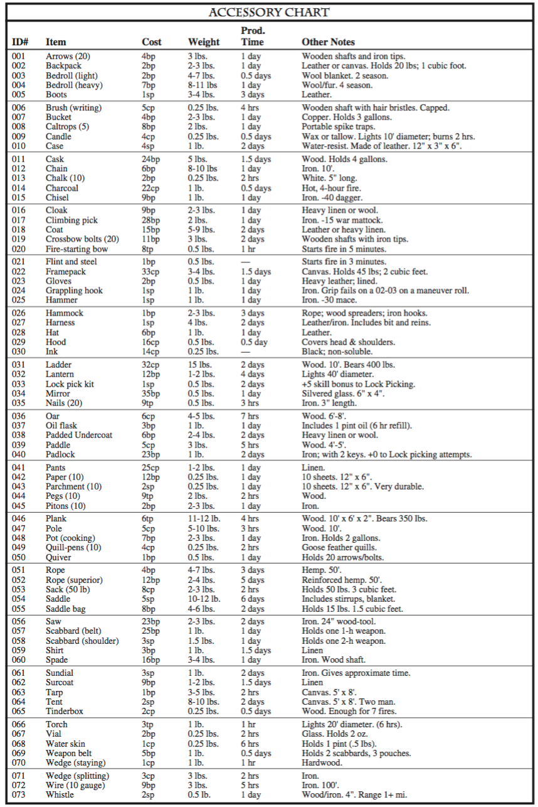
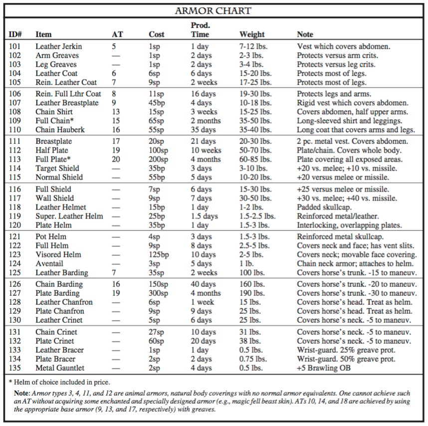
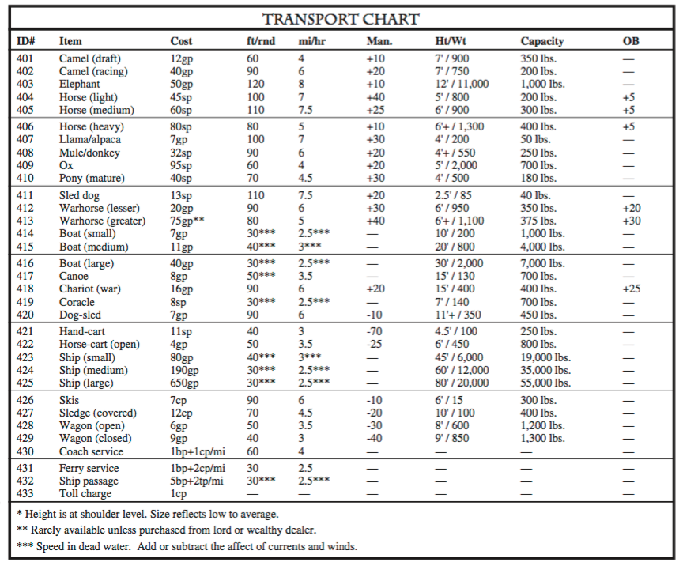
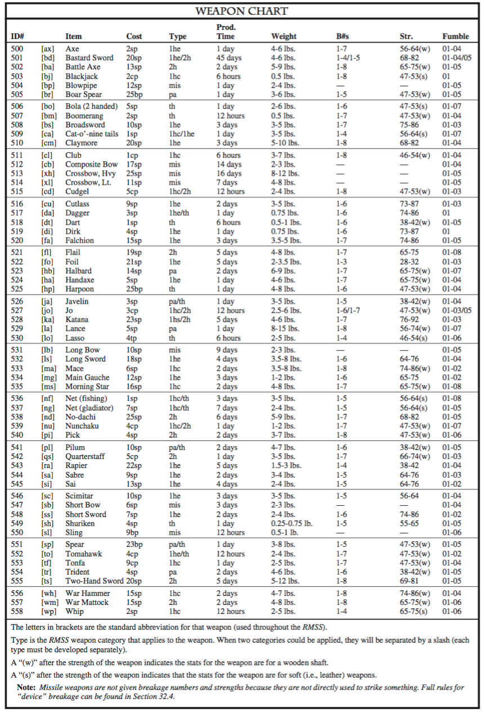
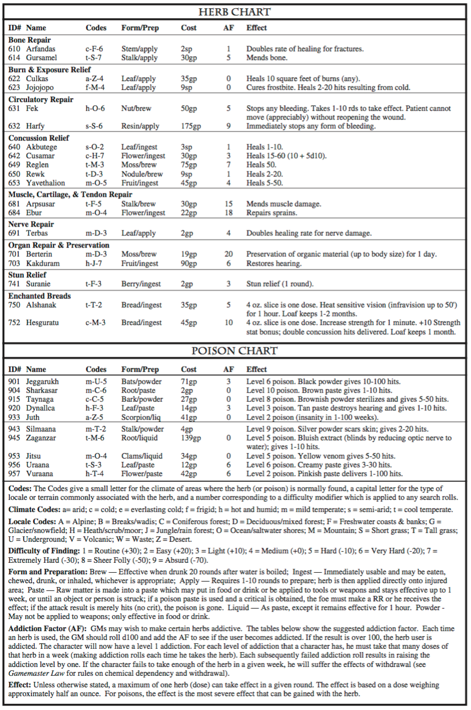
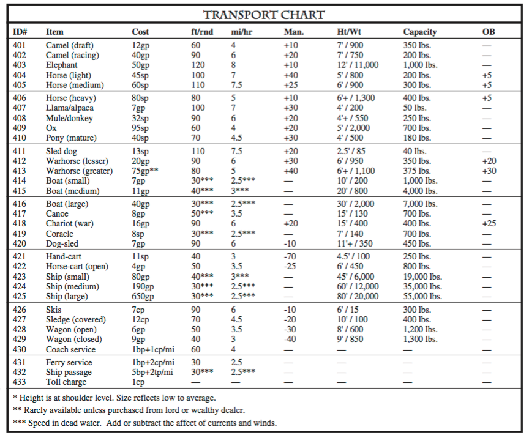
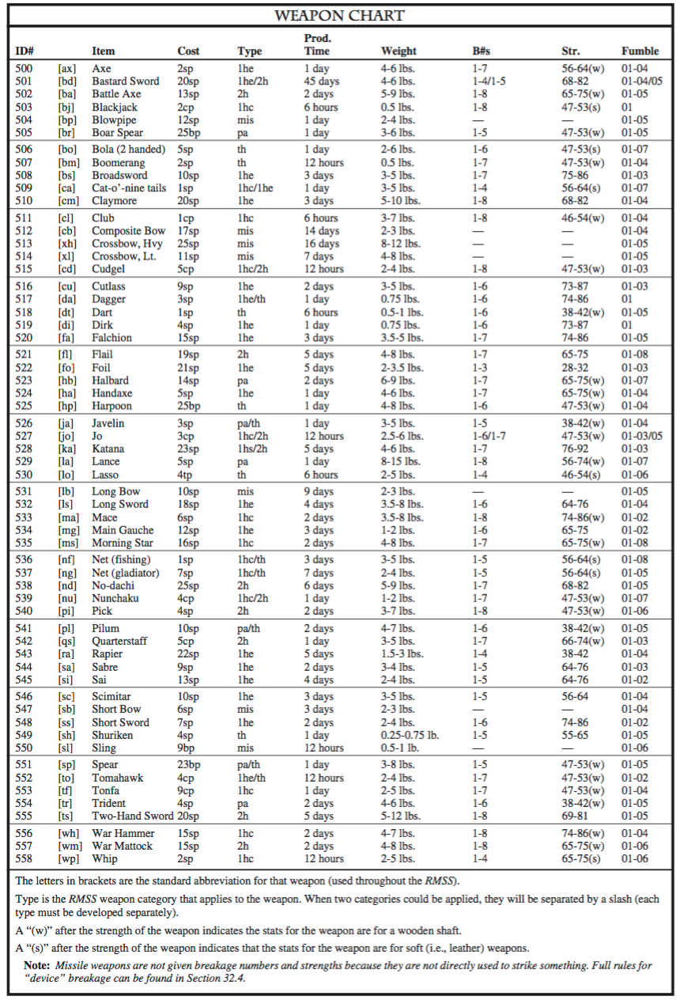
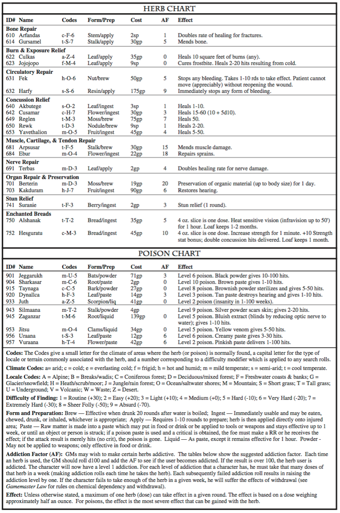

These appendices contain a number of different types of reference material which can be very useful to the GM and players during play. There are nine appendices, each of which covers one type of reference material:
Appendix A-1 — The Skills — This section contains the descriptions, modifiers, system statistics and maneuver tables for each of the skills and skill categories presented in the RMSR.
Appendix A-2 — The Spells and Spell Lists — This section contains material detailing how to use the spells and spell lists in Spell Law.
Appendix A-3 — The Cultures & Races — This section contains a one page description (with system statistics) for each culture/race presented in the RMSR.
Appendix A-4 — The Professions — This section contains a one page description (with system statistics) for each profession presented in the RMSR.
Appendix A-5 — The Talents and Flaws — This section contains guidelines and a number of charts that determine what talents and flaws a character has due to the use of background options.
Appendix A-6 — The Training Packages — This section contains a description (with system statistics) for each of the training packages presented in the RMSR.
Appendix A-7 — The Creatures — This section contains material detailing how to use the creatures in Arms Law and Creatures & Monsters.
Appendix A-8 — The Equipment — This section contains guidelines and a number of charts that outline what what equipment and material a character can obtain (and for how much).
Appendix A-9 — Optional Rules — This section contains some optional material that a GM can use or not use as he sees fit.
This section details all of the skill categories and skills referenced within the Rolemaster Standard Rules. Each skill
category and associated skill definitions are grouped together on the front and back of a single page, with the skill category information
and Static Maneuver Table (SMT) on the front and the skill definitions on the reverse. An optional stat for each skill is provided at the end
of each skill description (see Appendix A-9.2).
General modifiers common to all skills within the category may be found near the bottom of the SMT, while modifiers specific to each skill
may be found with the definition of that skill. On many pages there is room left beneath the SMT for the GM to write down his own
general modifiers.
Occasions will arise where the SMT for a skill category may not produce appropriate results for a particular application of a skill. In this
circumstance, the GM should modify the results to his liking, or use the General Static Maneuver
Table T-4.8.1 (or T-4.3).
All rolls are open-ended high and low.
If the initial unmodified roll is 66 or 100, the special optional entries for those values may be used instead of the
modified result (the GM should examine these results carefully to appraise their suitability to his game; they have been highlighted to
facilitate their exclusion if necessary).
Note that any modifier specified in the text of a result is not cumulative (i.e., an individual can only have one such
modifier in effect at a given time for a particular skill).
Each result has a code associated with it: ##% • #.#※ • ##➠
## % — This indicates the extent to which a maneuver was successful. If partial or extra success is inappropriate, the GM should simply
take 100% or higher as success and anything lower as failure.
## ※ — This indicates a multiplier to the amount of time the task would ordinarily take to accomplish. The GM should determine how
long a "standard" successful maneuver would take, and may, at his discretion, apply this multiplier to that time to determine the speed
with which a character accomplished a task.
## ➠ — This gives a modifier to a subsequent related action on the part of a character. Note that this modifier may only be applied to an
activity that is both immediate and integrally related to the maneuver that yielded this result. For example, a mage makes a static
maneuver using his Research skill to study the teachings of a famous mathemetician, and receives a Subsequent Action modifier of +30.
He then makes an Advanced Math static maneuver to utilize those teachings to solve a complex problem. He may add the +30 modifier to
his Advanced Math static maneuver roll. This modifier is cumulative with any modifier specified in the text of the result.
Note: The GM may determine that this modifier is innapropriate to a particular subsequent action, whereupon it should be ignored.
This category covers the use of rigid metal armor, from metal breastplates to full Maximilian Plate armor.
This category covers the use of leather armor, both soft and rigid, from soft leather tunics to boiled leather cuirasses and the like.
This category covers the use of flexible metal armors, including chain, scale and the like.
Each Armor Type has a Moving Maneuver Penalty (MMP) associated with it for untrained individuals (refer to Armor Table T-3.3). This penalty modifies Moving Maneuver rolls. The different armor types are divided into five groups based upon the composition of the armor: types 1-4 = No armor; types 5-8 = Soft Leather; types 9-12 = Rigid Leather; types 13-16 = Chain; and types 17-20 = Plate. There are no Moving Maneuver Penalties associated with No Armor, and therefore there is no need to apply skill ranks towards it.
The Soft and Rigid Leather skills are both found in the Light Armor Skill Category; Chain is found in the Medium Armor Skill Category; Plate is found in the Heavy Armor Skill Category.
Every encumbering armor has a minimum maneuver penalty associated with it. The skill bonus for maneuvering for a group of armor types reduces the maximum penalty for maneuvering until the minimum maneuver penalty is reached. This limit represents the fact that the weight and constriction of the armor will always hinder the character to some extent. These minimums may vary for certain superior or magical armor.
Example: Dral has 20 category and skill ranks in Maneuvering in Plate Armor. He may wear breastplate and greaves (AT 18) with a MMP of only 30 = 110 - ((10 x 5) + (10 x 3)). If he wears just the breastplate (AT 17), the MMP is 15 even though 90 ((10x5)+(10x3))=10; since 15 is the minimum maneuver penalty associated with wearing a breastplate.
Notes on the Advantages of Armor Types: Armor types are designed to reflect the protective capability on one’s covering. Heavier coverings(e.g., ATs 15, 16, 19, 20, etc.) are usually much more cumbersome than light armor or mere clothing. It is easier to make contact with combatants in heavy armor in combat, but it resists penetration better than the less cumbersome armor types. Therefore, “critical strikes” achieved against the more cumbersome armor types will be less frequent and lower in severity. However attacks resulting in just concussion hits will be more frequent (i.e., the hindrance due to these coverings make the target easier to strike but harder to seriously damage).
Less cumbersome armor types have the advantage of providing the wearer with mobility. Fewer swings will make contact because the agile defender will completely avoid the blows. However, when a swing does make contact, the result is usually more severe than it would be against the more cumbersome armor types: frequent and severe criticals along with more concussion hits are the rule.
Animals often attack the upper body. In addition, their penetrating power is usually limited. This is reflected in the Arms Law animal attack tables. Animals and monsters can be devastating against the lighter armor types where the wearer’s high mobility is outweighed by the creature’s superior maneuverability. However, against higher armor types, most beast attacks are relatively ineffective.
Spell attacks are also affected by armor. Metal armor is particularly effective when a character is resisting spells, but often lessens the wearer’s mobility. Therefore, he may be easier to hit with most Elemental spells but harder to severely damage. Lightning, and other forms of electrical attacks, are more effective against metal clad foes. Fire is more effective against flammable armor types; primarily the organic armor types (e.g., leather and cloth).
In addition, each armor type has a Quickness penalty associated with it. This penalty is applied against the bonus one’s Quickness stat bonus gives to the Defensive Bonus. Note that this penalty cannot bring one’s Quickness stat bonus below zero (0) for the purposes of one’s DB; any result below zero remains zero. {Light: Ag; Medium: St; Heavy: St}
This category includes skills which involve creative expression through the use of physical means or activity. It also includes those activities which are spontaneous or interactive, such as improvisation or duets. The nature of this category implies some form of interaction with the audience or other artists.
This skill provides a bonus for simulating actions or reactions of others, as often used in drama performances, devising new identities, etc. This skill may be used to impersonate others, or hide one’s own reactions from others. It may be used anytime a character wishes to behave or appear in a manner other than that normal and natural to him under any given circumstances. {SD}
This skill provides a bonus for performing dances. It may also apply to any circumstances in which complex and/or precise footwork is necessary (e.g., negotiating a pattern on the floor, performing certain Magical Rituals, etc.). {Ag}
This skill provides a bonus for conveying concepts or information without verbal communication or a codified sign language. This skill is useful when trying to span a language barrier, entertain others, etc. Also used when trying to imitate a particular action (i.e., a movement not requiring a maneuver). {SD}
This skill provides a bonus for imitating sounds. This skill is useful when trying to imitate individuals, animals or even non-animate sounds (e.g., wind, stairs creaking, etc.). {Me}
This skill provides a bonus for using a specific instrument, such as flute, drum, lute, etc. It may also be used to recognize musical patterns or rhythms, notes, etc. Note that separate development is required for skill with each instrument. {Ag}
This skill provides a bonus for improvising or reading poetry. It may also be used to recognize poetical styles, forms, etc. Note that a minimum of 4 ranks in the spoken language utilized is required to use this skill. {Me}
This skill provides a bonus for vocally reproducing musical tunes and/or words. Note that although one may perform a song in an unfamiliar language, this skill does not provide any understanding of that language; this skill merely allows the memorization and reproduction of a song. {Me}
This skill provides a bonus for conveying information in the form of stories or fables in an engaging manner. This is primarily for the purpose of entertainment or subtle instruction; attempts to inform or influence large groups of people should use Influence • Public Speaking instead. This skill may be used for improvisation or to relate memorized stories. This may (GM’s discretion) also be used when attempting to memorize a new story. {Me}
This skill provides a bonus for speaking without appearing to do so. A successful skill roll will make the individual’s voice seem to originate somewhere other than himself, to a distance of up to 1'/level. {SD}
This category includes skills which involve creative expression through the means of non-physical means or activity. It also includes those activities which are considered and crafted, involving the application of creative effort in a structured and extended fashion. The nature of this category often indicates a non-interactive, even solitary activity.
This skill provides a bonus to writing, recognizing or performing in concert a piece of music. This skill may be used to determine the ability of the individual to play in concert with others, or to direct others in doing so. A successful skill roll by a conductor will give those he is conducting a bonus of +20 to their own use of this skill. {Pr}
This skill provides a bonus for creating graphic images. This may be on a flat medium such as sketching or painting with pigments, or painting on an object of some kind. Any activity that involves the creation of an image or deliberate design may benefit from this skill. {Ag}
This skill provides a bonus for the writing of poetry, or any highly stylized form of writing. Note that the individual must have at least four (4) ranks in the written language to be used. Note that this form of poetry is typically of a significantly greater quality than improvisational poetry. {Re}
This skill provides a bonus for the manipulation of a malleable material or the carving of a resilient material into a desired three dimensional shape. This skill does not confer the ability to work materials normally unworkable (e.g., the individual must have the means to mold and form copper if the sculpture is to be formed of that metal). Note that this skill may also be used to identify styles of sculpture and to imitate other sculptures. {Ag}
This category includes those skills which involve the application of strength in a structured fashion, as opposed to a spontaneous or unstructured application (e.g., a frantic effort to break one’s bonds would not be an application of an Athletic • Brawn skill, but a considered effort to use one’s knowledge of leverage and one’s own strength to exert maximum force against a heavy weight would be).
This skill encompasses any athletic game that primarily involves brawn (e.g., wrestling, etc.). Skill in each game must be developed separately, and includes rules, techniques, etc. {Ag}
This skill provides a bonus for jumping, either from a running or a standing start.
The Base Jump (Running Horizontal) for the average man of 5'10" is equal to 50" + (2 x St bonus in inches). For every 2 inches above or below this average height, add or subtract one from the Base Jump. The difficulties listed below assume that the character is running at a dash at the time of takeoff. For every speed category (Fast Sprint/Sprint/Run/etc.) below the Dash rate, raise the difficulty of the running jump by one (e.g., Hard becomes Very Hard, etc.).
The Base Jump (Standing Horizontal) for the average man of 5'10" is equal to the Base Jump (Running Horizontal) divided by two.
The Base Jump (Running Vertical) for the average man of 5'10" is equal to (12 + St bonus) in inches. For every 3 inches above or below this average height, add or subtract one inch from the Base Jump. The optimal speed for a vertical jump with a running start is a Run.
The Base Jump (Standing Vertical) for the average man of 5'10" is equal to the Base Jump (Running Vertical) divided by three.{Ag}
This skill allows the use of a controlled burst of strength to increase the force of a blow, such as with a sword, hammer, or fist. The use of this skill requires a 40% activity action the round before the “strike” takes place. The round of the strike, the character receives a bonus to his OB according to how much force he placed into the blow, which in turn affects the difficulty of the maneuver.{St}
This skill allows the use of a controlled burst of strength to increase the range of a thrown object, such as a javelin, hammer, stone, etc. The use of this skill requires a 40% activity action the round before the “throw” takes place. The round of the strike, the character receives a bonus to his weapon range according to how much force he placed into the throw, which in turn affects the difficulty of the maneuver.{St}
This skill provides a bonus to attempts to lift heavy weights or objects. While it is possible to lift these weights without the use of this skill, the techniques conferred by this skill allow greater weights to be lifted, and the likelihood of injury to be lessened. Note that this skill requires a great deal of practice and exercise to develop properly, and will increase the musculature of the individual. The use of this skill requires a round of preparation, during which only 10% activity may be performed and the individual’s DB is reduced to zero. {St}
This category includes those skills which involve the application of endurance in a structured fashion, as opposed to a spontaneous or unstructured application (e.g., resisting the effects of torture would not be an application of an Athletic • Endurance skill, but a considered effort to conserve one’s energy over a run of many miles would be).
This skill encompasses any athletic game that primarily involves endurance (e.g., track events, etc.). Skill in each game must be developed separately, and includes rules, techniques, etc. {Co}
This skill provides a bonus for maintaining one’s speed over long distances at slow to moderate paces, including pacing one’s resources (exhaustion point expenditure) and running in a safe and non-injurious manner. This skill is used when making moving maneuvers based on pace as described in Section 22.1.2. {Co}
This skill provides a bonus for the propulsion of watercraft through the use of paddles, oars, or poles. It combines the skills required to control and guide the craft with the coordination to work with others in rhythm (when necessary), in addition to the marshaling and pacing of internal resources to last throughout the journey. {St}
This skill provides a bonus for climbing maneuvers of extended duration, including the climbing of mountains, long stairways, etc. It combines the skills required to climb safely and the marshaling and pacing of internal resources to last throughout the entire climb. {St}
This skill provides a bonus for maximizing one’s speed over short distances, including marshaling and pacing one’s resources (exhaustion point expenditure) and running in a safe and non-injurious manner. This skill is used when making moving maneuvers based on pace as described in Section 22.1.2. {Qu}
This skill provides a bonus to swimming maneuvers. Skill rank 1 will prevent the character from drowning in water over his head, provided there are no encumbrance or other penalties. Further skill ranks will enable the character to make headway against a current, to stay afloat for longer periods of time without touching ground, to swim longer distances, to move faster in the water, and to make
maneuvers in the water.
For this skill, MMPs are tripled. The GM should assign high difficulty to swimming in armor. Suggested difficulties are:
Other factors, such as treacherous water, might increase the difficulty. {SD}
This category includes those skills which involve the application of agility and coordination in a structured fashion, as opposed to a spontaneous or unstructured application (e.g., the frantic pinwheeling of arms one makes to maintain balance after an unexpected shove would not be an application of an Athletic • Gymnastic skill, but a considered effort to use one’s knowledge of balance and one’s own flexibility and agility to successfully walk a narrow ledge would be).
This skill provides a bonus for in-air maneuvers (e.g., flying or levitation) or swinging on objects. This skill includes the use of parallel bars, uneven bars, and other gymnastic activities in which the majority of the activity is spent in airborne maneuvers. A successful skill roll can reduce the severity of a falling critical by one (i.e., an 'B' becomes a 'A', a 'D' becomes a 'C', etc.). {Ag}
This skill encompasses any athletic game that primarily involves gymnastic skills (e.g., gymnastic events, soccer, basketball, etc.). Skill in each game must be developed separately, and includes rules, techniques, etc. {Co}
This skill provides a bonus for climbing maneuvers over relatively short distances through the use of hand holds, etc. This could range from the ability to climb sheer faces (absurd) to climbing a ladder (easy). The normal climbing rate for walls with adequate hand holds is 10'/rnd as a “Medium” moving maneuver. Poorer handholds or greater speed will increase the difficulty of the maneuver. Note that extended climbs may require the use of the Athletic Endurance: Scaling Skill. {St}
This skill provides a bonus for manipulating one’s body in order to move through small openings or absorb sudden crushing impact (other than falls). This skill also helps one escape from bonds, etc. {SD}
This skill provides a bonus for controlled falling maneuvers. This can range from controlling the direction of an extended fall to diving into water safely from a great height (up to 20'/skill rank if a successful maneuver roll is made). {Ag}
This skill provides a bonus for flying or gliding through the use of natural or artificial wings (e.g., feathered wings, parachute, hand-glider, balloonist, etc.). Flying/gliding has a natural -75 for all types of maneuvers performed while trying to fly/glide if this skill is not learned or developed. Does not include powered aircraft of any type. {In}
This skill provides a bonus for tossing objects up and manipulating them in such a manner as to keep them up in the air. {In}
This skill provides a bonus for handling a pole to surmount or cross over an obstacle. {Ag}
This skill provides a bonus for rapidly descending from a height, using ropes and other equipment. If the rappelling roll is unsuccessful, the individual has a chance of falling. Rappelling rate is equal to the individual’s normal movement rate, with modifiers due to speed. {St}
This skill provides a bonus for skating maneuvers. This may also (at GM’s discretion) be used to help one stay up right on slippery or icy surfaces without skating equipment. {Ag}
This skill provides a bonus for skiing maneuvers. This may also (at GM’s discretion) be used to help one stay on one’s feet when sliding down an incline without skiing equipment. {Co}
This skill provides a bonus for maneuvering on stilts or other extensions to one’s height. {Ag}
This skill provides a bonus to surfing maneuvers. This includes body surfing, board surfing, and channel surfing. {Co}
This skill provides a bonus for maneuvering along narrow surfaces. {SD}
This skill provides a bonus for horizontal dives, rolling, vaulting maneuvers, or swinging on stationary objects. Also used to decrease the damage one takes from a fall. A character could fall safely up to 2'/skill rank if a successful maneuver roll is made. {Ag}
This category includes those skills which involve unconscious awareness of one’s environment. These skills are passive skills, and may only be trained to a limited extent. Any active observation of the environment falls instead into one of the other Awareness categories. For example, a “danger sense” would fall into this category; a skill in locating traps in a room would not.
This skill provides a bonus for unconscious observation and assimilation of information from the general environment. The GM should use this skill to allow characters a chance to notice objects, events, and other phenomena around them. Note that the use of this skill assumes that the character has not indicated that he is looking for such a thing. If the player is actively seeking something within the
environment, the appropriate Awareness • Searching skill should be used.
The existence of this as an acquirable skill indicates one’s ability to train one’s level of sensitivity to such things, but more active observation should be handled by the skills of Observation and Situational Awareness. {In}
This skill provides a bonus to detect animate traps, ambushes or assassinations in progress. Note that this is a passive skill, and should not be used when the player has indicated that he is actively searching for signs of ambush or assassins. Range is 10' per skill rank.
The existence of this as an acquirable skill indicates one’s ability to train one’s level of sensitivity to such things, but more active observation should be handled by the skills of Observation and/or Situational Awareness. {Em}
This category includes those skills which involve the organized use of one’s ability to recognize and assimilate clues and information in the pursuit of some specific goal, in a structured fashion, as opposed to a spontaneous or unstructured application of such abilities (e.g., an attempt to orient oneself to a combat situation after taking a stunning blow would not be an application of an Awareness • Searching skill, but to trying to read the signs of a battle afterwards in order to perceive the course it had taken would be).
This skill provides a bonus for detecting inanimate traps or ambushes. Note that this skill is not “automatic”; the individual must state that he is searching for signs of a trap or ambush for this skill to come into play. {In}
This skill provides a bonus for perceiving lies told by an individual under proximate observation (within 10' and within visual/hearing range) by the user of this skill. {Em}
This skill provides a bonus for locating secret openings or hidden objects. {In}
This skill provides a bonus for noticing details about the environment for assimilation and analysis. This is normally only usable in an active fashion, and requires concentration. Note that this skill is different from Alertness, which represents a general and unconscious level of receptivity and awareness of events and details within one's immediate environment. This skill reflects the active observation, noting and appraisal of such details. For example, if a character were about make camp in an unsafe location, the GM might make an Alertness static maneuver for that character to determine whether or not he notices the danger. If the character indicated that he wished to examine the location for suitability, the character would instead make an Observation static maneuver.{SD}
This skill provides a bonus for perceiving the presence of poison in/on an item or object. Note that some poisons will simply be undetectable (e.g., a colorless, tasteless, odorless powder that dissolves completely in water will be very difficult if not impossible to detect). {Me}
This skill provides a bonus for gleaning information from a set of tracks or spoor. Detailed information about the tracks can be obtained, such as type of creatures, age of tracks, weight of creature, speed creature moving at, back tracking, etc. This skill is used for identifying the tracks and the skill Tracking (q.v.) is used for spotting and following the tracks. {SD}
This skill provides a bonus for keeping watch over a person, place or object. Also includes the ability to determine the best approach and technique in solving a crime. {SD}
This skill provides a bonus for tracking maneuvers and following of a trail left by someone or something such as foot prints, broken branches, crushed grass, hanging pieces of cloth, etc. The skill Reading Tracks gives the tracker the information about the tracks. {SD}
This category includes those skills which involve the applied ability to assimilate unconscious clues and internal consultation to derive information about the environment, as opposed to a spontaneous or unstructured application of such abilities (e.g., jerking one’s hand away from a hot stove is not an example of using an Awareness • Senses skill, but sensing the direction of a heat source by the feel of it in the air would be).
This skill provides a bonus for determining which way is north or any specific direction, without the aid of navigational instruments. Skill is useful determining direction while underground, during the darkest night without stars, moon, or other night lights. {In}
This skill provides a bonus to determine if the natural order or reality has or is going through turmoil, (e.g., Demonic Gate opening or closing, power fluctuation which is disturbing or causing the fabric of this dimension to shift, holes in the space-time continuum, residual powerful magic, etc.). Note that this skill may be severely limited in its availability. {Em}
This skill is provides a bonus to the individual’s ability to discern detail and information through the use of a particular sense (i.e., sight, touch, etc.). Note that skill for each sense must be developed separately. {Pr}
This skill provides a bonus to the individual’s ability to notice and assimilate information from the environment in a specific type of situation. This is a combination of active and passive skills specifically trained for maximum effectiveness within a given situation. For example, Scouting Awareness is used by the point man in a squad of soldiers to be alert to possible enemy approaches, traps, Sleep Awareness might aid in sleeping lightly to prevent being taken unawares, etc. Urban Awareness might aid in staying alert for muggers, oncoming vehicles, etc. Skill with Situational Awareness must be developed for each situation, as determined by the GM. {In}
This skill provides a bonus for allowing one to be aware of his surroundings without the aid of sight. Blindness accrues a -100 modification; Spatial Location Awareness (SLA) provides a bonus to offset that penalty (the adjusted modification may actually rise as high as +10 through the use of this skill). This skill is usually used by the blind. If a non-blinded individual possesses this skill, they must reorient to use this skill (requires minimum of one round). If the individual fails this roll, he is treated as blinded for that round. For each round the individual is left undisturbed or uses only 20% of hisactivity, hemay add +5 to the orientation roll each round. This +5 is cumulative (to a maximum of +50) provided there is no interruption of the individual’s concentration. This skill is blocked by intervening barriers. {Pr}
This skill provides a bonus for determining the time of day or how much time has passed over a specific period. This is a combination of the ability to estimate internally the passage of time, as well as using external references such as the sun, stars, etc. When no external referents are available (e.g., underground,in a jail cell, etc.), it is significantly more difficult to estimate the pasage of time. Also, after sleep or unconsciousness one typically requires the use of external referents to "reset" one's internal clock; the lack of same will hinder the use of this skill.
This skill may be used to attempt to wake oneself from sleep at a predetermined time. {Em}
Skill rank in Body Development is one of the factors which determines how many hits (concussion hits) a character can take without passing out. A character’s total hits are equal to his Body Development skill bonus.
The number of hits a character can take is equal to his Body Development skill bonus. This skill enhances the character’s ability to resist damage, and withstand pain and shock. A character’s Body Development skill bonus determines how many hits (concussion hits) a character can take without passing out. Note that this is not merely strength training—training in this skill provides a greater tolerance for pain, physical toughness and discipline in the face of wounds and bleeding. An individual might remain a very slight and frail-looking individual but still hold a large number of ranks of body development. Whenever this skill is developed, consult the Race Abilities Table T-1.1 and reference the character’s race against the column titled Body Development. These numbers show the skill bonus progression for the character’s race. {Co}
Note: All characters receive a special +10 bonus to this skill.
Each character has a maximum number of hits (also called concussion hits) equal to his skill bonus for Body Development. Normally, this skill bonus consists of the following:
Body Development skill bonus = Total Hits
= 10 + (2 x Co stat bonus) + SD stat bonus
+ profession bonus + skill rank bonus + any special bonuses
A character takes hits as damage from attacks—hits reflect pain, shock, and bleeding. When the hits that a character has taken is greater than or equal to his maximum hits, he passes out. When the hits that a character has taken is greater than or equal to his maximum hits plus his Constitution, he dies.
Hit Exhaustion: A character receives a penalty to his attacks and maneuvers based upon what percentage of his hits he has taken:
Healing Hits: Once a character has taken hits, they may be “healed” in the following four ways:
If a character is active, one hit is recovered every three hours.
If a character is resting, (Co stat bonus ÷ 2) hits are healed every full continuous hour of rest (at least one hit is recovered, even if the Co stat bonus is less than one).
If a character is sleeping, (Co stat bonus x 2) hits are healed for every three hours of continuous sleep. If this sleep is interrupted, hits are still healed as in 2) above.
In addition, hits may be healed by outside methods (see Section 32.2); e.g., spells, herbs, etc.
Example: Hoodaw the Half-elven Bard has decided that he’s tired of his own sniveling everytime he drops his staff on his foot. He began with 17 concussion hits [(10 (for the special bonus) + 7 (for the rank he receives during adolescence) + 5 (for the profession bonus he receives as a Bard) -6 (for twice his Constitution stat bonus of -3) + 1 (for his Self-Discipline stat bonus of +1) = 17]. He buys two more ranks in Body Development, and consults the Race Abilities Table. His progression (for Half-elves) is 0 • 7 • 5 • 3 • 1. As this is his second and third rank of Body Development (the rank during adolescence counts, remember), he is delighted to discover that he now gets to add 14 points to his Body Development total. He struts away, sneering at danger.
This category deals with the use of specialized maneuvers used in combat to achieve specific results. This may include fighting styles, special strokes, or defensive maneuvers used in conjunction with a particular mode of combat. Note that these skills serve as limits and modifications to combat abilities and are not attacks in and of themselves.
This skill provides a bonus for using the body (hands, etc.) or a weapon or a shield to deflect or even catch a thrown weapon or missile directed at the user (this is treated as an action requiring at least 50% activity; with a -1 modification for each 1% activity less than 50%). To determine the effect of such an attempt roll (open-ended) add the Adrenal Deflection skill bonus. Then refer to the Maneuver/Movement Table, T-4.1, using the “Extremely Hard” column against thrown weapons and the “Sheer Folly” column against missile weapons. If the result is a number, it is subtracted from the weapon’s attack roll (in addition to the normal DB). If the missile or thrown object misses, the character has a chance of catching the item. Roll d100 (open-ended) and add the modification received earlier from the Movement Maneuver Table; if the result is over 100, the item has been caught, if desired. {SD}
This skill limits one’s OB against an opponent while mounted. The OB of an attack made while mounted can not exceed the attacker’s Mounted Combat skill bonus. A character's Mounted Combat skill cannot have more skill ranks developed than his Riding skill ranks. {Em}
Example: Kohrist the Surly prefers to use a battleaxe while horsed, and wields it with a formidable +98 OB. He is only an adequate rider, however, having 6 ranks in Riding. He is limited to 6 ranks, therefore, in Mounted Combat. After stat bonuses and other modifications, his Mounted Combat skill bonus is +37. He will therefore only be able to wield his battleaxe from horseback with an OB of +37. If he wishes to increase his Mounted Combat skill, he is going to have to increase his skill at Riding as well.
This skill provides a bonus for getting a weapon from scabbard into battle very quickly. If successful, the weapon is out of the scabbard and in hand and moreover may make an attack and/or move the same round without the normal 20% activity required (-20 penalty) for drawing a weapon. If the skill check fails, he has dropped the weapon. On a partial success, the character takes the normal time (and penalty) to draw the weapon. {SD}
This skill provides a limit for applying one’s melee OB against an opponent to one’s flank or rear without turning or changing position. The OB of an attack made in this fashion can not exceed the attacker’s Reverse Stroke skill bonus. Note that this skill must be developed separately for each weapon category. {Pr}
This skill allows an individual to immobilize or render unconscious a target by applying a sharp blow to a precise point on the victim’s upper body. The foe is assumed to be “of kind” (usually humanoid) and not “Large” or “Super-large.” The OB of a subduing attack can not exceed the attacker’s Subdual skill bonus (e.g., a Fighter with an OB of +120 and a Subdual bonus of +70 would only be able to apply a +70 OB to his attack). Instead of rolling criticals on the Critical Table indicated by the Weapon Attack Table, the AL Subduing Critical Table 4.9 should be used. {SD}
This skill allows an individual to perform elaborate maneuvers with his weapon, including flourishes and feats of weapon control. This skill may, at the GM’s discretion, be used to recover control of a fumbled weapon (only possible if a fumble result has indicated that the wielder has “lost control” of a weapon, not “dropped” it), and may be used to perform unusual maneuvers with one’s weapon. Note that fumbles resulting froms washbuckling attempts may not be negated by further use of this skill. {Pr}
This skill provides a bonus for evading a attack by using a tumbling maneuver. The skill rank (not the skill rank bonus) is added to the DB. This skill is rolled for during the round that the skill is actively used. Individual may not parry, use a shield, or attack while using this skill. {Ag}
This skill allows a combatant to fight with two weapons simultaneously. He is allowed to make 2 weapon attacks for each melee attack action, and may engage two opponents providing neither opponent is receiving any positional combat modifiers for their OB (e.g., If either opponent is receiving +15 for Flank Attack or +20 for Rear Attack the individual cannot attack both opponents in the same round).
Two Weapon Fighting skill must be developed for each individual two-weapon combination (e.g., shortsword handaxe, rapier/dagger, etc.). A character's skill rank with a two-weapon combination may not exceed his skill rank of either of the individual weapons (e.g., if a Fighter has 5 skill ranks with a dagger and 9 skill ranks with a short sword, he may only have 5 skill ranks with his short sword/dagger two-weapon combination). The OB for each weapon attack is equal to the skill bonus for the Two Weapon Fighting skill for the combination of those two weapons.
Against 1 Opponent: There is no negative attack modification against one opponent.
Against 2 Opponents: There is -20 modification to both attacks.
Parrying: The user must reduce both weapon OBs by the same amount (i.e., the amount of his parry). Against one opponent, the user increases his DB by the amount of his parry. Against two opponents, the amount of his parry must be split between the two opponents as the user sees fit.
Using the off-hand: Each weapon combination is considered to have been developed for each specific weapon in a specific hand. For example, a Rogue trained in a rapier/dagger combination might have decided to use the rapier left-handed and the dagger in his right. Switching either weapon to the other hand incurs the normal -20 penalty for use with the off-hand. {SD}
This category encompasses those skills involving the coordinated transfer of information from one being to another by whatever means available or preferred. Whether this is in the form of language or smoke signals, it covers only the actual process of transfer and understanding of the communication medium, not the analysis or use of such information (e.g., understanding the words spoken by a Sphinx involves the use of these skills; figuring out the riddle does not).
Rolemaster is created for a world with a variety of cultures and languages. There is no such thing as a common tongue or an alignment tongue (though a GM can add them for his world system), although certain professions have developed their own languages for use in research. Each language must be developed individually, with the written and spoken versions of a language each counting separately. Skills in one language normally have little effect on others; however, “brother languages,” those deriving from an immediate common ancestor, may be an exception.
One’s skill rank indicates the level of comprehension of a spoken or written language. See the Language Rank Table T-4.7.
One’s skill bonus with a written form of a language serves as a skill bonus to writing attempts using that language. The spoken skill bonus for a language is used to improve communication with someone. A successful static maneuver means that the spoken language rank of the person with whom you are communicating is temporarily increased for the purposes of this conversation, to a maximum of
the rank developed by the individual performing the static maneuver. {Em}
Example: Beeborukamuk has 7 ranks and a bonus of +42 (through various bonuses) in the language of Jeepha. He is trying to communicate with Mook, who has only 3 ranks in it. He makes a static maneuver to attempt to communicate effectively with Mook at rank 7 (a -40 modification to the maneuver), and succeeds. Mook’s rank in Jeepha is considered to be at rank 7 for the purposes of this single conversation. Note that there is no possibility that a maneuver could have raised Mook’s effective rank to 8, as Beeborukamuk doesn’t even speak that well.
Racial Languages: These are the languages generally used and recognized by the individual races.
Example: Elvish and Dwarvish.
Cultural Languages: These are the language variations in an area, usually related to some extent to the racial language(s).
Example: The sibilant tongue of the North Vestallans, or the guttural speech of the Gettians.
Social Languages: These are the language variations in a particular culture.
Example: High Erian is used by the nobility in Eria, Common Erian is spoken by most others, while Street Talk is used by the lower classes. It is up to the individual GM to determine whether any such variants exist and what their similarity to each other is (e.g., knowing Erian High Speech allows half skill rank in Common Erian and 1/4 skill rank in Street Talk).
Professional Languages: These Languages are the special Languages spoken by a particular profession, and need not be related to any spoken language.
Example: Sword Tongue is spoken by the members of the Brotherhood of the Blade and is a special manufactured language used for recognition and secrecy by the higher echelons. Old Landalian is spoken by the members of the Elcaluva College (spell users) for the same reasons plus the fact that it is the now dead language that many of the ancient Magi used (and wrote their texts in). The Thieves’ Guild uses a hyper-slang language known as Thieves’ Chant, for recognition, secrecy, and safety.
Religious Languages: These Languages are the special Languages spoken by the various religious orders, for reasons of tradition, ceremony, and recognition. They may or may not be related to any other spoken language.
Example: The Priests of Kanorak speak Kanorakki in High Ceremony and for recognition (a god-given language for the followers of the True Faith), and Old Nakrin, an ancient form of the current language which can be spoken by laymembers at 1/2 skill rank. Druid Tongue, however, has been preserved unchanged untold Eons and while spoken by the Inner Circle of Druids, is now too far removed from current Languages to be considered related.
This skill provides a bonus for reading lips and sign language. Lip reading is only possible with languages that the lip reader knows and then only to the known spoken skill rank. Special creatures (e.g., the Chicken People) might cause a penalty to be added to the character’s bonus due to distinct lack of lips. Line of sight must be maintained with the subject’s mouth. Skill is halved for reading the lips of creatures not of the same general type. Types: Human, Reptile, Avian, Non-Human Mammalian, etc. {SD}
This skill enables characters to learn magical languages. These languages are acquired in the same fashion as are regular languages. These Languages are rarely spoken except in conjunction with spell casting, where they aid the spell’s potency. This is the language of Power Words. The effects of such languages will be covered in an upcoming RM supplement.{SD}
This skill provides a bonus when using any form of signal communications. This skill is a specialized form of linguistics and linguistics guidelines apply. {Me}
This category encompasses the use of particular craftsman skills, such as making jewelry, copper etching, cloth work, etc. Note that these skills are all physical applications of skill to produce a desired object or product. Skills dealing with the abstract analysis or theory of these obects should fall instead under the Technical/Trade Group.
The list above is not exhaustive; there is a nearly infinite number of possible crafts.
The following is a partial list of suggested crafts not defined within this section (each of which is developed separately):
This skill provides a bonus cooking or preparing food. This skill bonus may also be used when detecting bad food, or preparing neutralizing dangerous food ingredients. {In}
The following is a partial listing of cookery skills:This skill provides a bonus to draw an item, object, blue prints, etc. This is not free hand drawing; specialized drafting equipment (squares, triangles, compasses, etc.) is used in making accurate and precise drawings (normally to scale). {SD}
This skill provides a bonus for making an arrow out of available wood, metal, paper, and/or feathers. Note: With this skill, sophisticated types of special purpose arrows may be crafted (such as hunting, armor piercing, message, howling, poison bearing, etc.). {In}
This skill provides a bonus for growing flowers, fruits, fungi and vegetables. It includes the feeding, care, and harvesting of such plants. {Em}
This skill provides a bonus for working with hides and creating leather goods (e.g., leather armor, bolas, etc.). {SD}
The following is a partial listing of leather crafts:This skill provides a bonus for working with normal metals to create or repair desired objects (e.g., horse shoes, metal ornaments). Bonus for oven or kiln building, and doubling effects of fires. {In}
The following is a partial listing of smithing crafts (each is a separate skill that must be developed separately):This skill provides a bonus for knot recognition, knot-tying, braiding, rope splicing, making a maneuver while suspended from a rope (or analogous flexible line), or when throwing a line. {In}
This skill gives proficiency in secretarial skills, including calligraphy, taking dictation and librarian skills. {SD}
This skill gives a bonus to performing service duties, such as those of a valet, maid, butler, etc. {SD}
This provides a bonus to static maneuvers involving sewing or weaving. These skills includes fashioning garments, blankets, etc., as well as repairing such items. {In}
This skill provides a bonus for removing, preparing, treating and caring for animal skins. Note that while this would allow a simple drape to be fashioned, this does not provide the sewing skills necessary to create normal garments. {In}
This skill provides a bonus for working with stone and creating sculptures, writings, or any other form of inscription or relief. {In}
The following is a partial listing of stone crafts, each of which is a separate skill that must be developed separately:This skill provides a bonus to trapping skills, including setting simple snares, identifying animal runs, and a knowledge of the values of various furs, skins, etc. {Em}
This skill provides a bonus for fashioning any object out of the required amount of wood, bone or similar material. {In}
The following is a partial listing of wood crafts, each of which is a separate skill that must be developed separately:Spell Law makes provision for attack rolls for certain “directed elemental” spells. (See Section 23.7) Skill must be developed separately for each such spell. A character wishing to develop skill with such a spell must be able to cast it at least once a day (either intrinsically or from an item).
| General and GM-Assigned Modifers | |
| Defender's Quickness | -25 to +35 |
| Full Cover | -60 |
| Partial Cover | -30 |
| Static Target | +30 |
| Wall Shield (NA) | -30 |
| Full Shield (NA) | -20 |
| Normal Shield (NA) | -15 |
| Target Shield (NA) | -5 |
| No Helmet | +5 |
| Full Helmet (covers face) | -5 |
| Range | -75 to +35 |
The skills in this category provide bonuses to directed spell attacks utilizing the elemental form to which they apply. For example, skill in fire directed spells will give a bonus to all Fire Bolts (regardless of range). Skill may be developed separately for each such spell. A character wishing to develop skill with such a spell must be able to cast it without the need of a spell roll at least once a day, either intrinsically or from an item or runes (i.e., it cannot require overcasting, etc.).
The five types of directed spells (with their associated Attack Table) are Fire Bolts (SL 5.4), Ice Bolts (SL 5.5), Lightning Bolts (SL 5.6), Shock Bolts (SL 5.7) and Water Bolts (SL 5.8). See Section 23.7 for guidelines on handling Directed Spell attacks. {Ag}
This category encompasses those skills which deal with an intentional and applied effort at influencing, manipulating, or deceiving others.
This skill provides a bonus for offering a bribe to an individual in the proper and unobtrusive manner. At the GM’s discretion, this may also allow the identification of bribeable individuals; the GM may also allow the use of this skill to help in identifying persons likely to have been bribed by the evidence of some unusual behavior. {In}
This skill provides a bonus for operating successfully in a complex, bureaucratic foreign environment, such as a foreign royal court or any other large foreign government structure. Tact, negotiation, and deceit are all facets of diplomacy. It is used for the conducting of relations between nations. It is important to note that this skill provides a bonus for using the proper protocol in an unfamiliar situation and impressing a person in authority. This applies to situations ranging from an audience with the High King to an involuntary meeting with the Prince of Thieves. For operating within a familiar government system, refer to Administration. {In}
This skill provides a bonus for speaking quickly, convincingly, and confusingly in order to get a victim to do something they would not ordinarily do. This skill usually may be used on only one person at a time. {In}
This skill provides a bonus for extracting information from an intelligent source. This may or may not include causing discomfort to the target. However, if a target is discomforted and the “interrogation roll” fails, the target may suffer a major injury or death. In such a case, the target should roll an RR vs. level 10, using Co/SD/Co as a modifier to determine the extent of the injury. This skill not only applies to torture but also includes the ability to piece together scattered fragments of information received. {SD}
This skill provides a bonus to inspire and command others to follow you, and to make others believe that you are competent to lead and that you know what you are doing. This includes the ability to raise the morale of those you command. {Pr}
This skill provides a bonus for influencing others through indirect means, rather than direct speech. Includes such ideas as starting rumors, as well as designing large advertising campaigns. {Re}
This skill provides a bonus for impressing, entertaining, or manipulating groups of people directly. Note that this is different from the Tale Telling skill, which is used on small groups, using stories and fables for entertainment and instruction. Public Speaking is for larger groups, is often more extemporaneous, and is used to manipulate the emotions or views of a crowd. {In}
This skill provides a bonus when attempting to emotionally, sensually, or sexually manipulate someone. Note that this is not limited to sexual seduction! Manipulation of a persons sensual sensibilities, urging a person to indulge in some fantasy or desire, and convincing a person of some tenet on emotional rather than rational grounds can all be classified as seduction. {In}
This skill provides a bonus for transactions involving a bargained exchange of money or goods, particularly with respect to rolls on the purchase and resale price charts found in Gamemaster Law. {SD}
This category encompasses the use of informational and academic skills which are available to most people with the determination to learn them.
This category encompasses the use of informational and academic skills dealing with magic and magical things. They are usually available only to those with access to magical resources and/or instructors.
This category encompasses the use of informational and academic skills dealing with extremely unusual or obscure topics, often dealing with rare races and the like. Note that the availability of these skills should be limited to those with unusual magical or academic resources.
This category encompasses the use of technical informational and academic skills dealing with relatively common topics.
Lore skills have a Standard skill bonus progression because it is assumed that there are common elements to certain “types” of Lores. The Lore Categories maintain this convention, but the GM may decide that these skills are disparate enough to warrant a Combined skill progression. If so, the development point costs should be doubled, reflecting the lack of skill category ranks.
This skill provides information about the beliefs, rituals, or other information about a specific culture. Note that skill for each culture or race must be developed separately. All characters begin with ranks in Culture Lore for their own culture. See Section 13.0. {Me}
This skill provides a bonus for recognizing and identifying the major animal forms within a specific area, region and climate. May be developed either in-depth for a specific area or as general education in fauna/ zoological trends. Several different regions/climates may be developed simultaneously, provided that research materials are available. Note: This skill may be used for learning about specific species as well, providing great detail on the characteristics and habits of a particular type of animal. {Em}
This skill provides a bonus for recognizing and identifying the major plant forms within a specific area, region and climate. May be developed either in-depth for a specific area or as general education in flora/botanical trends. Several different regions/climates may be developed simultaneously, provided that research materials are available. Note: This skill may be used for learning about specific species as well, providing great detail on the characteristics and habits of a particular type of plant. {Em}
This skill provides a bonus for designing or recognizing the particular heraldic crests (coats-of-arms) specific to a given culture. Separate cultures must be developed separately. {Me}
This skill provides knowledge about the past. One may develop this skill in general World History (subject to the available learning materials—i.e., if knowledge about the other side of the world is not available, it may not be learned) although the information will be far less specific, focusing instead on the broad strokes of history. If this skill is developed in the history of a particular region or subject, the information will be far more specific. In essence, the smaller the focus of the skill, the greater the level of detail and accuracy. Developing skill in the history of the Kingdom of Harran, for instance, might provide information about the rulers and the great events in the Kingdom's past; skill in the history of the Guild of Architects in the city of Jeppod would likely include all of the names of the Guild’s officers, the bylaws memorized by heart, etc. This skill encompasses military history as well. {Me}
This skill provides a bonus for recognizing and identifying major aspects of philosophic doctrines. Each philosophy doctrine may be concentrated in and learned separately for in-depth knowledge and understanding. {In}
This skill provides knowledge about the beliefs, rituals, or other information about a specific region. Note that skill for each region must be developed separately. All characters begin with ranks in Region Lore for their own region. See Section 13.0. {Me}
This skill provides a bonus for recognizing and identifying major aspects of religious doctrines. Each religion may be concentrated in and learned separately for in-depth knowledge and understanding. {Me}
This skill provides a bonus for recognizing and knowing the powers of potent magical items. {Me}
This skill provides a bonus for manipulating and using magical circles in conjunction with spells. It also allows non-magical research in defining, identifying new “Circles” in which to add to his repertoire of circle spells. {Me}
This skill provides a bonus for recognizing and navigating other planes of existence; it also provides knowledge about other planes. {In}
This skill provides a bonus to recognize and understand spells. When a character realizes that he has been targeted by a spell, this skill enables him to recognize the spell being used against him. When attempting to recognize an unfamiliar written spell, the character must be able to read the language used. {Me}
This skill provides a bonus on manipulating and using symbols in conjunction with the appropriate symbol spells. Also allows non magical research in defining and identifying new “Symbols” to add to his repertoire of symbol spells. Note that the GM may decide to allow this skill to help interpret dreams. {Em}
This skill provides a bonus for recognizing and (with the proper magic and materials) creating Undead. {Me}
This skill provides a bonus on manipulating and using wards in conjunction with the appropriate ward spells. Also allows non magical research in defining & identifying new “Wards” which to add to his repertoire of ward spells. {Me}
This skill provides a bonus for recognizing, and identifying the major powers and abilities of extra-dimensional beings, and information pertaining to demons/devils (land, items, etc.). {Me}
This skill provides a bonus for recognizing and identifying the major powers and abilities of dragons, and information pertaining to dragons (e.g., lands, items). {Me}
This skill provides a bonus for recognizing and identifying the major powers and abilities of faeries, and information pertaining to faeries (e.g., lands, items, etc.). {Me}
This skill should be used by the GM to insert Lores dealing with unusual or rare races not listed here. This skill may also be used to simulate esoteric Lores developed by those races. {Me}
Example: The Shimmiebops of Dimension X have their own Philosophy which is radically different from our own. The GM rules that learning Shimmiebop Philosophy falls under Xeno-lore.
This skill provides a bonus for recognizing/identifying herbs. {Me}
This skill provides a bonus for recognizing and identifying major forms of locks and similar devices. {Me}
This skill provides a bonus for recognizing and identifying metals, alloys, metallic crystal structures, etc. Also will give information on famous, magical, historic, legendary, or cursed types of metals. Skill must be developed separately for each culture or region as applicable to the GM’s world scheme. {Me}
This skill provides a bonus for recognizing and identifying poisons, as well as knowledge of proper application and usage techniques. (These may require an Using/Removing Poison skill roll to actually carry through.) {Me}
This skill provides a bonus for recognizing and identifying stones. Also will give information on famous, magical, powerful, historic, legendary or cursed types of stone. Skill lore is developed separately for each culture or region as applicable to GM’s world scheme. {Me}
This skill provides knowledge of trade-related affairs. Trade routes, customs laws, exchange rates, traditions and rituals, etc. are all encompassed by this skill. {Me}
This category encompasses the use of Martial Arts skills involving the so-called “hard” martial arts, typified by devastating blows dealt with the hands, feet, elbows and the like. Boxing and such activities are also considered to be Martial Arts, and can be found in this category.
This category encompasses the use of Martial Arts involving the so-called “soft” martial arts, typified by throws, grappling, sweeps and powerful controlling techniques. Blocking and Wrestling are considered Martial Arts (albeit limited ones), and can be found in this category.
Note: Early editions of Arms Law refer to “Rank” 1-4 instead of “Degree” 1-4. This has been corrected and should be read as “Degree” 1-4.
This is the skill of using one’s fists to strike at an opponent’s upper body and torso, while protecting oneself from similar blows. This skill uses the Arms Law Martial Arts Strike Attack Table 3.8 and may not exceed the damage done by an equivalent Striking Degree 1 attack. {St}
This skill represents the basic and most simple forms of a formal “hard” martial art. These forms must be learned before an individual may progress to the higher degrees, as it represents the fundamentals of the art. Criticals should be rolled on the Martial Arts Strikes Critical Strike Table 4.5.{St}
This skill represents the intermediate forms of a “hard” martial art. Note that this skill is more effective than the Striking Degree 1 skill. Because this skill builds on the previous Degree of this art, the ranks of this skill cannot exceed the ranks the character has in Striking Degree 1. Criticals should be rolled on the Martial Arts Strikes Critical Strike Table 4.5. {St}
This skill represents the advanced forms of a “hard” martial art. Note that this skill is more effective than the Striking Degree 2 skill. Because this skill builds on the previous Degree of this art, the ranks of this skill cannot exceed the ranks the character has in Striking Degree 2. Criticals should be rolled on the Martial Arts Strikes Critical Strike Table 4.5.{SD}
This skill represents the most advanced forms of a “hard” martial art. Note that this skill is more effective than the Striking Degree 3 skill. Because this skill builds on the previous Degree of this art, the ranks of this skill cannot exceed the ranks the character has in Striking Degree 3. Criticals should be rolled on the Martial Arts Strikes Critical Strike Table 4.5. {SD}
This is the skill of diving at a person in order to bring them to the ground in the intent of momentarily immobilizing them. Injury is more common than with wrestling (although part of this skill is avoiding injury to oneself during the tackle), and is used in moving situations such as chases, sports activities, etc. The Arms Law Martial Arts Strikes Attack Table 3.8 is used with a maximum result equal to an equivalent Striking Degree 1 attack, and Grappling Criticals are used. If a struggle continues after a successful tackle, the Wrestling skill should be used instead. {Qu}
This skill is used to knock down or hold a person at bay without intent of injury. Note that it is merely to keep a person from crossing some line or location, not to immobilize them. The Arms Law Martial Arts Sweeps Attack Table 3.9 is used with a maximum result equal to an equivalent Sweeps Degree 1 attack, and Unbalancing Criticals are used. {St}
This skill represents the basic and most simple forms of a formal “soft” martial art. These forms must be learned before an individual may progress to the higher degrees, as it represents the fundamentals of the art. Criticals should be rolled on the Martial Arts Sweeps Critical Strike Table 4.6. {Ag}
This skill represents the intermediate forms of a “soft” martial art. Note that this skill is more effective than the Sweeps Degree 1 skill. Because this skill builds on the previous Degree of this art, the rank of this skill cannot exceed the ranks the character has in Sweeps Degree 1. Criticals should be rolled on the Martial Arts Sweeps Critical Strike Table 4.6. {Ag}
This skill represents the advanced forms of a “soft” martial art. Note that this skill is more effective than the Sweeps Degree 2 skill. Because this skill builds on the previous Degree of this art, the rank of this skill cannot exceed the ranks the character has in Sweeps Degree 2. Criticals should be rolled on the Martial Arts Sweeps Critical Strike Table 4.6. {SD}
This skill represents the most advanced forms of a “soft” martial art. Note that this skill is more effective than the Sweeps Degree 3 skill. Because this skill builds on the previous Degree of this art, the rank of this skill cannot exceed the ranks the character has in Sweeps Degree 3. Criticals should be rolled on the Martial Arts Sweeps Critical Strike Table 4.6. {SD}
This is the skill of using one’s arms and legs to grapple an opponent and immobilize him. Note that it is not normally intended to be injurious to either partner, although injury may inadvertently result (this skill may, however, be used to immobilize an opponent who does not wish to be held, but it assumed that injury is not the intent). Attacks are resolved on the Arms Law Martial Arts Sweeps Attack Table 3.9 with a maximum result equivalent to that of a Degree 1 attack, and Grappling criticals are used. {SD}
This category encompasses the use of skills involving the raising, handling, training, and care of animals.
This skill provides a bonus for the care and feeding of animals including bedding, hobbling, etc. This skill must be developed separately for each different type of animal. This skill is normally used in the handling of one animal at a time. {Em}
This skill provides a bonus for administering medical aid to injured animals. Allows one to stabilize or repair light wounds and illnesses. Successful static maneuver can stop (or reduce) up to 5 hits/rd bleeding. The general modifications above do not apply to this skill. This skill must be developed separately for each different type of animal. {Em}
This skill provides a bonus for simple communicating and if possible, the mastering of an animal. This skill must be developed separately for each different type of animal. The animals that are controlled by use of this skill do not have to be trained or tame. The animal will only do what is within its capabilities. If the skill roll fails, the animal will revert back to its basic tendency. {Pr}
This skill provides a bonus for training a particular type of animal, such as birds of prey, dogs, bears, big cats, etc. Skill normally results in the taming of the animal. This skill must be developed separately for each different type of animal. {SD}
The following is a sample listing of animal skills:As in Riding, skill ranks in driving must be developed separately for different types of vehicles. Vehicles are defined as animals pulling such objects as wagons, carts, sleighs, etc. One skill rank allows basic understanding of the controls; subsequent ranks reflect increased ability and some quickness in maneuvers. {In}
This skill provides a bonus for gathering, befriending, or manipulating herd animals. Skill normally deals with one coherent group (herd) of animals at a time. This skill must be developed separately for each different type of animal. {Em}
A single skill rank is necessary to keep from constantly falling off the animal being ridden. Higher skill ranks enhance the chance of controlling of the animal, or gaining control of an unfamiliar animal (of the type you have skill with). This skill must be developed separately for each different type of animal. See Section 18.2.8 for more information on Riding. {Em}
This category encompasses the use of skills involving information-gathering and surviving in the outdoors and other unusual environments. These skills may range from gathering food to understanding how best to resist extreme heat or cold.
This skill provides a bonus for determining natural course and lay of a cave or cavern (passage or chamber). Bonus when attempting an unassisted maneuver in a cave. {Me}
This skill provides a bonus for finding any local source of potable water or edible plants and animals. Includes basic food acquisition such as gathering or fishing. {Em}
This skill provides a bonus to hunting maneuvers. Note that tracking and recognizing game is covered by other skills; this skill gives bonuses to the actual hunt, including setting up blind runs, leading and driving game, etc. {Em}
This skill provides a bonus for determining dates, directions, and locations when the stars are visible. May provide a bonus to one’s navigation skills. {Me}
This skill provides a bonus for living in a specific dangerous or hostile environment. Note that this skill encompasses only those methods needed to stay alive against the actively dangerous elements of an environment (e.g., blistering heat, cold, pressure, unusual animals typical of the environment, etc.). It does not include food gathering, although it does include the knowledge necessary to find water. Skill must be developed in each type of environment (e.g., desert, jungle, arctic, water, etc.). The GM may rule that unusually hostile environments may also be covered by this skill (e.g., vacuum, underwater, elemental planes of fire, etc.). {In}
This skill provides a bonus for determining local weather for next 24 hours. {In}
This category encompasses the use of skills involving the perception and interpretation of magical power, information, and writings.
This skill enables a character to use the spell abilities of a staff, wand, or any item with spell casting abilities. In order to cast spells from an item, the wielder of the item must have made an Attunement static maneuver.
If an item has several spells or groups of spells that are widely separated in power or type, the GM may require separate Attunement (staves & wands) static maneuvers for each spell or group of spells.
“Teaching” someone else an item is not permitted because using an item is a personal experience between the individual and the item. Although you may tell someone what the item does and thus remove any penalty for not knowing the spell(s) in the item, you cannot aid them. Certain spells on items do not normally require Attunement rolls, subject to GM stipulation. They include:
All of these cases include spells that do not require the conscious casting of any spell by the wielder of the item. A character should be given one chance to Attune to an item. If he fails, he may not try again until he improves his skill rank with Attunement. {Pr}
This skill provides a bonus for the foretelling of the future or perceiving unknown quantities/qualities, with the use of divinatory means and methods (e.g., crystal balls, tarot cards, sticks, tea leaves, gleefully rooting around in the steaming entrails of freshly dead animals...ahem...sorry...dice, palms, etc.). Each method must be learned separately. Skill can also be used to scan the past and the present. {In}
Note: Divinations are general in nature and are left up to interpretation of symbology rather than the cleaner, clear cut means that the appropriate Divination spells give you. Also, Divination methods take a minimum of 1 minute (and often considerably longer) to perform.
This skill provides a bonus for seeing active Essence (blue), Channeling (red) and Mentalism (green) magic. If the GM allows players to develop the skill of Power Perception he should stipulate that Detect Magic spells will detect Magic, active or inactive (e.g., waiting spells). {Pr}
Rune skill enables a character to decipher and use Runes (spells inscribed in suitable media). If the level of the spell on the Rune is less than or equal to the level of the character attempting to use it to cast a spell, deciphering the Rune is sufficient to use it (subject to the normal chances of spell failure). If the Rune is a level above the character, or of a realm of magic other than his specialty, a second roll, similar to the first, must be made to successfully cast the spell from the Rune. Runes are generally not reusable, but the rune paper is.
A character should be given one chance to decipher a Rune. If he fails, he may not try again until he improves his skill rank with Read Runes. {Me}
This category encompasses the use of skills involving the manipulation and alteration of spells and magical energies.
This is the skill of transmitting and receiving power between two willing individuals over any distance, provided that contact can be made. The transmitter of the power must be able to see the receiver or know his exact location (direction and distance, or a specific place). The receiver must know exactly when the spell is coming. For example, if a Cleric was at a certain altar at a certain time (midnight of full moon) ready to receive a spell, then another spell user (or deity) could use Channeling to send him a spell (if he knew where the altar was and the correct time). In some cases it will occur when a Cleric is on a vital mission and his god decides to aid him. Characters may Channel to each other.
It is important to note that the spells a “Channeling” spell user, (e.g., Clerics, Animist, etc.) acquires normally through worship and the use of intrinsic power points (although the entire realm is termed “Channeling”) are not subject to this rule. Similarly, the development of Channeling skill will not allow others to gain a “Channeling” spell user’s intrinsic spell ability. This skill applies to extraordinary channeling.
Transmitting Power Points: Normally Channeling consists of transferring power points from one character to another. The sender expends the power points and multiples this number of power points by his channeling skill bonus expressed as a percentage—this is the number of PPs sent (e.g., a sender with a +50 Channeling skill bonus and expending 20 power points actually channels only 10 = 50% x 20). Treat channeling abilities of greater than 100 as 100.
The receiving character multiplies the number of points sent by his Channeling skill bonus expressed as a percentage (treat 100+ as 100). This result is the number of points received. These points may be used by the receiving character to cast spells as he wishes, although any unused points will be lost when next he sleeps.
Channeling between characters (including NPCs) may only take place if they are concentrating on the same realm of power. In other words a Cleric can’t channel to a Magician. Gods are, of course, able to channel to whomever they please. Hybrids may channel to or be channeled to by the character’s concentration on either of the Hybrid’s realms (e.g., a Mystic can channel in either Essence or Mentalism).
Transmitting Spells: Spells may be channeled in rare cases. If the receiver is of the proper spell realm, the sender may cast spells through him. It is not necessary for the receiver to know how to cast the spell; he is not required to do any of the work. The spell is cast, and the power points expended by the sender. The power points are subject to the same modifications for Channeling skill rank bonuses as power points sent without a spell, and sufficient power points must be received to cast the spell. The spell may not be cast if it depends on the receiving character to provide any of the power points; nor may the spell be cast by one individual while the power points required to cast the spell are channeled by someone else.
Example: Bak is of the Mentalist realm of Magic. He has skill rank 1 in Channeling (+5) and no further bonuses. A high level Mentalist, Moour, offers to channel through him, and Bak agrees. Moour must either see Bak, make mental contact with him, or know exactly where Bak is. Bak must also know the exact time that the spell is being sent. Moour, in a crucial situation, throws Shield (a 3rd level spell) and puts 60 spell points into the effort. He has a +100 Channeling skill bonus and all 60 points are sent, but Bak receives only 5% or 3 of them. This, however, is enough to power the spell and it takes effect. Had Moour possessed only a +90 Channeling skill bonus, he would have had to expend 67 points for the spell to take effect (90% x 67 = 60 points sent, with 5% x 60 = 3 points being received). Failure to provide even one of these 67 spell points would cause the spell to fail.
Burnout Due to Channeling: Successful Channeling can be dangerous. Roll 1-100 and add the number of power points received (this die roll is open-ended). Subtract the skill rank in Channeling of the receiving character. If the result is over 100, a burnout has occurred.
Example: Bak’s brother Geen is a Cleric, with 14 skill ranks in Channeling. In a crucial situation, he asks his god, Blag, for help and Blag responds (the GM rolls an incredible reaction for the deity) by throwing the spell Absolution Pure through the Cleric. This is a 20th level spell and the god sends 40 power points with the spell. All 40 are sent (Blag is a god) and Geen receives 58% of them (23). He now rolls D100 to determine if it affects him. He rolls a 48 (+23 for the power points received in the spell), -14 for his skill rank (the skill rank, not the bonus is subtracted). The total is 57 (48 + 23 = 71 -14 = 57) and Geen does not suffer burnout.
Suppose that Geen had rolled a 97 instead of a 48. Since 97 is over 95, under the “open-ended” rules, he must roll again and add the result. He rolls a 23 the second time for a total “roll” of 120 before modifications. Again +23-14, yielding a 129. Geen has suffered some form of burnout.
If burnout occurs, roll twice on the Stat Gain Table, T-2.3, using the number of points the roll was above 100 as the “Difference” used to determine the column used. This is the number of points that are lost from the Memory stat (the temporary not the potential). This process is repeated for Reasoning. If this process reduces either stat to 0 or below, all experience and skills are lost. On the brighter side, the character can switch professions as he has lost all memory of his adolescence and apprenticeship (though it will take him many years to function as an adult again). {SD}
This skill provides a bonus for enhancing a spell effect or duplicating a spell effect outside of normal spell resolution parameters (e.g., no power point expenditure). GM’s are warned that this skill can be easily abused. GM’s should understand how Magic works in their world before implementing this skill. Magic Rituals are not for hack-and-slash campaigns. Think of Celtic witches’ incantations or Shamanistic dances and you have a good idea how this skill should work. (Other skills can complement this skill such as Herb Lore, Dancing, Demon/Devil Lore, Poetry and Singing to make chants, etc.). Be imaginative. Be careful. {SD}
This skill allows user to modify spells within or beyond basic parameters. Each individual spell list requires separate skill development (as with Riding or Weapon skills). This skill might be used to change the orientation upon arrival of the target of a Teleport spell, or it might be used to allow a spell user to attempt to alter a Bolt spell into a Ball spell.
The character should roll for a successful Spell Mastery using the Power Manipulation Static Action Table. The result may indicate success or failure, as well as provide a modifier to the Spell Casting Static Maneuver Roll. {Pr}
The character’s total skill bonus in Transcend Armor is applied against any Spell Casting Static Maneuver penalties accrued from wearing armor, wearing a helmet, or carrying equipment (similar in fashion to the way that Armor skills apply against maneuver penalties) to a maximum of a +0 modifier. If the penalty is reduced to zero, the character must still make the maneuver roll.
Example: If a character is an Essence user and wearing AT 13, he has a penalty of -40 to his Spell Casting Static Maneuvers. He may apply his Transcend Armor skill to this penalty to reduce it to zero.
Skill rank in Power Point Development is one of the factors which determines how many spells a character can cast within a given time period. A character’s power point total is equal to his Power Point Development skill bonus. Hybrid spell users should average their realm stats to determine the stat bonus for this skill.
A character’s total Power Point (PP) is equal to his Power Point Development skill bonus. This skill allows a spell user to increase the total number of power points he may hold at any given time. The skill bonus progression for this skill is found on the Race Abilities Table T–1.1 (note that a Hybridspell user mst use the lesser of his two realm’s progressions) A Hybrid spell caster averages his Realm stat bonuses to obtain his stat bonus for this skill.
In order to cast a spell, a number of PPs equal to the spell’ s level must be used. Each character has a maximum number of Power Points (PPs) equal to his skill bonus for Power Point Development (see Appendix A-1.22). Normally, this skill bonus consists of the following:
PP Development skill bonus = PP TotalRecovering PPs: Once a character’s PPs are used casting spells, they may be regained (up to the maximum) in the following three ways:
Example: Darien is a 20th level Illusionist (an Essence spell user) so his realm stat is Empathy. He has a Power Point Development skill bonus of 88 and an Empathy stat bonus of 9. So, he recovers 1 PP every three hours while active, 5 PPs (9÷2) every continuous hour of rest, and 44 PPs (88÷2) for every 3 hours of continuous sleep.
PP Exhaustion: A character receives a modification to his spell casting static maneuvers (see Section 26.0) based upon what percentage of his Power Points he has used:
This category encompasses the use of scientific and analytical skills which are available to most people with the determination to find and learn them.
This category encompasses the use of scientific and analytical skills dealing with unusual or obscure topics (in a fantasy adventuring setting). Note that the availability of these skills should be limited to those with unusual academic resources.
This skill provides a bonus for everyday math. This includes simple counting up through proficiency at basic mathematical manipulations. Generally, the major mathematical functions (multiplication, division, addition, subtraction, etc.) may be acquired through the use of this skill. At much higher levels, skill in geometry and even algebra is possible. Calculus, trigonometry, tensor math, etc. all require the acquisition of Advanced Math. {Re}
This skill provides a bonus for using multiple sources of reference to assimilate the knowledge and information necessary to solve a problem, support a creative effort, or otherwise answer questions important to the individual. It includes the skills necessary to organize and effect a search through reference material, and collate the results. Note that skill is necessary for the creation of new spell lists. If appropriate materials are available, a successful skill roll using such materials will give up to a +40 modification to a related Lore skill roll. {SD}
This category encompasses the skills below and others such as: Chemistry, Linguistics, Planetology, Physics, etc.
This skill provides a bonus for using higher levels of mathematics (e.g., calculus, differential equations, basic relativity, etc.). You must develop a higher skill rank in Basic Mathematics (e.g., if your rank in Basic Math is 12 you may only develop this skill to 11 skill ranks). {Re}
This skill provides knowledge of linguistic trends, customs, habits and cultural trends of any known races and cultures. Skill may be developed in-depth of a specific race or culture from your home world. Several different anthropology races or cultures may be developed simultaneously, assuming research materials are available. {Em}
This skill provides a bonus for identifying and mixing various non-magical substances with relatively predictable results. Acids, itching powders, toxins, etc. are just a few of the possible results. Some combinations the GM may deem inappropriate for his world (e.g., he might disallow gunpowder or petroleum products). Allows user to know elemental composition, reactions, compounds, etc. Skill is modified from -30 to -70 for lack of laboratory equipment, supplies, etc. {In}
This skill provides a bonus for stellar analysis and survey. Skill is useful for aiding in divinations, and detailed knowledge of stars, planets, moons, etc. {Pr}
This skill allows understanding and analysis of basic biochemistry and genetics for the life forms of a specific area. {In}
This skill provides a bonus for recognizing and identifying major insanities (including manias, phobias, depressions, dementia, etc.) and attempting to heal or correct them. Must be developed either in-depth for a specific race or in general trends of multi-cultural racial makeups. Several races may be developed simultaneously provided research materials are available. See Gamemaster Law for more information on psychological disorders and their effects. {Pr}
This category encompasses the use of skills involving the exercise of self-control and willpower, ranging from body control to advanced mental techniques.
This skill enhances the ability of the character to maintain his balance in one maneuver action (requiring balance). The skill rank bonus is added to any maneuver roll required for the action (even if it takes several rounds). This skill requires taking a 20% activity action in a “preparation round” immediately prior to the use of this skill. {Ag}
This skill provides a bonus for achieving a special +25 bonus on any activity attempted using concentration and the focusing of internal reserves. If the user makes a successful static maneuver, +25 is added to any such activity the next round. However, this static maneuver requires 75% of the user’s activity the round it is attempted. {Pr}
With a successful static maneuver, a character may decrease the severity of a fall by his skill rank bonus times one foot. For example, if a character’s skill rank bonus was +60, a 100' fall would be treated as a 40' fall. The severity of a fall can never be reduced below that of a 1' fall (requiring a roll on the Fall/Crush Attack Table with a +1 modification). A 20% activity action is required the round after the fall (assuming he’s alive and conscious). This is the “recuperation” round. {Ag}
This allows the character to automatically increase the distance he can successfully leap from either a standing or a running start. The M/M Table T–4.1 can be used, with the skill bonus being added. A 100% would indicate a normal leap and results above that a longer jump. This skill requires taking a 20% activity action in a “preparation round” immediately prior to the use of this skill. {St}
Bonus for drawing your weapon with 0% activity. Success indicates you have your weapon ready and failure indicates you take the normal 20% activity action for drawing your weapon. This skill does count against the one adrenal move every other round limit. It must be developed separately for each type of weapon (1-handed edge, 1-handed crushing, 2-handed, thrown, etc.). {Ag}
This allows a character to move at twice normal speed (as if Hasted) and thus increase his activity for one round (see Section 18.2.6). This skill requires taking a 20% activity action in a “preparation round” immediately prior to the use of this skill. {Qu}
This skill provides a bonus for keeping oneself alive after being injured. This skill puts your body into a near death condition (coma) for 1 day/round before death. (Rounds before death is obtained from the description of the critical strike taken). Due to the slowing down of your body’s metabolic rate, you will appear to be dead to all but the closest of scrutiny (-75 from other’s perception).
If you fail to make a successful static maneuver, you immediately go into a coma but you still die at the appointed time. You may be awakened from this state by one or more of the following: Within 1 hour of the preset time or an Awaken spell or vigorous physical disturbance lasting more than 3 minutes. If you receive a critical that kills instantly, this skill will have no effect.
Certain types of damage may make it impossible to use this skill (e.g., massive brain damage, head being completely ripped off or destroyed, body dissolving in acid, heart being ripped out of chest, etc.). Note: This skill should only be available under unusual circumstances (e.g., Healers, exotic monastic order, fanatic assassin training, etc.) {SD}
This skill gives a character a +10 modification on his OB and doubles the number of concussion hits that he delivers. This skill requires taking a 20% activity action in a “preparation round” immediately prior to the use of this skill. {St}
This skill provides a bonus for purification ritual to help remove outside energies and influences that linger on a object, item, person, etc. The use of this skill enables the user to rid himself of the touch of curses and hexes. Skill must be used within 5 minutes/rank of Cleansing skill in order to benefit the user at all. Otherwise the only way to be cleansed is from a spell or a person with a higher skill rank in cleansing. Physical prodding allows one to make a static maneuver to leave the trance, as does a painful strike (modify by +25). {SD}
This skill provides a bonus for controlling one’s lycanthropy. Note that this skill may only be developed by an individual already infected with an active form of lycanthropy. This skill may be used to prevent the onset of a lycanthropic change, to control one’s bestial nature during such a change, or to initiate a change at will. {SD}
This skill provides a bonus to causing oneself instantaneous and painless death. {SD}
This skill provides a bonus to attempt to go into a state of singleminded, unpredictable rage which results in an additional +30 to melee OB, the ability to take twice normal concussion damage and the ability to deliver double melee concussion hit damage. While in frenzy, you have no DB other than the armor bonus, get no shield bonus, and cannot parry. The static maneuver (i.e., preparation) for frenzy takes one round. Once in a frenzied state, the berserker may make a static maneuver each round in order to resume one’s normal state. Once frenzied, the berserker will continue to fight until there is no one left standing except himself, at which time he receives a +30 modification to static maneuvers to end the frenzy. While frenzied, the berserker may attempt (with an Awareness roll at a -30 modification) to distinguish friend from foe. {SD}
This skill provides a bonus for increasing one’s healing rate. The individual using this skill goes into a coma. Healing rate is increased/ decreased by the amount the static maneuver roll is over 100 as a percentage times the racial healing rate (see Section 32.2). Physical prodding allows one to make a static maneuver to leave the trance, as does a painful strike (modify by +25). {Em}
This skill provides a bonus for an individual entering, leaving and exploiting a mental trance which the individual can use to help solve difficult problems, increase his chance to successfully cast a spell, aiding in Attunement rolls, etc. (subject to GM stipulation). Physical prodding allows one to make a static maneuver to leave the trance, as does a painful strike (modify by +25). {SD}
This skill provides a bonus for recalling information through the use of memory aids, techniques and tricks. {Me}
This skill provides a bonus for decreasing the amount of time one needs to fully recover. The sleep time is increased/decreased by the amount of the static maneuver roll is over 100 as a percentage times racial sleep requirement. Physical prodding allows one to make a static maneuver to leave the trance, as does a painful strike (modify by +25). {SD}
This skill enables an individual to throw off the effects of stunning blows. A successful static maneuver using this skill will remove one or more rounds of stun from yourself. Failure may result in greater disorientation than before the use of this skill. {Pr}
This category encompasses the use of skills involving specialized attacks (as opposed to specialized maneuvers during combat, which is handled under Combat Maneuvers).
This skill provides a bonus to combat in which there is no organized melee (tavern brawls, riots, etc.). Targets are chosen on the basis of proximity and blows are exchanged in an essentially random fashion. This skill allows one to better handle oneself in such situations.
Sometimes a character will find himself in combat without a weapon. If it is a general melee situation (i.e., combatants are using weapons designed kill each other), such a character may make “Martial Arts” attacks (e.g., degree 1-4 strikes, degree 1-4 sweeps, boxing, wrestling, tackling, etc.), see A-1.17. He may not use Brawling attacks in such a
situation.
If such a combatant has a substantial object in his hands capable of blocking a weapon blow (e.g., a stool, a mattress, a log, a body), he may be given a shield bonus for the item. In such a case, a GM may even allow the combatant to make a “club” attack.
In a similar manner, a combatant may “parry” with suitable terrain features (e.g., dodge around a tree, duck under a large branch, step behind a door). As always, the GM is the final judge as to the appropriateness of such “parrying” situations.
In a brawl (i.e., a general fracas, the combatants are not using killing weapons; e.g., a barroom brawl), an unarmed character can make Brawling attacks or Martial Arts attacks as he chooses.
If the character chooses to make Brawling attacks, the Arms Law Attack Table 3.3 should be used with Brawling criticals. The benefit of such a choice is in the relative non-lethality of Brawling attacks. {St}
This skill provides a bonus to remove a foe’s weapon with your own. If successful, the opponent must make a successful RR based on the target’s skill ranks in the weapon used vs. the attacker’s number of skill ranks of disarming skill used. If the RR is successful, the disarming attempt fails. If it fails, the opponent is disarmed. There are 4 separate skills for the user to develop: 1-Handed, 2 Handed, Pole Arm and Two-Weapon Combo. {Ag}
This skill provides a bonus to remove a foe’ s weapon with your bare hands. If successful, the opponent must make a successful RR based on the target’s skill ranks in the weapon used vs. the attacker’s number of skill ranks of disarming skill used. This is an entirely different skill from Disarm Foe (Armed). If the RR is successful, the character performing the maneuver takes a 'B' critical of the type appropriate to the weapon. If the RR fails, the character performing the maneuver may disarm the opponent, either discarding or acquiring the opponent’s weapon. There are 4 separate skills for the user to develop: 1-Handed Edge, 1-Handed Concussion, Two Handed, and Pole Arm.{Ag}
This skill provides a bonus for using complex lancing (mounted) maneuvers, such as tilting, skewering rings in a tourney, etc. {SD}
This category encompasses the use of unusual defensive skills which are typically available only through special training.
By using this skill, attacks with melee or missile weapons may be dodged or deflected (wholly or partially). The skill bonus of the Defender is added to his DB versus melee attacks. Against missile attacks the skill bonus is halved and added to the Defensive Bonus. To use Adrenal Defense, you must be aware of the fact that you are under attack. In addition, the character must not be wearing any armor and cannot have a shield or large object in his hands. See Section 23.2.8. {—}
By using this skill, the individual may toughen his body to withstand blows that would otherwise inflict damage. This skill requires taking a 20% activity action in the round immediately prior to the use of this skill (or during the snap action phase of the same round). Then, the character must make a static maneuver modified by this skill bonus. If successful, the individual may reduce the severity of any critical by one (i.e., an 'E' becomes a 'D', a 'B' becomes an 'A', etc.) during the next round (or remainder of the current round). In addition, any self-inflicted critical stemming from the individual striking a surface or object is nullified completely (e.g., no Krush critical would be sustained from attempting to break a brick with one’s hand, etc.). {—}
This category encompasses the acquisition and use of spells that manipulate Arcane magic, the oldest form of magic. Note that Arcane magic does not conform to the three realms of magic. Note also that the costs given here are for the Open Arcane Lists; full guidelines for the use of Arcane magic will be provided in the Arcane Companion.
This category encompasses the acquisition and use of spells from Base lists in a realm other than that of the spell user. Note that these are among the most difficult spells to master, due to the radical differences from the spells with which the spell user is most familiar.
This category covers the acquisition and use of spells from Closed lists of a realm other than that of the spell user.
This category covers the acquisition and use of spells from Open lists of a realm other than that of the spell user.
This category encompasses the acquisition and use of spells from the Closed lists of the spell user’s own realm.
This category encompasses the acquisition and use of spells from the Open lists of the spell user’s own realm.
This category encompasses the acquisition and use of spells from the Base lists of other professions within the same realm as the spell user.
This category encompasses the acquisition and use of spells from the spell user’s own Base lists.
A character's skill rank for a spell list determines which spells on that list he may cast. In addition, if certain restrictions are not met, a character's skill bonus for a spell's list can affect the casting of that spell.
A character “learns” spells by developing skill ranks for the spell list that the spell is on. A character “knows” all of the spells on a spell list that have a level less than or equal to his skill rank for that spell list. See Section 8.1 and Appendix A-2 for more information on spell lists.
Normally, a character may cast any spell on a list that has a spell level that is less than or equal to his skill rank for that list (i.e., any spell he “knows”). A character must use Power Points to cast a spell (see Section 8.2). See Section 26.0 for details on preparing and casting spells.
Automatic Spell Casting: If a spell is cast automatically, no static maneuver is required. A spell may automatically be cast if the restrictions outlined in Section 26.0 are met. However, such a spell may still fail:
Note: This static maneuver is part of the spell casting action and is not a separate action.
This category encompasses the use of attack skills performed by stealth or misdirection.
This skill is the ability to make a very precise attack. To use his Ambush skill a character must approach his foe undetected and be able to strike before the foe can react. At this point, the character must declare whether he is striking to kill or to subdue. An attack is then made normally, and an Ambush static maneuver is made (0% activity) and modified by position, target’s alertness and other factors
(e.g., position, lighting, etc.).
If the Ambush static maneuver is successful, the character may modify his result on the resulting critical strike roll (using the normal Arms Law Critical Table if the intent was to kill, or the Subdual Critical Table if the intent was to subdue). This modification consists of being allowed to adjust the critical strike roll by any number up to the Ambush skill rank (not bonus) of the attacker. This adjustment may be either up or down. Note that to use this bonus, the attacker must first get a normal critical strike result on an attack table. If he does, however, this ability greatly increases the chance of a killing or incapacitating blow and tremendously increases the chance of a result that takes effect instantly.
Since position is relatively unpredictable in a general melee situation, Ambush skill rank is halved if an ambushed foe is in a melee situation. (Note: You must still approach the foe undetected and strike before he can react.)
If a “Large” or “Super-large” creature is ambushed, the ambushing character may not declare a strike to subdue and the Ambush skill rank is added to the critical roll. If the resulting modified roll is above 95, a second roll is made and added to the modified critical as in a normal open-ended roll. {In}
This skill is used in conjunction with an Ambush static maneuver. A successful Ambush static maneuver followed by a successful static maneuver using this skill (0% activity) results in the target being unable to make a sound during the attack. Note that this skill also requires that the attacker approach the foe undetected and strike before he can react. If an instant kill or immobilization result is obtained on a critical chart, the target does not make any noise. {In}
This category encompasses the use of skills involving the creation and manipulation of physical objects and substances pertaining to subterfuge.
This skill provides a bonus in hiding or concealing an item or another person by using the natural attributes of the surrounding environment. {Em}
This skill provides a bonus for creation of false but believable writings or illustrations or records from scratch. It is used to falsify bank records and accounts, change testimony records to misrepresent the facts, etc. Also includes the ability to simulate official documents, official currency (coined or paper moneys), stocks and bonds. {Re}
This skill provides a bonus in identifying and disarming, but not locating, an inanimate trap. {SD}
This skill provides a bonus to change one’ s appearance (not his actual shape or weight) by application of cosmetics and other props. {Pr}
This skill provides a bonus to replicate specific objects, works of art, etc. Where counterfeiting is the skill of producing a believable copy of something, forgery represents the ability to reproduce a specific item. Note that this skill must be developed for a specific type of item, such as signatures, art, weapons, etc. {Re}
The skill provides a bonus to hide an item from other beings. {Re}
This skill provides a bonus for locking and unlocking locks and similar devices. {Re}
This skill provides a bonus for setting traps. Traps can be lethal or non-lethal. The traps used by this skill are either very simple snares or pre-built mechanisms that are set into place. {SD}
This skill provides a bonus to build complex mechanisms designed to injure or immobilize other creatures. Note that this skill is the actual building of the mechanism, not the effective placement or setting of a trap. {Re}
This skill provides a bonus for handling, caring and storing of poisons. Allows individual to use poison without accidentally poisoning himself or rendering the poison useless. {SD}
This category encompasses the use of subterfuge skills involving physical stealth, misdirection and manipulation.
Hiding is the ability to conceal one’s presence by remaining still within a place of concealment, using silence, shadow and camouflage; Stalking is the same ability used when moving. {In}
This skill provides a bonus for picking pockets. If successful, the contents are lifted and the skill bonus is applied against the victim’s perception. {Pr}
Stalking is the ability to move using silence, camouflage, and shadows to conceal your presence; Hiding is the same ability used when not moving. {SD}
This skill provides a bonus for any maneuvers involving slight of hand; confusing sight tricks and slight-of-hand diversions. {Pr}
This category encompasses the use of technical and trade skills which are available to most people with the determination to find and learn them.
This skill provides a bonus for eliciting a sympathetic response from the person being solicited. {Pr}
This skill provides a bonus for applications of emergency aid or treatment (limited to type of creature), such as attempts to halt or slow bleeding or damaging deterioration. It is suggested that, provided with the proper tools or bandages, a character using first aid could stop up to 5 hits/rnd of damage without resorting to a tourniquet. Used normally in the field without the benefits of a proper medical facility or elaborate equipment. See Section 32.2 for more details. {Em}
This skill provides a bonus when playing any game with a significant element of luck. Also includes cheating as a form of improving one’s luck at any game. {Pr}
This skill provides a bonus to making, recognizing and using simple maps. This skill is not capable of producing fully detailed maps like those of a cartographer, but it is sufficient to the task of marking out one’s journey well enough to find one’s way home. {SD}
This skill provides a bonus to operate simple equipment, or specific set of complex equipment, such as millworks, automatic looms, etc. {In}
This skill provides a bonus for using landmarks, the sun, stars and other simple navigational tricks in order to arrive at a desired location. Note that Orienteering provides only a general sense of the proper direction towards a location; hazards, obstacles, or distances are not learned. It is not capable of the sort of precise results that Navigation will provide, but it is sufficient to make one's way across the countryside. {In}
This skill provides a bonus for performing duties aboard a sailing vessel. {Co}
This skill provides a bonus for playing games which contain very little chance element, such as Chess or Go. {SD}
This skill allows the user to properly apply herbs that have already been prepared for use. {Ag}
This category encompasses the use of skills which are typically available only to specific professions, and require specialized training. The GM should limit the availability of these skills to those that would logically be available to the character according to his resources and heritage.
This category encompasses the use of trade and technical skills which may be acquired through observation and understudy. They do not require extensive or specialized training; skill may be developed even without instruction.
This skill provides a bonus for successfully marketing a product or service. Must be developed separately for each culture encountered. {In}
This skill provides a bonus for designing buildings, reading or creating blueprints and technical diagrams, and evaluating or appraising structures. This skill may also provide a bonus for locating hidden spaces within a structure. {In}
This skill provides a bonus for determining medical condition a type of creature. Skill must be learned for a particular race, or type of creature. One must pick the skill in either general diagnosis, or diagnosis of a specific race. General diagnostics skill of 6 ranks or higher allows certification of simple medical practice on all races (use of field equipment and healing drugs). Diagnostics skill for a specific race of 12 ranks or higher is required for surgical certification (and reasonable competence). {Em}
This skill provides a bonus for locating underground water sources through the ground. The water will be directly under your feet when the skill has successfully been used. {In}
This skill provides a bonus to lazing about, drifting in and out of sleep, and falling asleep in uncomfortable or socially inappropriate places. {SD}
This skill provides a bonus for knowing major facts about engineering of the appropriate technical level known to the culture. Also provides a bonus for attempts to utilize that knowledge in new engineering projects. A GM may require different types of Engineering to be treated as separate skills. {In}
This skill provides a bonus for building and using a machine that already exists. It will be necessary to have the appropriate skills to build the machine. Each type of machine must be learned as a separate skill. {Ag}
This skill provides a bonus for organization of a military force, not the actual deployment into battle (which is tactics). Includes knowledge of how to billet and supply a unit, posting of watch, running of patrols, etc. {In}
The following is a partial listing of types of military organization:
This skill provides a bonus for assessing the possibilities of mining in an area, and supervising the creation and running of the mine. Each type of mining process must be learned as separate skill. {In}
The following is a partial listing of mining process:
This skill provides a bonus for performing minor surgery, including sewing closed wounds, removing diseased or mangled limbs, bone setting and any other minor surgery operation. {Em}
This skill provides a bonus for performing major surgery, which includes performing exploratory surgery, organ transplants, acupuncture, and organ and limb repairs. Use of this skill is done with simple equipment (e.g., scalpel, anesthesia, hemostats, respirators etc.). {Em}
This skill provides a bonus for functioning successfully within a familiar government where record keeping, personnel interaction, and bureaucracy is present. Also useful in gaining public office and applying governmental power. {Pr}
This skill provides a bonus for determining or estimating the value of an object or goods other than Armor, Metal, Stones or Weapons. {Re}
This skill provides a bonus for knowledge of water courses such as the locations of sand bars, rapids, waterfalls, whirlpools, currents, reefs, icebergs, vegetation clogs (underwater snags and roots) (overhead hanging branches, and vines), etc. Skill is very useful for navigating water ways. Each water course must be learned separately. {Ag}
This skill provides a bonus to the analysis, preparation and use of advanced maps and mapping techniques, using cartographic tools. This skill complements the skill of Navigation. {Re}
Provides a bonus for determining the value and quality of armor. {Re}
Provides a bonus for determining the value and quality of metal objects in worked, refined or raw condition. {Re}
Provides a bonus for determining the value and quality of stone objects in worked, refined or raw condition. This skill is also used to evaluate gems. {Re}
Provides a bonus for determining the value and quality of weapons. {Re}
This skill provides a bonus for making plans for an uncommon or not yet invented item. The character does not receive materials or other essentials for the production of item (such as mathematics, Laen, wood carving, etc.). The GM must approve the creation of any such item. {Re}
This skill provides a bonus for placing a willing individual into a trance where they are responsive to suggestions. An unwilling individual receives a +50 RR bonus. Such an individual can be told to forget that they have been placed under hypnosis. He can be primed to perform some type of task which is triggered by a word, a gesture, a person, etc. {Em}
This skill provides a bonus for delivery and care of babies. {Em}
This skill provides a bonus for determining proper directions and distances when using a map in conjunction with various directional aids, such as a compass, sextant, clock, etc. This includes the concept of orienting, and is applicable on land, water or the stars. Note that this skill is far more precise and complex than Orienteering. {Re}
This skill provides a bonus to successfully prepare a medicinal herb from its natural state into a usable form. {Ag}
This skill provides a bonus to successfully prepare a poison from its natural state into a usable form. {SD}
Allows the user knowledge of conducting all aspects of a siege. Includes proper and best positioning of siege weapons, determining weaker portions of a wall (for siege weapon assault and/or sapping), basic engineering knowledge for building ramps, digging trenches and horse traps (for opposing cavalry), etc. {Re}
These skills provide bonuses for perceiving and planning appropriate and effective strategy in tactical military situations. Skill with each tactical situation must be developed separately. {Re}
The following is a partials listing of types of tactics:
This category involves the use of skills pertaining to an urban environment. They range from urban social skills to foraging for food in a town or city.
This skill provides a bonus to locating individuals of influence or knowledge within an urban environment. It includes knowledge of where such individuals may be found as well a information involving how they might be reached (e.g., locating a crime boss or fence, politician, etc.). This skill is the equivalent of Scrounging except that it operates for individuals or locations. Note that actual interaction with such persons are covered by the skills in the Influence Skill Category. {Re}
This skill provides a bonus to attempts to mix easily with a large urban population, whether for the purposes of remaining unnoticed, escaping pursuers, or simply moving easily through a crowd. {Ag}
This skill provides a bonus in being able to come up with the location of a particular needed item, part or ingredient. This skill is normally used in an urban type of setting. This does not cover locating of food or water. {Re}
Awareness of events and protocol in the street society and underworld and the ability to interact with the individuals who run and live in the common or underworld society. Note that this skill does not necessarily enable a character to find such individuals. {Em}
This category encompasses the use of weapon skills utilizing one-handed crushing weapons. Maces, clubs and morning stars all fall into this category.
This category encompasses the use of weapon skills utilizing one-handed slashing weapons. Most swords, daggers and other small bladed weapons all fall into this category.
This category encompasses the use of all weapons which require two hands to wield. Quarterstaves, flails, two-handed swords and the like all fall into this category.
This category encompasses the use of all hand weapons that are designed to project a missile of some kind. This includes self bows and crossbows, as well as slings.
This category encompasses the use of all heavy missile weaponry, from catapults to trebuchets.
This category encompasses the use of all polearms, from halberds to pikes and the ever-popular glaive-guisarme.
This category encompasses the use of all thrown weapons, including knives, darts and javelins.
These skills include weapon skills utilizing one-handed crushing weapons. Maces, clubs and morning stars all fall into this category. {St}
These skills include weapon skills utilizing one-handed slashing weapons. Most swords, daggers and other small bladed weapons all fall into this category. {Ag}
These skills include all weapons which require two hands to wield. Quarterstaves, flails, two-handed swords and the like all fall into this category. {St}
These skills include all bow and sling weapons. This also includes crossbows. {Ag}
These skills include all heavy medieval weaponry, from catapults to trebuchets. {Re}
These skills include all polearms, from halberds to pikes and the ever-popular glaive-guisarme. {St}
This category encompasses the use of all thrown weapons, from thrown knives and javelins. {Ag}
This section explains how to use Spell Law with Rolemaster and how to read and understand the spell lists presented in Spell Law.
Spell Law provides a wide variety of options for the players. Spell users are allowed to know a large number of spells, but can only use a few before tiring and requiring rest. Real skill in play in emphasized, because the choice of a spell and its application to a given situation become the key points. To this end, Spell Law provides over 2,000 spells based upon three realms of power (Channeling, Essence, and Mentalism) and fifteen spell-using professions.
The spells found in Spell Law are organized into lists that reflect the similarities and basic applications common to the individual domains. Higher level spells found on a given list will reflect the increased knowledge and efficiency that comes from the use and practice of lower level spells on the same list. This reflects the learning process that accompanies development within a consistent spell grouping.
The spell lists are also grouped in units. These collections are based upon the spell users’ various backgrounds within the greater realms of power. A Lay Healer’s background and living experiences often differ significantly from the past life associated with a “pure” Mentalist. Thus, certain spell lists will be easier for the Mentalist to learn; correspondingly, others will seem simpler to the Lay Healer. Each profession will find that their education is colored by their own background.
The spells are described in a standard manner, using a basic format that simplifies usage. Most spells are specific, while others are accorded great flexibility. The latter group’s spells have descriptions that are less concrete, providing the Gamemaster with a framework by which he can apply spell usages to variance in his world system or specific occurrences that demand certain flexibility.
Certain simplifications and organizational devices have been used to increase playability. Nonetheless, consistence and flavor are emphasized. After all, the world of spells is a rich one indeed.
Spell lists are classified according to their realm of power and availability to certain professions.
Base Lists—There are six base lists for each spell using profession (including Pure spell users, Semi spell users, and Hybrid spell users). These lists may only be learned easily by members of the appropriate profession (others may attempt to learn them at great expense). The spells on these lists represent professional specialties.
Closed Spell Lists—Closed spell lists involve the deepest and most powerful concepts common to each realm of magic, requiring tremendous dedication and specialization to master (or learn at all). Only Pure and Hybrid spell users learn these spell lists easily.
Open Spell Lists—Open spell lists involve the easiest concepts to master in each realm of power, although considerable dedication is required to learn their use.
Evil Spell Lists—Evil spell lists represent corrupt magic that is learned only by those who have given in to the darker side of magic.
Within Spell Law, there are 186 spell lists divided into:
Several types of codes may follow the spell names in the listings: area of effect, duration, range, and type. In addition, some descriptions will explain that a particular spell has an RR Modification (shown with the notation [RR Mod: #]). This section presents a key to those codes.
[RR Mod #] — Any RRs against the effects of this spell are modified by #.
* — Instantaneous; spell does not require preparation rounds.
• — Spell does not require power points.
‡ — Part of a set of spells that must be thrown in conjunction with other spells continuously to be effective (or fully effective).
E — Elemental spell. These spells use the force of the spell to manipulate physical elements (heat, cold, wind, light, water, earth, sound, smell, taste, touch). These elements (and not the spell) are used to either create a phenomena that can affect the physical environment of the target (e.g., a “wall” spell) or the sense of the target (e.g., an “illusion” spell). Because the elements are real, no Resistance Rolls are normally allowed.
BE — Ball Elemental spell. These are elemental spells that attack an area with one of the physical elements. Such attacks are resolved on either Spell Law Attack Table 5.2 or Spell Law Attack Table 5.3.
DE — Directed Elemental spell. These are elemental spells that directly attack a target with one of the physical elements. Such attacks are resolved on one of the “bolt” attack tables (Spell Law Attack Tables 5.4 through 5.8).
F — Force spell. These spells involve the direct manipulation of matter, energy, the elements, or living beings through the use of a spell’s force. If the spell has a target capable of resisting, the caster make an attack roll on the Spell Law Basic Spell Attack Table 5.1 to determine the RR modification for the target. Determine the type of armor the target is wearing and roll on the appropriate column of the table (using the Other column if nothing else applies). After determining the RR modification, the target makes an RR (on Table 5.10 in Spell Law, using the target’s level and the attacker’s level as the indices).
P — Passive spell. These spells usually only indirectly or passively affect a target. Thus, if an RR is allowed (GM’s discretion), its purpose is only to determine if the target is aware of the spell. Many detection spells are of this type.
U — Utility spell. These spells only affect the caster, a willing target, or a target incapable of resistance. Thus, RRs are not usually necessary. A willing target who is capable of resisting may still be required to make an RR (GM’s discretion), but it is modified by -50 (i.e., he mostly likely will not resist successful). Most healing spells are of this type.
I — Informational spell. These spells involve gathering information through means that do not require RRs.
s — Subconscious spell. These spells are capable of being cast (or triggered) by the subconscious. The caster can always cast a spell of this type as a normal spell; and if he is unconscious (or is asleep or in a trance), a spell of this type can be cast by the subconscious as necessary (starting with the highest level spell needed). An ex-ception to this is the Stun Relief spell. This spell may (at the option of the caster) be cast by the subconscious while the caster is stunned.
m — Mental Attack spell. These spells affect the target’s mind and are subject to mental defenses.
x target(s) — The spell affects x number of targets.
x target(s)/lvl — The spell affects a number of targets equal to the caster’s level times x.
distance R — The spell affects all within a radius equal to distance in size.
distance R / lvl — The spell affects all within a radius equal to distance times the caster’s level in size.
area — The spell affects all within a fixed area of effect. Sometimes area will be specified as a specific target (e.g., 1 herb, 1 limb, etc.).
caster — The spell affects only the caster.
“—” — The spell has no area of effect.
varies — The exact size of the area of effect depends upon some other aspect of the spell.
time — The spell has a fixed duration equal to time.
C — Concentration is required. Concentration takes 50% of the caster’s normal activity. The caster cannot cast any other spells while concentrating.
duration (C) — Concentration is required, except the period of concentration cannot exceed the duration given. The caster can stop concentrating and the spell effect will stop. If the duration has not expired, the caster can concentrate again and the spell effect will resume.
P — Permanent. The spell has a permanent effect (in the sense of creating a “permanent” physical or mental condition). The effects of permanent spells that manipulate matter and require concentration will disperse according to the normal physical laws once concentration is no longer applied (e.g., a frozen body of water will melt normally, a bowl of boiling water will cool). A spell with a permanent duration may be affect by outside forces. For example, the spell may be dispelled, cured, or otherwise disturbed by enchantment, physical force, etc.
varies —Variable.Theexactdurationdependsuponsome other aspect of the spell.
“—” — No duration. The effects of this spell required no duration and are applied immediately.
time / level — The duration is the time multiplied by the level of the caster.
time / # fail — The duration is based upon the difference between the target’s modified RR and the minimum roll required to resist the spell (see Section 23.6). The duration is equal to this difference divided by # and then multiplied by time.
Example: 1 rnd/10 fail would mean that if the RR is failed by 20, the spell would last for 2 rounds.
self — The spell can only be cast upon the caster himself.
touch — The caster must touch the target to create the effect.
distance — The caster can be no further than distance to the desired area of effect.
distance / lvl — The distance to the area of effect can be no further than distance times the caster’ s level.
unlimited — There are no limitations placed upon the distance to the area of effect.
varies — The distance to the area of effect depends upon some other aspect of the spell.
This is a list of all the normal spell lists that can be found in Spell Law.
The following are general descriptions of the races and cultures presented in the RMSS—more
cultures and races are available in the Rolemaster sourcebook, Cultures & Races.
Certain modifiers are included for a greater sense of realism, but GMs should feel free to omit them if they consider them to be unwieldy. The information is intended to serve as a guideline for equipping and developing both player characters and powerful or otherwise significant non-player characters. The outfitting options and the background options have been generated to enhance the process by
which living peoples are translated into a game system.
An individual character may stray from the norms of his culture/race. A GM may decide to allow a character to possess a weapon typically not favored by his culture/race, to learn a language usually of little general interest, etc. How much deviation from the norms is to be allowed is up to the GM. And when a character does not follow the norms, the GM needs to include plausible reasons for the differences in the character’s personal history and background.
Players developing their characters should follow the normal procedure for outfitting and utilizing background options described in Section 14.0. Where dice rolling is required (talents, special items, extra money), the information below should be inserted into or paired with Table T-1.5.
Remember that adventuring characters will come into contact with peoples and cultures unknown to them in their formative years. A Hillman warrior might speak only the Hill-speech and the Common-speech upon leaving his native lands and carry only his fishing spear. Six months later (possibly second or third level), he may have picked up a bit of High-elvish and be wielding a long kynac!
Note: Some Gamemasters may wish to include modifications for gender (male vs. female), particularly among races where there are wide gaps in size and character. (ICE suggests that this be done only in extreme cases—those where males and females differ markedly.)Sometimes a skill is listed that is not a standard skill. When this occurs, the skill category will be given in brackets after the skill name. Weapons are also listed that may not be familiar (i.e., they have no formal attack table of their own). When this occurs, see Section 5.10 in Arms Law for a table containing all of the necessary information on these weapons.
There are two greater groupings of Men: the High Men and the Common Men. Some speak of the Mixed Men as a third group—they are a result of unions between High Men and Common Men. Each Common Man and Mixed Man character must have a “culture”—one of the six provided in this appendix or another culure keyed to the GM’s world.
The High Men are given their own entry. However, Common Men and Mixed Men must choose a culture. It is the culture that is described here (when necessary, two sets of stats are given—the first is for the Common Man, the second is for the Mixed Man).
Though basically similar to mortal men in most ways, Elves have several important, if subtle, differences. As a race, they are taller than most Humans, although slender. Elven men have no facial hair, and as a rule, they are fairer and have less body hair than Humans. The Elves revere the Gods and many know their nature well. Still, they have no formal religion; instead they show their respect through
poetry and song and gather to celebrate life and the gifts from on high. This respect for the way of things is largely tied to their acceptance of their close ties to the Fate, although much of it also stems from an understanding and joy regarding the creations of nature. There are three types of Elves: Wood Elves, Grey Elves, and High Elves. They all have the following special abilities:
Cold Resistance: Apparently highly resistant to extremes of natural cold, their clothing is usually for decoration, camouflage, or, perhaps, modesty.
Disease Resistance: Their bodies are virtually immune to all bacterial and viral infections.
Immortality: Elves do not age or grow old. Thus, they are practically immortal (excepting violent death or as a result of a weariness of the world).
Rest Requirements: Elves do not need sleep. Instead, they receive rest through meditation involving memories, past events they recall with remarkable vividness. Normally they go into this trance-like state for approximately two hours each day (this restores Power Points as a normal night’s sleep). However, when pressed, they can function for many days with little or no relief (the restoration of
Power Points still requires 2 hours of meditation). While in their meditative state, Elves are extremely difficult to awaken; they rise at a point previously decided.
Night Sight: Elves are able to see on a star-lit or moonlit night, as if full it were daylight. Their vision is restricted with less light—with any light source, they can see 50' perfectly and 100' fairly well. However, in absolute darkness they are no better than Men.
Superb Hearing: Their sense of hearing is also superb (+10 to Awareness maneuvers involving only hearing), and no doubt accounts for the Elven skills with music. Their reverence for song is unparalleled and has affected their language and way of keeping precious records. The Elves were first to use spoken words and have taught the other races of the gift of speech. All of their speech has a musical quality when spoken properly, lending itself well to verse. Elven Bards, then, have had little trouble in maintaining the histories and epics of their race as a collection of wondrous songs and spoken poetry.
There are two groupings of Orcs: the Greater Orcs and the Common Orcs. Generally, Orcs are very heavy of build, as they are bred as warriors and laborers. Common Orcs cannot stand daylight, and are at least partially blinded by the unshielded sun. Only at night can they see well (with sight like the Elves). Although Orcs are not inherently evil, they are culturally and mentally predisposed toward Darkness.
Common Orcs fear the sun and make their dwellings in caverns beneath the mountains. Their myriad tribes prey upon the world of men, often prompted merely by a greed for plunder.
Build: Heavy, with thick hides, short legs, and long, thin arms. They have grotesque, fanged faces and random hair growth. Males and females average 65 pounds.
Coloring: Black or grey hair, black or reddish-brown eyes, and deep grey or black hides.
Endurance: Tremendous. They can travel for 2 days without sleep. +20 to exhaustion points (see Section 22.3).
Height: Males and females average 4'.
Lifespan: Indefinite; certainly hundreds of years, but the nature of their warlike life permits few to live past the age of 50.
Resistance: +30 DB and RR bonuses versus heat and cold attacks.
Special Abilities: Common Orcs sleep during daylight hours, although they need sleep only once every 3 days (more often to restore Power Points). Common Orcish vision in most darkness is as good as a Man’s during the height of day. When there is barely any light (cloudy, moonless nights; upper caverns, dungeons), Common Orcs can see at least 50' perfectly and fairly well up to 100'. In absolute darkness, they can see 10’.
Clothing & Decoration: Skins, leathers, and metal armor—crude, but well made and effective.
Fears & Inabilities: Natural sunlight and deep, running water. In full daylight, they only have 60% of normal activity each round; in artificial or magical daylight, they only have 80% of normal activity each round.
Lifestyle: Bred as laborers and warriors, Orcs respect power and terror above all things. They join and cooperate in substantial groups only when led by a “focused will,” some overwhelmingly strong individual. To them, politics equates with force, and separate Orc tribes often war. Inter-tribal cannibalism is the norm.
They are, however, quite skilled. Their smiths rival those of the Dwarves and Elves and, although the items they produce lack beauty in form, they are exceptionally effective. Orcs are also fine healers, despite their lack of concern for scarring.
Marriage Pattern: Common Orcs do not marry; they breed. The females live together in secluded areas which are normally accessible only to the strongest males. In addition, the females are receptive only to the fiercest and most attractive males. This results in the strongest offspring. The many young are kept together and raised jointly by all the female Common Orcs.
Religion: Most Orcs worship Darkness and power.
Demeanor: Common Orcs are cruel, jealous, petty, ambitious, selfish, and suspicious. They are almost always uncomfortable and, aside from mealtime or battle, are never happy or at peace.
Language: Starting Languages: Orcish (S8/W2); Common-speech (S4/W0). Allowed Adolescence Development: Orcish (S10/W10), Common-speech (S6/W6), and Black-speech (S6/ W6).
Prejudices: Common Orcs hate all races, including Orcs of other tribes. They particularly despise Elves, who they believe to be a spiteful, wicked, and wayward race.
Professions: Most Common Orcs are Fighters, Rogues, or Thieves; they make very poor spell users.
Special Skills: Everyman: Athletic Games (Brawn), Power-striking, Power-throwing, all skills within one of the following categories: Weapon • 2 Handed or Weapon • Polearm, Weight-lifting; Restricted: Public Speaking, Seduction, Trading.
Standard Hobby Skills: Acrobatics, Ambush, Animal Handling (bats and wolves), Appraisal, any Armor skills, Body Development, Caving, Climbing, Contortions, Disarming Traps, First Aid, Gambling, Hiding, Juggling, Jumping, Leather-crafts, Metal-crafts, Picking Locks, Pole-vaulting, Rappelling, Region Lore (any cavernous region), Riding (wolves), Scaling, Sprinting, Stalking, Tactics, Totem Making [Crafts], Tracking, Trickery, any Weapon skills, Wood-crafts.
Weapons: Club, dagger, handaxe, scimitar, short bow, spear, whip, harpoon, poisoned arrows.
Armor: None, soft or rigid leather. Leather helmet. Shields are rare.
Money: 20 sp of varying mints, obtained as plunder in battle or stolen from the tribe’s hoard.
Common Orcs get five background options.
Extra Languages: In addition to the tongues listed above: Wood-speech (S5/W5), Black-speech (S8/W8), and Common (S8/W8).
Extra Money: Varying mints, obtained as plunder in battle or stolen from the tribe’s hoard.
Special Items: Daily spell items and spell adders not available (re-roll). Weapons and tools made by Common Orcs are ungainly to look upon, but serviceable. Iron, steel, hide, and sinew are typical materials.
Talents: Re-roll “spell user” and “high-culture” results.
Although Dwarves are spread across the world, they are close to one another and have spawned a universal reputation for ruggedness, practicality, and unwavering loyalty. Most groups favor the rocky highlands and deep caverns of the mountains. They are superior craftsmen and they love to mine the earth for precious gems and metals to forge into weapons of strength and artifacts of beauty and power.
Build: Short, stocky, strong, with exceptionally strong limbs. Males average 150 pounds; females, 135 pounds.
Coloring: Black, red, or dark brown hair. Fair to ruddy complexion.
Endurance: Tremendous. +21 to exhaustion points (see Section 22.3).
Height: Males average 4'9"; females, 4'5".
Lifespan: 200-400 years.
Resistance: Resistance against flame and ice: +30 DB and RR bonuses versus heat and cold attacks.
Special Abilities: Dwarves see well in extreme darkness. In the dimmest light, they can see 50' perfectly, and fairly well up to 100'. They can see 10' in total darkness (non-magical).
Clothing & Decoration: Beards, sometimes braided. Long hair. Heavy garb with colorful hooded cloaks.
Fears & Inabilities: Open water; they do not normally swim (-50 to Swimming maneuvers).
Lifestyle: Dwarves are superb miners and craftsmen, and unsurpassed stoneworkers. They live in tightly-knit groups and favor underground cities which are usually cut into rugged hills or mountains.
Marriage Pattern: Monogamous. Only a third of the race is female. The line is traced through the male.
Religion: Dwarves believe that each lineage has a common spirit which permeates them all and ties them together. They revere their ancestors above all other things but their maker, and believe that in each Dwarven King exists a part of his predecessors.
Demeanor: Sober, quiet, possessive, suspicious, pugnacious, introspective, and often very greedy. Tenacious warriors, they fight without quarter and never retreat. Each Dwarf treats his kind as brothers and non-Dwarves as lesser beings. They enter into agreements with extreme care and honor them to the letter.
Language: Starting Languages: Among themselves, Dwarves speak Dwarvish (S8/W6), a guarded tongue. They also speak Common-speech (S5/W5) and Elvish (S4/W4). Allowed Adolescence Development: Dwarvish (S10/W10), Common-speech (S10/W10), Hill-speech (S2/W2), Plains-speech (Rank S6/W6), and Wood-speech (Rank S6/W6).
Prejudices: Orcs and Dragons are sworn enemies. In addition, they are extremely suspicious of mages and Elves.
Professions: Dwarves do not make good Essence or Mentalism spell users. They generally scoff at the ways of Elves or other conjurers, preferring instead to use such power in the making of permanent physical items.
Special Skills: Everyman: Caving, Leather-crafts, Metal-crafts, Mining, Smithing, Stone-crafts, Suvival (underground); Restricted: Swimming.
Standard Hobby Skills: Appraisal, any Armor skills, Attunement, Body Development, Caving, Climbing, Contortions, Disarming Traps, First Aid, Leather-crafts, Metal-crafts, Picking Locks, Public Speaking, Region Lore (any cavernous region), Riding (wolves and bears), Smithing, Tactics, Trap-building, any Weapon skills.
Weapons: Dagger, handaxe, short sword, club, war hammer, mace, crossbow, battle-axe, spear, heavy crossbow, light crossbow, war mattock, pole arm.
Armor: Any. Dwarves favor chain mail. Lamellar (treat as Chain with a -5 vs. melee, +5 vs. missile) and scale (treat as Plate) are also available. Target shields and wall shields are popular.
Money: 2 gold pieces or a gem (aquamarine, topaz, garnet, peridot, spinel) of comparable value.
Dwarves get five background options.
Extra Languages: In addition to the tongues listed above: High-speech (S5/W5), South-speech (S4/W4), and North-speech (S5/W5).
Extra Money: Gold pieces or a gem (emerald, amethyst, ruby, sapphire, diamond) of comparable value.
Special Items: Spell items may only contain Channeling spells. Any weapons will be of superior workmanship and forged of steel.
Talents: Re-roll all “spell user” results. For one background option a Dwarf may select one of the following talents (both for 2 options): (1) the ability to sense the presence of mechanical traps 50% of the time (GM should roll); (2) superior orienting abilities underground, the character always knows the direction of true north and the approximate elevation of his location.
As a race, Greater Orcs were breed to be very capable of independent and intelligent action. They are much more suited to the formation of societies than are Common Orcs.
Build: While Greater Orcs have a more “human” appearance than Common Orcs, they are still heavy with cat-like eyes, fang-teeth, and thick hides. They have longer, stronger, and straighter legs than Common Orcs. Males and females average 145 pounds.
Coloring: Black or grey hair, black or reddish-brown eyes, and black/grey hides.
Endurance: Tremendous. They can travel for 2 days without sleep. +30 to exhaustion points (see Section 22.3).
Height: Greater Orcs average 5'6".
Lifespan: Indefinite; certainly hundreds of years, but the nature of their warlike life permits few to live past the age of 50. Resistance: +30 DB and RR bonuses versus heat and cold attacks.
Special Abilities: Greater Orcs usually sleep during daylight hours, although they need sleep only once every 3 days (more often to restore Power Points). Greater Orcs operate freely in daylight, and their vision in most darkness is as good as a Man’s during the height of day. When there is barely any light (cloudy, moonless nights; upper caverns, dungeons), Greater Orcs can see at least 30' perfectly and fairly well up to 75'. In absolute darkness, they can see 10'.
Clothing & Decoration: Skins, leathers, and metal armor— crude, but well made and effective.
Fears & Inabilities: They dislike natural sunlight and deep running water, but they do not fear them.
Lifestyle: Bred as warriors, Greater Orcs respect power and terror above all things.
Marriage Pattern: Greater Orcs do not marry; they breed. The females are receptive only to the fiercest and most attractive males.
Religion: Most Orcs worship Darkness and power.
Demeanor: Greater Orcs possess more intelligence and cunning than Common Orcs, but they are still cruel, jealous, petty, ambitious, selfish, and suspicious.
Language: Starting Languages: Black-speech (S8/W2), Orcish (S8/W3), Common-speech (S5/W2). Allowed Adolescence Development: Black-speech (S10/W10), Orcish (S10/W10), Common (S8/W8), Wood-speech (S6/W3), Hill-speech (S6/ W3).
Prejudices: Greater Orcs hate all other races. They particularly despise Elves, who they believe to be a spiteful, wicked, and wayward race.
Professions: Most Greater Orcs are Fighters, Rogues, and Thieves; they make very poor Essence and Mentalism spell users.
Special Skills: Everyman: all skills within one of the following categories: Weapon • 2 Handed) or Weapon • Polearm; Restricted: none.
Standard Hobby Skills: Acrobatics, Ambush, Animal Handling (bats and wolves), Appraisal, any Armor skills, Attunement, Body Development, Brawling, Caving, Climbing, Contortions, Disarming Traps, First Aid, Fletching, Gambling, Hiding, Interrogation, Jumping, Leadership, Leather-crafts, Metal-crafts, Military Organization, Picking locks, Pole Vaulting, Rappelling, Region Lore (any cavernous region), Riding (wolves), Scaling, Signaling, Sprinting, Stalking, Tactics, Totem Making [Crafts], Tracking, Trickery, any Weapon skills.
Weapons: Broadsword, club, dagger, handaxe, long bow, mace, scimitar, short bow, short sword, spear, whip, clawed club or clawed mace (use morning star table), long sword, harpoon, poisoned arrows.
Armor: Any, excepting plate armor. Steel helmets and round or target shields common.
Money: 20 sp of varying mints, obtained as plunder in battle or allotted from the tribe’s hoard for service to the tribe’s chief.
Greater Orcs get four background options.
Extra Languages: In addition to the tongues listed above: Plains-speech (S8/W6).
Extra Money: Varying mints, obtained as plunder in battle or allotted from the tribe’s hoard for service to the tribe’s chief.
Special Items: Weapons and tools made by Greater Orcs are usually ungainly to look upon, but perform admirably. Iron, steel, hide, and sinew are typical materials.
Talents: Re-roll all “spell user” and “high-culture” results.
Less tall and lordly than the High Elves, the Grey Elves are nevertheless more noble than the Wood Elves. They are a settled people that feel a kinship for the sea (they are sometimes called the “Sea Elves”).
Build: Thin when compared to Men, the Grey Elves are nearly as tall as the High Elves but are generally slighter of build. They are more muscular than the Wood Elf folk. Males average 190 pounds; females, 155 pounds.
Coloring: Most have fair hair and pale blue or grey eyes. Like the High Elves, they have light skin.
Endurance: They are capable of traveling 16-20 hours a day. See the general Elf description in Section A-3.0.
Height: Males average 6'5"; females, 6'1".
Lifespan: They are immortal and will only die due to violence or if they weary of life and lose the will to live.
Resistance: They cannot become sick or scarred and are virtually immune to disease. +15 DB and RR bonuses versus cold attacks.
Special Abilities: See the general Elf description in Section A-3.0.
Clothing & Decoration: Grey Elf clothing is exceedingly well made, yet subtle and utilitarian. Greys and silvers are their chosen colors.
Fears & Inabilities: Nothing special.
Lifestyle: The Grey Elves are the most open and cooperative of Elves. They are great teachers and borrowers and have an interest in the works of all races. Grey-elves are a settled people and enjoy the company of others—they build towns and havens and gather in close-knit communities. Many Grey Elves feel a kinship to the sea; they build superb ships and are renowned sailors.
The Grey Elves are less musical than the High Elves or Wood Elves, and are less skilled in forging or crafts than the High Elves. Nonetheless, they are adept at all the arts and excel in their special provinces.
Marriage Pattern: Monogamous and for life.
Religion: Informal and centered around communal celebration and personal meditation.
Demeanor: Of the three Elven races, the Grey Elves are the quietest and calmest, and appear to be the most content. They are less frivolous and playful than the Wood Elves and are less fiery and passionate than the High Elves. Grey Elves feelings not be stayed.
Language: Starting Languages: Grey-elvish (S10/W10), Common-speech (S8/W6), Elvish (S8/W6), High-elvish (S6/W4). Allowed Adolescence Development: Common-speech (S10/ W10), Elvish (S10/W10), High-elvish (S8/W8), High-speech (S8/W8), Plains-speech (S8/W8), Wood-speech (S8/W8).
Prejudices: The Grey Elves are great friends of most races and have remained particularly close to Dwarves. Their chief enemies are Orcs and Dragons.
Professions: No special notes.
Special Skills: Everyman: Research, Public Speaking, Sailing; Restricted: None.
Standard Hobby Skills: Acting, Attunement, Boat Piloting, Embroidery [Crafts], Fletching, Hiding, Languages, Leadership, Linguistics, Meditation, Navigation, Observation, Play Instrument, Poetic Improvisation, Public Speaking, Read Runes, Rope Mastery, Sewing, Signaling, Singing, any Spell List skill, Spinning [Crafts], Stalking, Star-gazing, Ship-building [Crafts], Swimming, Any Weapon skills, Weather-watching, Weaving [Crafts], Wood-crafts.
Weapons: Dagger, broadsword, composite bow, long bow, flail, quarterstaff, two-handed sword, javelin, spear, kynac, falchion, foil, dag, main gauche, rapier, bastard sword, gé, yarkbalka.
Armor: Any. Grey Elves prefer to derive the protection given by armor from magical clothing (robes, capes, gauntlets, belts, veils) where such is available rather than from encumbering leather or metal suits.
Money: Gems (clear quartz, blond chalcedony, zircon, mother-of-pearl, white spinel) worth a total of 2 gold pieces.
Grey Elves get three background options.
Extra Languages: In addition to the tongues listed above: South-speech (S6/W6), Black-speech (S6/W6), Sea-speech (S8/W8), and Orcish (S6/W6). For each background option allocated, a Grey Elf gets two languages.
Extra Money: Gems (fire opal, diamond, pearl, moonstone).
Special Items: All available. Most are beautifully crafted, and are constructed from fine materials.
Talents: All available.
True Half-elves have one Human and one Elven parent. They must choose relatively early in life whether they shall be mortal (and of men) or immortal and of Elvenkind. Should they choose immortality, they usually follow the lifestyle and course of their Elven parent. They are akin to “High Men,” for the latter may (depending on race and game setting) have varying degrees of Elven blood.
Build: Strong and slender, thinner than Men but stouter than Elves. They have thin, angular features. Males average 190 pounds, females 135 pounds.
Coloring: Fair, generally with brown or black hair and grey eyes.
Endurance: Considerable. Half-elves need but 4 hours rest a day: sleep for mortals or meditation for the immortals.
Height: Males average 6'3", females 5'11".
Lifespan: Mortal Half-elves live 250-500 years. Resistance: Half-elves are highly resistant to disease and natural illness. They have a +5 DB and RR bonus versus cold attacks.
Special Abilities: Half-elves can see extremely well in the dark. Under moonlight or starlight they can see perfectly for 500'. In other darkness situations they see as Elves do (50' to 100' if a light source is available).
Clothing & Decoration: Varies, although it is generally well-made and beautifully and subtly adorned. Favored colors are deep blues and greens, greys and grey-greens, silver, and white.
Fears & Inabilities: Nothing special.
Lifestyle: Varies, although they generally live in secluded retreats or havens, or among Elvenkind. Their culture is much like that of the Grey Elves, although they are constantly concerned with the ways of Men.
Marriage Pattern: Monogamous. The line is traced through the male or female.
Religion: Quiet, personal, and involving meditation—in general, they are like the Elves in this (see Section A-3.0).
Demeanor: Patient, reserved, considerate, balanced, mellow, and thoughtful.
Language: Starting Languages: Grey-elvish (S8/W6), Common-speech (S8/W6), High-elvish (S6/W5). Allowed Adolescence Development: Grey-elvish (S10/ W10), Common-speech (S10/W10), High-elvish (S10/ W10), High-speech (S10/W10), Elvish (S10/W10).
Prejudices: Orcs are their sworn enemies.
Professions: No special notes.
Special Skills: Everyman: none; Restricted: none.
Standard Hobby Skills: Acrobatics, Acting, Ambush, Animal Handling, any Armor skills, Boat Piloting, Culture Lore, Diplomacy, First Aid, Fletching, Foraging, Hiding, History, Leadership, Meditation, Play Instrument, any Power Awareness skills, Public Speaking, Region Lore, Riding, Sewing, Singing, Skating, Skiing, Sprinting, Stalking, Star-gazing, Swimming, Tale Telling, Tracking, any Weapon skills, Weather-watching.
Weapons: Dagger, broadsword, long sword, war hammer, mace, morning star, composite bow, crossbow, battle-axe, flail, quarterstaff, two-handed sword, lance, spear, falchion, main gauche, rapier, dag, heavy crossbow, war mattock, bastard sword, boar spear.
Armor: Any. Half-elves are comfortable in plate, scale, and lamellar (as chain, -5 vs. melee, +5 vs. missile).
Money: 20 silver pieces in High Mannish mint.
Because of their strong cultural and racial ties, Half-elves only get four background options.
Extra Languages: In addition to the tongues listed above: North-speech (S6/W6), Plains-speech (S6/W6), and Wood-speech (S6/W6).
Extra Money: Gold pieces of High Mannish mint.
Special Items: All available. Finely wrought metals are a popular material for such.
Talents: All available.
Half-orcs are a hideous creation, born of Man and Orc. They are often confused with Greater Orcs, but are a distinct race, small in number but capable and deadly. Half-orcs normally have Hillman blood in them and some are capable of blending into Hillmen societies.
Build: Half-orcs are akin to Greater Orcs, but look more like dark Men. Males average 150 pounds; females, 135 pounds.
Coloring: Black or grey hair, black or reddish-brown eyes.
Endurance: They can travel for 2 days without sleep. +10 to exhaustion points (see Section 22.3).
Height: Males average 5'8"; females, 5'5".
Lifespan: Normally 250-500 years.
Resistance: +15 DB and RR bonuses versus heat and cold attacks.
Special Abilities: Half-orcish vision in most darkness is at least 300'. When there is barely any light (cloudy, moonless nights; upper caverns, dungeons), Half-orcs can see at least 25' perfectly and fairly well up to 50'. In absolute darkness, they can still see 5'.
Clothing & Decoration: Varies, but leather and metal armor is standard with other clothing being depend upon the Orcish or Mannish group they are currently associated with.
Fears & Inabilities: They perfer to avoid bright sunlit places, but they are not adversely affected by sunlight.
Lifestyle: Individual Half-orcs respect power and terror above all things. Their lifestyle is dependent upon the Orcish or Mannish group they are currently associated with.
Marriage Pattern: This is normally dependent upon the Orcish or Mannish group they are currently associated with.
Religion: Most Half-orcs worship Darkness and power.
Demeanor: Half-orcs are normally cruel, jealous, petty, ambitious, selfish, and suspicious.
Language: Starting Languages: Common-speech (S8/W4), Orcish (S8/W4), Black-speech (S4/W3). Allowed Adolescence Development: Common-speech (S10/W8), Orcish (S10/W8), Black-speech (S8/W8), Hill-speech (S6/W6).
Prejudices: Half-orcs dislike most races, but they particularily despise Elves and High Men.
Professions: No special notes.
Special Skills: Everyman: none; Restricted: none.
Standard Hobby Skills: Acting, Ambush, Animal Handling, Appraisal, any Armor skills, Attunement, Body Development, Bribery, Caving, Climbing, Directed Spells, Disarming Traps, Fletching, Gambling, Hiding, Jumping, Languages, Leadership, Leather-crafts, Metal-crafts, Military Organization, Observation, Picking Locks, Rappelling, Region Lore, Riding, Scaling, Seduction, Signaling, Sprinting, Stalking, Swimming, Tactics, Tale Telling, Tracking, Trap-building, Trickery, any Weapon skills, Weaving, Wood-crafts.
Armor: Any. Chain and plate armor are made of utilitarian steel. Money: 20 silver pieces.
Weapons: Broadsword, club, dagger, handaxe, long bow, mace, morning star, scimitar, short bow, short sword, spear, war hammer, whip, clawed club or clawed mace (use morning star table), long sword, harpoon, poisoned arrows.
Half-orcs get five background options.
Extra Languages: In addition to the tongues listed above: North-speech (S8/S8), and Wood-speech (S8/W8).
Extra Money: Coinage, gems, and weapons.
Special Items: All available. Most Half-orcs are equipped from the armories of their evil lords and thus have some of the finest gear.
Talents: All available.
Halflings have an unclear origin, although they arose about the same time as Men. Indeed, they are said to be related to Men. They are the smallest of the races, Halflings range between 2 and 4 feet in height, and tend to be fat or pudgy. They are sometimes called “The Hairfoots” because of their large hairy feet.
Build: They have large and hairy feet—to the point of being furry. Males average 54 pounds, while females average 51 pounds.
Coloring: Brown skin and hair. Neat and uniformly beardless. Endurance: Halflings have a subtle ruggedness which is akin to that of Dwarves and Orcs. When pushed, they can travel long distances over tough terrain.
Height: Males average 3'5", females average 3'3".
Lifespan: 90-110 years. They become adults at 30. Resistance: Their feet and hands are almost immune to heat and cold. Accordingly, they are almost always barefoot. +30 DB and RR bonuses versus heat and cold attacks. Their innate simplicity and innocence gives them heightened resistance to magical attacks (this is reflected in their high racial RR modification).
Special Abilities: Dexterous, they move nimbly and quietly. Their long, strangely slender fingers allow them to craft fine handiwork and help explain their fine reputation as thieves (this is reflected in their high racial Agility stat bonus).
Clothing & Decoration: They wear linen or wool garb—shirts, pants which fall to the upper ankle, and brightly colored vests. They occasionally don hats, but rarely wear shoes or gloves.
Fears & Inabilities: Halflings shy away from the bizarre or unusual, but otherwise have normal dispositions.
Lifestyle: Generally, Halflings burrow and dig and reside in “holes.” They are capable craftsmen, but are not friends of complex machines or magic. Their vices are few: six hefty meals a day, pipeweed smoking, and bright apparel.
Most Halflings enjoy the simple life of farmers, millers, and craftsmen. Workshops and sheds dot their territories, uniformly low structures, for the halflings hate towers and rarely build above the first story.
Marriage Pattern: Monogamous. They trace their lines through either the male or female.
Religion: Halfling religion is without exception low-key and informal. It is actually a series of joyful celebrations centering on the gifts of Nature.
Demeanor: Halflings are basically cheery, conservative, unassuming, and peaceful folk. Ambition is not part of their makeup. Most are conformists who avoid the unknown and shun adventure.
Language: Starting Languages: Small-speech (S8/W6), Common-speech (S8/W6). Allowed Adolescence Development: Small-speech (S10/W10), Common-speech (S10/W10), High-speech (S8/W8), Grey-elvish (S8/W8).
Prejudices: Halflings hate Orcs.
Professions: Halflings make very, very poor spell users; in fact they are unheard of.
Special Skills: Everyman: Caving (Halfling-holes), choice of any five skills within the Crafts category, Horticulture; Restricted: none.
Standard Hobby Skills: Acrobatics, Animal Handling, Anthropology (Genealogy), Appraisal, Athletic Games (Gymnastics - horse shoes), Boat Piloting, Caving (Halfling-holes), Climbing, Cooking, Dancing, Disarming Traps, Fletching, Flora Lore, Horticulture, Juggling, Leather-crafts, Metal-crafts, any Missile weapon skills, Observation, Picking Locks, Play Instruments, Public Speaking, Region Lore (local region), Rope Mastery, Scaling, Sewing, Skating, stalk/hide, Star-gazing, Stilt-walking, Tale Telling, Tracking, Weather Watching, Wood-crafts.
Armor: None, or soft or rigid leather.
Money: 20 silver pieces of High Mannish mint.
Weapons: Dagger, handaxe, short sword, club, short bow, sling, blackjack, jo, pilum.
Those Halflings who dare venture away from home are assumed to be extraordinary, and therefore get five background options.
Extra Languages: In addition to the tongues listed above: Hill-speech (S4/W4), Wood-speech (S6/W6), Orcish (S2/W2), and Elvish (S8/W8).
Extra Money: Gold pieces of High Mannish mint.
Special Items: Spell adders and items that cast spells not available. Only items that perform a natural task in a superior way (weapon, saddle, rope, lockpick, etc.) would be present in Halfling society.
Talents: Re-roll all “spell-user” results.
The High Elves are called that ostensibly because they are considered to be the most noble of the Elves. They are said to have once resided in the land of demi-gods and may still maintain close ties to those demi-gods.
Build: Of all the Elves, the High Elves are the strongest and sturdiest of build, although they are still slimmer than Men. Males average 215 pounds; females, 175 pounds.
Coloring: Most are dark haired and have greyish eyes, but a few are fair haired and blue eyed.
Endurance: They are capable of traveling 16-20 hours a day. See the general Elf description in Section A-3.0.
Height: Males average 6'7"; females, 6'3".
Lifespan: They are immortal and will only die due to violence or if they weary of life and lose the will to live.
Resistance: They cannot become sick or scarred and are virtually immune to disease. +20 DB and RR bonuses versus cold attacks.
Special Abilities: See the general Elf description in Section A-3.0. High Elves are unparalleled at understanding and working with crafts. They get a special +20 bonus to their Attunement skill.
Clothing & Decoration: They favor rich clothing and fine craftmanship, and often have the appearance of great wealth.
Fears & Inabilities: Nothing special.
Lifestyle: Of all the Elves, the High Elves are the most ordered. While their brethren are content to wander or mark time in quiet diffusion, the High Elves seek to build communities and states in beautiful, guarded places.
Marriage Pattern: Monogamous and for life.
Religion: Informal and centered around communal celebration and personal meditation. Like the Dwarves, the High Elves are fiery craftsmen with a heightened respect for physical objects.
Demeanor: Regardless of the line, all High Elves are noble of bearing and carry themselves with assurance. They are haughty and often appear to be arrogant. Of all the Elves, they are the most inquisitive and passionate, being full of a desire for experience and expertise in the arts and the ways of the world.
Language: Starting Languages: High-elvish (S10/ W10), Grey-elvish (S8/W6), Common-speech (S8/ W6). Allowed Adolescence Development: Grey-elvish (S10/W10), Common-speech (S10/W10), North-speech (S6/W6), Elvish (S8/W8).
Prejudices: The High Elves hate Orcs, Trolls, and Dragons above all creatures. Due to their pride they tend to look down upon non-High Men.
Professions: Any. They produce the greatest number of Elven Bards and loremasters.
Special Skills: Everyman: all skills within the Crafts category; Restricted: none.
Standard Hobby Skills: Acting, any Armor skills, Attunement, Body Development, Dancing, Directed Spells, Embroidery [Crafts], History (famous weapons, enchanted creations), Jewelry-smithing [Crafts], Languages, Leadership, Meditation, Metal-crafts, Observation, Play Instruments, Poetic Improvisation, Public Speaking, Read Runes, Riding, Sewing, Singing, spell lists, Star-gazing, any Weapon skills, Weather-watching.
Armor: Any. High Elves prefer to derive the protection given by armor from magical items (rings, bracelets, tiaras) where such are available rather than from encumbering leather or metal.
Money: Gems (peridot, aquamarine, beryl, citrine, tourmaline) worth a total of 2 gold pieces.
Weapons: Dagger, broadsword, mace, composite bow, long bow, flail, two-handed sword, quarterstaff, javelin, lance, falchion, foil, main gauche, rapier, bastard sword, irgaak, kynac, long kynac.
High Elves only get two background options.
Extra Languages: In addition to the tongues listed above: North-speech (S8/W8), and Elvish (S10/W10), Black-speech (S6/ W6), Woods-speech (S6/W6), and Plains-speech (S6/W6).
Extra Money: Gems (amethyst, diamond, emerald, opal, sapphire).
Special Items: All available. Most should be constructed from fine or rare materials.
Talents: All available. For one background option a High Elf may select the following talent: Sensitive to the Essence, the way it pools and flows; this sensitivity allows the character to be aware of the presence of any enchantments or spells (cast by Essence or Mentalism users only) within 50 feet (when he concentrates).
High Men are great warriors and builders of empires, for their initiative matches their physical stature. They are said to have traces of Elven blood and maybe even a little blood of the Gods.
Build: Tall and strong. Men average 225 pounds; women, 150 pounds.
Coloring: Fair skin and black or dark brown hair. They have grey, hazel, blue, or green eyes.
Endurance: Considerable.
Height: Men average 6'5"; women, 5'10". Lifespan: 100-300 years.
Resistance: Normal.
Special Abilities: None.
Clothing & Decoration: Rich and well made, with elaborate collars. The High Men of the southern lands wear light tunics and often go without leggings. Those of colder areas wear more. They favor feathers and white symbols on dark fields.
Fears & Inabilities: The High Men fear Death, for they are acutely aware of their own great skills and potential.
Lifestyle: Well organized, comfortable, and centered around cosmopolitan cities and towns. High Men are traditional and well-educated—their early days are so filled with learning.
Marriage Pattern: Monogamous. They often marry folk of other races. The line is traced through the male.
Religion: Restrained and personal. The High Men revere the “True Gods.” They have elaborate burials involving preservation of the body.
Demeanor: Noble, confident, impatient, proud, and often haughty.
Language: Starting Languages: High-speech (S8/W6), Common-speech (S8/W6), Grey-elvish (S6/W6), High-elvish (S2/ W2). Allowed Adolescence Development: High-speech (S10/ W10), Common-speech (S10/W10), Grey-elvish (S8/W8), High-elvish (S6/W6), Hill-speech (S6/W6), Sea-speech (S8/ W8), Small-speech (S6/W6), Plains-speech (S6/W6).
Prejudices: The High Men hate the Mariners, for they blame them for a variety of wars that plagued the southern lands. The Hillmen and Orcs have always been their enemies.
Professions: Any. They are well-suited to magic, although the High Men of the North use spells and enchantments more often than any other group. However, in both North and South, the royal lines, court artisans, and court seers practice various forms of traditional and blessed magic (e.g., sword-making and observations through Seeing-stones).
Special Skills: Everyman: none; Restricted: none.
Standard Hobby Skills: Animal Handling, any Armor skills, Boat Piloting, Body Development, Diplomacy, Culture Lore (Elven), Embroidery [Crafts], First Aid, Fletching, Hiding, History, Jumping, Languages, Leadership, Meditation, Metal-crafts, Military Organization, Observation, Play Instrument, Poetic Improvisation, Pole Vaulting, Public Speaking, Read Runes, Riding, Rope Mastery, Sewing, Singing, Skating, Skiing, Sprinting, Stalking, Star-gazing, Stone-crafts, Swimming, Tactics, Tracking, any Weapon skills, Weather-watching.
Armor: Any. High Man warriors have access to some of the best armor made, as well as the powerful physique necessary to feel comfortable in the heavier types.
Money: 20 silver pieces.
Weapons: Battle-axe, broadsword, composite bow, dagger, flail, halbard, lance, long bow, mace, morning star, quarterstaff, short sword, spear, two-handed sword, war hammer, armored fist, bastard sword, boar spear, dag, falchion, foil, kynac, long kynac, main gauche, rapier, war mattock.
High Men get four background options.
Extra Languages: In addition to the tongues listed above: High-elvish (S8/W8), Hill-speech (S8/W8), Plains-speech (S8/W8), North-speech (S8/W8), and Wood-speech (S8/W8).
Extra Money: Gold pieces.
Special Items: All available.
Talents: All available.
This group of Common Men traditionally lives in the hills and highlands. Many have become settled farmers and herders and make up majority populations in many rural areas. Others remain pure and live in the foothills and mountain vales.
Build: They are of medium to stocky build and rugged, with little body hair. Men average 175 pounds; women, 135 pounds.
Coloring: They have a tanned or ruddy complexion and brown hair.
Endurance: They are superb mountaineers and handle tough terrain with little additional effort.
Height: Men average 5'10"; women, 5'6".
Lifespan: Short; about 50-80 years.
Resistance: Normal.
Special Abilities: They get a special +20 bonus for Scaling skill, Acrobatics skill, Public Speaking skill, and Acting skill.
Clothing & Decoration: Crude wool and hide tunics with leggings. They also wear rough over-coats, short cloaks, and fur hats. The woolens are woven in bright plaids, the colors indicating the wearer’s family lines and clan. Ritual tattooing is widespread.
Fears & Inabilities: Numerous superstitions, notably a fear of Darkness centering around the spirits in the earth and plants (which come forth at night).
Lifestyle: Hillmen are herders, hunters, and gatherers who live in extended families and reside in villages and fortified clanholds. They use chariots. Extremely theatric, they are gifted poets, musicians, singers, and storytellers. Pugnacious, they often settle disputes by raiding, fighting, or even warring on one another (and of course others).
Marriage Pattern: Monogamous, but one must marry outside the family. Political marriages common. Line traced through the female.
Religion: Superstitious rituals devoted to a complex grouping of vengeful petty deities. Many are vaguely based on the Hillmen’ s peculiar interpretations of the “True Gods.” Oral traditions are crucial to the keeping of histories and law. Sacrifices are widespread and the clergy are both revered and feared.
Demeanor: Suspicious and self-centered, yet vocal and animated. They love to talk, laugh, sing, and scream.
Language: Starting Languages: Hill-speech (S8/W4), Common-speech (S8/W4). Written Hill-speech is rare, for a premium is placed on oration and the performing arts. Allowed Adolescence Development: Hill-speech (S10/W10), Common-speech (S10/W10), Plains-speech (S8/W8).
Prejudices: Hillmen generally hate the Nomads; many also despise the High Men, Dwarves, and Orcs.
Professions: No special notes.
Special Skills: Everyman: Driving, Herding, Horticulture, Hunting, Play Instrument, Poetic Improvisation, Singing, Tale Telling; Restricted: none.
Standard Hobby Skills: Acrobatics, Acting, Ambush, Animal Handling, any Armor • Light skills, Attunement, Body Development, Painting (body painting), Brawling, Caving, Climbing, Directed Spells, Foraging, Hiding, History (Hillmen), Jumping, Leather-crafting, Metal-crafting, Observation, Play Instrument, Poetic Improvisation, Public Speaking, Region Lore (local) , Riding, Scaling, Singing, Spell Lists, Sprinting, Stalking, Star-gazing, Swimming, Tale Telling, Tattooing [Craft], Tracking, any Weapon skills, Weather-watching.
Armor: None or soft leather. Some elite warriors fight naked.
Money: Goods to be bartered or exchanged for coinage: 10 deerskins, finely worked, worth 2 sp each; 5 skunk pelts worth 4 sp each; 4 red fox pelts worth 5 sp each; a bale of carded wool worth 20 sp.
Weapons: Broadsword, club, dagger, handaxe, javelin, short bow, spear, cudgel, baw, cabis.
Common Men get get six background options; Mixed Men get five background options.
Extra Languages: In addition to the tongues listed above: Plains-speech (S10/W10) and North-speech (S8/W8).
Extra Money: A selection of pelts (black fox, 5 gp; marten, 8 gp; black sable, 10 gp; ermine, 13 gp; golden sable, 15 gp; mink, 11 gp; red sable, 12 gp; white fox, 7 gp) or a selection of herbs worth 1-200 gp.
Special Items: All available. Hillmen workmanship is rather crude, although it has aesthetic appeal to those with rustic tastes; it is usually of materials that do not long endure (bronze, copper, tin, leather, yarn, wood).
Talents: All available.
The Mariners are descendants of High Man rebels who fled the southern empires. Most settled in the far south and began a long struggle for control with the native elements. Since that time, modest inbreeding with the locals has created a somewhat distinct group, although their High Man roots remain strong. Their heritage as sailors and merchantmen from the southern empires still influences their culture and lifestyle. They long to reclaim the southern empires.
Build: Strong of build. Males average 215 pounds; women, 145 pounds.
Coloring: Mariners are generally fair skinned and have grey or bluish eyes and black or dark brown hair.
Endurance: Considerable. They do not get seasick. Height: Men average 6'3"; women, 5'9".
Lifespan: 95-190 years.
Resistance: Normal.
Special Abilities: They get a special +20 bonus for the following skills: Boat Piloting, Navigation, Rope Mastery, Rowing, Sailing, Star Gazing, Weather Watching.
Clothing & Decoration: Mariners favor purple, red, and gold clothing made from silk or fine cotton. They wear tunics and only rarely don leggings. Men wear gold collars, while women are well-adorned with jewelry.
Fears & Inabilities: Disease and illness, and their own natural mortality.
Lifestyle: Mariner culture reflects the conservative elements found among southern empires’ aristocracy, only it is carried to an extreme.
Marriage Pattern: Monogamous. Line is traced through male.
Religion: Mariner religion is preoccupied with Death and Darkness, and largely revolves around ancestor and hero worship. The great Ancient Kings are revered as god-like. Ceremonies dwell on the perpetuation of the life of the individual and, more importantly, the lineage. The dead are buried with elaborate fanfare and are laid to rest in a preserved state, one of pronounced splendor.
Demeanor: Aggressive, haughty, determined, embittered—the Mariners have the attitude of royalty in unjust exile.
Language: Starting Languages: High-speech (S8/W6), Common-speech (S8/W6), Sea-speech (S8/W6). Allowed Adolescence Development: High-speech (S10/ W10), Common-speech (S10/W10), Sea-speech (S10/ W10), South-speech (S8/W8), Wood-speech (S6/W6), Plains-speech (S6/W6).
Prejudices: Their greatest enemies are the High Men, because they are held to blame for the wars of the southern empires.
Professions: No special notes.
Special Skills: Everyman: Rope Mastery, Rowing, Sailing, Star Gazing; Restricted: none.
Standard Hobby Skills: Acrobatics, Acting, Ambush, Appraisal, any Armor skills, Boat Piloting, Body Development, Climbing, Cultural Lore, Dance, Embroidery [Craft], First Aid, Hiding, History, Jumping, Leadership, Metal-crafting, Navigation, Observation, Painting, Public Speaking, Rappelling, Region Lore, Riding, Rope Mastery, Sculpting, Signaling, Spell Lists, Sprinting, Stalking, Star-gazing, Swimming, Tracking, Trading, any Weapon skills, Weather-watching, Wood-crafting.
Armor: Any. Mariners who are wealthy adorn their armor with gold chasing or engraving.
Money: 2 gold pieces.
Weapons: Dagger, scimitar, broadsword, short sword, mace, morning star, whip, bola, composite bow, long bow, short bow, flail, quarterstaff, two-handed sword, lance, spear, armored fist, bastard sword, boar spear, cat of nine tails, cutlass, falchion, harpoon, main gauche, net, pole arm, sabre.
Common Men get get six background options; Mixed Men get five background options.
Extra Languages: In addition to the tongues listed above: Wood-speech (S8/W8), Plains-speech (S8/W8), Black-speech (S8/W8), Orcish (S6/W6), Grey-elvish (S6/W6), and Elvish (S6/W6).
Extra Money: Gold pieces.
Special Items: All available. Mariners favor weapons and tools ornamented with gold.
Talents: All available.
This term refers to the many nomadic peoples who live in the plains and steppes. These nomadic tribes and confederations are ever in search of territory and wealth and have been known to invade the lands of their neighbors. Each group has its own subculture and dialect, although most are related—the following descriptions are a general view of an “average” tribe.
Build: Compact and agile. Men average 135 pounds; women, 95 pounds.
Coloring: Swarthy, with a tan or yellowish/tan quality.
Endurance: Normal, although they can ride horses, wagons, or chariots for long periods without exhaustion (accumulate only half normal exhaustion in these conditions).
Height: Short to medium. Men average 5'6"; women, 5'1".
Lifespan: Short, about 40-65 years.
Resistance: Normal.
Special Abilities: They are superb with riding animals and produce fabulous horsemen. They get a special +20 bonus for Mounted Combat and all Outdoor • Animal skills.
Clothing & Decoration: Colorful linen cloaks, woolen tunics, leather pants, and lower leg protectors. They also wear fur hats with ear flaps, or fur-covered pot helms. Some groups paint their upper bodies and faces.
Fears & Inabilities: Darkness and thunderstorms.
Lifestyle: They are nomads who live in mobile camps and move their camps using great wagons (wains). Warriors all, they also herd horses and cattle. The leaders travel in, and fight from, rugged war chariots.
Marriage Pattern: Men may take more than one wife, but this is rare and costly since they must pay a bride-price. The line is traced through the male.
Religion: Superstitious rituals concerning nature spirits and heroic ancestral deities. Many worship Darkness.
Demeanor: Cold, determined, brave to the point of foolhardiness. They relish, or are at the least unconcerned with, death in battle.
Language: Starting Languages: Plains-speech (S8/W6), Common-speech (S4/W4). Allowed Adolescence Development: Plains-speech (S10/W10), Common-speech (S10/W10), South-speech (S6/W6), Black-speech (S6/W6).
Prejudices: Nomads have little regard for anyone except their own people. They hate the High Men.
Professions: No special notes.
Special Skills: Everyman: Mounted Combat skill and all Outdoor • Animal skills involving horses (unless Profession cost is cheaper); Restricted: none.
Standard Hobby Skills: Acrobatics, Ambush, Animal Handling, Attunement, Body Development, Painting (body painting), Bone-carving [Crafts], Contortions, Crewelwork [Crafts], Directed Spells, Fauna Lore, Fletching, Foraging, Hiding, Leather-crafting, Military Organization, Observation, Riding, Signaling, Spell Lists, Stalking, Star-gazing, Tactics, Tale Telling, Thrown and Missile Weapon skills, Tracking, any Weapon skills, Weather-watching.
Armor: None but shield and helm.
Money: Draft-kine worth 20 sp.
Weapons: Bola, dagger, javelin, scimitar, short bow, short sword, sling, long sword, usriev (8-foot long cross between a lance and a long, thin two-handed sword—razor-sharp 4-foot blade—use two-handed sword table, changing Krush crits to Puncture crits).
Common Men get get six background options; Mixed Men get five background options.
Extra Languages: In addition to the tongues listed above: South-speech (S8/W8), Black-speech (S8/W8), North-speech (S6/W6), Orcish (S6/W6), and Elvish (S6/W6).
Extra Money: Livestock and possibly a wain (wagon) or a war chariot (draft-kine, 20 sp each; light horse, 45 sp each; wain, 6 gp; war chariot, 25 gp).
Special Items: All available. Nomad crafts involve shapely creations from bone, leather, iron and bronze.
Talents: All available. Animal Empathy (Minor Talent) may be chosen with no flaw for only one background option.
This is a generalized label for the rural folk of the northern and southern empires. Ruralmen contain varying degrees of Hillman, Nomad, Woodman, and High Man blood. This catagory represents men born and raised on farms, on grazing lands, and in small hamlets.
Build: All types, but normally medium. Men average 160 pounds; women, 125 pounds.
Coloring: Variations of fair to tan or olive skin. All colors of hair and eyes.
Endurance: Average.
Height: Males average 5'10", women 5'4".
Lifespan: Moderate, averaging 60-80 years.
Resistance: Normal.
Special Abilities: None.
Clothing & Decoration: Practical wool and linen garb, including cloaks, boots, etc. Tunics are worn in warmer areas; shirts belted over pants or skirts and leggings predominate in cooler locales.
Fears & Inabilities: Nothing special, aside from local superstitions.
Lifestyle: These rural folk are mostly farmers and herders with little contact areas outside their village or region.
Marriage Pattern: Monogamous. The line is traced through either the male or female.
Religion: Variations of subdued rituals. Most have reverence for local spirits, although the principal worship focuses on the “True Gods.”
Demeanor: Practical, hard-working, quiet, loyal, and often shy.
Language: Starting Languages: Common-speech (S8/W6). Allowed Adolescence Development: Common-speech (S10/W10), High Man (S6/W6), Small-speech (S6/W6).
Prejudices: Ruralmen are suspicious of most outsiders and might be in awe of some. They hate no race, aside from the Orcs.
Professions: No special notes.
Special Skills: Everyman: none; Restricted: none.
Standard Hobby Skills: Armor • Light skills, Acrobatics, Animal Handling, Caving, Climb, Cooking, Dancing, Foraging, Hiding, Leather-crafting, Observation, Rope Mastery, Scaling, Stalking, Star-gazing, Swimming, Tracking, any Weapon skills, Weather-watching, Wood-crafting.
Armor: Leather or no armor.
Money: Livestock which may be sold for coinage: a milk cow (20 sp), a pair of sheep (10 sp each), four goats (5 sp each), or ten geese (2 sp each).
Weapons: Dagger, handaxe, club, throwing dagger, sling, quarterstaff, fishing spear (treat as -5 javelin).
Common Men get get six background options; Mixed Men get five background options.
Extra Languages: In addition to the tongues listed above: High-speech (S8/W8), Small-speech (S8/W8), and Hill-speech (S8/W8).
Extra Money: Silver and bronze pieces.
Special Items: All available. Weapons and tools made by these rural folk are usually crude, but serviceable. Wood, bronze, iron, leather, wool, and linen are the most abundant materials.
Talents: All available.
This is a generalized label for the town and city folk of the northern and southern empires. Urbanmen contain varying degrees of Hillman, Nomad, Woodman, and High Man blood. This catagory represents men born and raised in major towns and cities.
Build: All types, but normally medium. Males average 155 pounds; women, 125 pounds.
Coloring: Variations of fair to tan or olive skin. All colors of hair and eyes.
Endurance: Average.
Height: Males average 5'10"; women, 5'4".
Lifespan: Moderate, averaging 65-85 years.
Resistance: Normal.
Special Abilities: None.
Clothing & Decoration: Various types of elaborate or practical wool and linen garb, including cloaks, boots, etc. Tunics are worn in warmer areas; shirts and pants or leggings are worn in cooler locales. Some imported silks and fine cottons are in evidence.
Fears & Inabilities: Nothing special, aside from local superstitions.
Lifestyle: Urban folk are a varied, rather cosmopolitan lot. Many are from mercantile or guild backgrounds and some have dealt with enchantments.
Marriage Pattern: Monogamous. The line is traced through either the male or female.
Religion: Variations of subdued rituals with some organized cults and shrines. Most have reverence for local or community spirits, although the principal worship focuses on the “True Gods.”
Armor: Any. Inhabitants of the larger cities have more reliable access to to chain and plate mail than do those in towns or small cities.
Money: 20 silver pieces of High Mannish mint.
Weapons: Battle-axe, broadsword, composite bow, dagger, halberd, javelin, long bow, mace, morning star, quarterstaff, short sword, spear, two-handed sword, bastard sword, foil, main gauche, rapier.
Common Men get get six background options; Mixed Men get five background options.
Extra Languages: In addition to the tongues listed above: Hill-speech (S6/W6), Small-speech (S6/W6), Plains-speech (S8/ W8), and High-elvish (S6/W6).
Extra Money: Silver pieces.
Special Items: All available. Items made by urban Urbanmen display high quality craftsmanship and include durable materials often unavailable in more rural societies (steel being a prime example). Enchanted metals (mithril, eog, etc.) are not normally available, however.
Talents: All available.
Wood Elves are more numerous and “rustic” than their brethren, the High Elves and the Grey Elves. They live in the safety of the woods, forests, and mountains.
Build: Most are slight of build, and all are thin by mannish standards. Males average 150 lbs; females, 125 lbs.
Coloring: Ruddy of complexion, with sandy hair and blue or green eyes. Generalizations are difficult, however, since they are many kindreds.
Endurance: They are capable of traveling 16-20 hours a day. See the general Elf description in Section A-3.0.
Height: Males average 6'0"; females, 5'9".
Lifespan: They are immortal and will only die due to violence or if they weary of life and lose the will to live.
Resistance: They cannot become sick or scarred and are virtually immune to disease. +10 DB and RR bonuses versus cold attacks.
Special Abilities: See the general Elf description in Section A-3.0. The Wood Elf folk are superb musicians and have tremendous hearing, even for Elves (they get a special +10 bonus to Base Spell attacks from Bard spell lists). They get a special +10 bonus to their Trickery skill and their Stalking, and Hiding skill.
Clothing & Decoration: Their preferred clothes are usually forest green, grey, or brown, and range from functional designs to fanciful expressions of individual creativity.
Fears & Inabilities: Nothing special.
Lifestyle: The culture of the Wood Elves is best characterized as unstructured and rustic by Elven standards, but rich and relatively advanced when compared to the ways of Men. They are independent, but many have settled in kingdoms ruled by the High Elves or Grey Elves. Still, all the Wood Elf folk enjoy a good journey or adventure and most look at life much as a game to be played. Music and trickery are their favorite pastimes. The Wood Elves are also masters of the wood and know much of wood-craft and wood-lore.
Marriage Pattern: Monogamous and for life.
Religion: Informal and centered around communal celebration and personal meditation.
Demeanor: They are a fun-loving but guarded folk. Outward mirth often hides their grim intentions.
Language: Starting Languages: Elvish (S10/W10), Grey-elvish (S8/W6), Common-speech (S8/W6), High-elvish (S4/W4). Allowed Adolescence Development: Grey-elvish (S10/W10), Common-speech (S10/W10), High-elvish (S10/W10), High-speech (S4/W4), Plains-speech (S8/W8), Wood-speech (S8/ W8).
Prejudices: The Wood Elves readily seclude themselves, for they have a less friendly history of relations with Men. They despise Orcs, dislike Dwarves, and are suspicious of Men.
Professions: No special notes.
Special Skills: Everyman: Music, Play Instrument, Trickery, Wood-crafting; Restricted: none.
Standard Hobby Skills: Armor • Light skills, Acrobatics, Acting, Ambush, Animal Handling, Attunement, Boat Piloting, Climbing, Cooking, Directed Spells, Fauna Lore, First Aid, Fletching, Flora Lore, Foraging, Hiding, Languages, Leather-crafting, Meditation, Observation, Play Instruments, Rappelling, Rope Mastery, Signaling, Singing, Skating, Skiing, Spell Lists, Spinning, Stalking, Star-gazing, Surfing, Swimming, Tracking, any Weapon skills, Weather-watching, Weaving [Crafts], Wood-crafting.
Armor: Any. Wood Elves are a varied group. Some prefer enchanted leather armor, while others favor no protective garb, and guard themselves instead with spells.
Money: Possessions to be bartered or sold: Elven rope (100' worth 20 sp; holds up 500 lbs., weighs only 3 lbs.), Elven silk (length of 3 yards worth 2 gp), or an assortment of precious stones (lapis lazuli, malachite, agate, turquoise, onyx, amber) worth 2 gp.
Weapons: Dagger, handaxe, broadsword, short sword, whip, bola, long bow, short bow, quarterstaff, two-handed sword, javelin, spear, main gauche, shang, rapier, gé, kynac, boomerang, net, boar spear.
Wood Elves get four background options.
Extra Languages: In addition to the tongues listed above: High-speech (S8/W8), South-speech (S6/W6), Black-speech (S6/ W6).
Extra Money: Gems (aquamarine, black opal, bloodstone, carnelian, garnet, fire opal, blue topaz, jade, star sapphire).
Special Items: All available. Due to the Wood Elf fondness for woodland, many items should be fashioned from fine or enchanted wood, even weaponry typically metal in other cultures.
Talents: All available. For one background option a Wood Elf may select the following talent: special affinity with trees and woodland foliage; all physical activities performed by the character get a special +15 bonus when in forested terrain.
The Woodmen have long dwelt in the great forests. They are a loose tribe of hunter/gatherers who live in or below the trees as extended families, bands, or clans.
Build: Average to stocky, with strong but angular features. The men possess large amounts of facial hair. Men average 195 pounds; women, 135 pounds.
Coloring: Fair skin with reddish highlights. They have blond hair and blue or green eyes.
Endurance: Average.
Height: Men average 6'1"; women, 5'5".
Lifespan: 65-85 years.
Resistance: Average.
Special Abilities: They can climb and move along tree limbs exceedingly well. They get a special +20 bonus to Climbing skill and Acrobatics skill. They get a special +10 bonus to Foraging skill.
Clothing & Decoration: They wear crude woolen tunics and short pants with leggings. Most favor coats, cloaks, and fur hats.
Fears & Inabilities: Nothing special.
Lifestyle: They are an independent lot who have no formal political structure. Living off the gifts of the forest, they reside in small, close groups secluded from other races. They interact with few other than the Wood Elves. Utterly at home in the woodlands, their tracking, climbing, hiding, hunting, and foraging techniques are superb.
Marriage Pattern: Monogamous. The line is traced through the male.
Religion: Mostly personal and within the family or band. Female shamans act as seers, healers, and spiritual leaders. They manage the ancient Cult of Growing (“Alanakyn”) which meets for rare tribal ceremonies.
Demeanor: Quiet, independent, reclusive.
Language: Starting Languages: Wood-speech (S8/W6), Common-speech (S6/W4), Grey-elvish (S4/W3). Allowed Adolescence Development: Wood-speech (S10/W10), Common-speech (S8/W8), Grey-elvish (S6/W6), Plains-speech (S6/W6).
Prejudices: Woodmen hate Orcs, Trolls, and Giant Spiders.
Professions: No special notes.
Special Skills: Everyman: Climbing, Foraging, Hiding, Hunting, Tracking; Restricted: none.
Standard Hobby Skills: Acrobatics, Ambush, Armor • Light skills, Body Development, Climbing, Crewelwork [Crafts], Dancing, Fauna Lore, First Aid, Fletching, Flora Lore, Foraging, Hiding, Leather-crafting, Observation, Rappelling, Read Runes, Region Lore (forested regions), Rope Mastery, Signaling, Stalking, Swim, Tale Telling, Tightrope-walking, Tracking, any Weapon skills, Wood-crafting.
Armor: None or soft leather.
Money: Herbs worth 20 sp.
Weapons: Club, dagger, handaxe, long bow, quarterstaff, short sword, sling, woodman’s axe, throwing darts, knife.
Common Men get get six background options; Mixed Men get five background options.
Extra Languages: In addition to the tongues listed above: Grey-elvish (S8/W8), Plains-speech (S8/ W8), Orcish (S6/W6), and Elvish (S6/W6).
Extra Money: Herbs worth 1-200 gp.
Special Items: All available. Woodmen create items of wood, bark, fur, leather, and feathers.
Talents: All available.
This section contains a one-page description for each character profession.
The following information is provided for each profession:
Fighters are non spell users who will find it relatively easy to develop a variety of different weapons and to wear heavier types of armor. They are less skilled in manuevering and manipulating mechanical devices such as locks and traps (though they are still superior to most spell users in these areas). They have the greatest difficulty learning anything connected with spells. Some literary examples of a Fighter might include Conan the Barbarian, Little John, and Gimli the Dwarf.
Kohrist hefted his battleaxe. It was time for battle. The enemy may defeat him today, but they will also remember he who is the Warlord.
Prime Stats: Constitution and Strength
The Fighter has no base lists, though he may learn (at a high development point cost) spells from his chosen realm of magic.
Everyman Skills: Situational Awareness: Combat, Leadership, Frenzy, any one non-Restricted Combat Manuever, Boxing, Wrestling
Occupational Skills: none
Restricted Skills: Channeling (if the character’s chosen realm is not Channeling)
Thieves are non spell users who are specialists at maneuvering and manipulating. They have the easiest time learning mechanical skills (such as picking locks and disarming traps) and are fairly good at picking up weapon skills. Thieves are also unusually adept at subterfuge skills (Stalking, Hiding, etc.). They rarely wear heavy armor, although armor does not especially hinder the exercising of their professional abilities (other than limiting their superb maneuvering abilities). Some literary examples of Thieves might include Will Scarlet and Bilbo Baggins.
Vylan was stalking quietly through the streets. They were mostly deserted at this hour of the morning, but you never know when you would chance upon a merchant who was trying to open his shop early. The serpent, Slith, was coiled around his upper arm. Vylan and Slith stopped at the side of the jeweler’s shop; the window was still partially opened, just like he left it.
Prime Stats: Agility and Quickness
The Thief has no base lists, though he may learn (at a high development point cost) spells from his chosen realm of magic.
Everyman Skills: choice of one Situational Awareness, Duping, Subdual, Operating Equipment
Occupational Skills: Lock Lore
Restricted Skills: Channeling (if the character’s chosen realm is not Channeling)
Rogues are non spell users with some expertise in thiefly abilities and a more specialized knowledge of arms than that possessed by Fighters. Normally, a Rogue will be almost as good as a Fighter with one weapon of his choice. The cost, in development points, of developing his thiefly skills will generally not allow him to be as good in these areas as a Thief, but his flexibility is unmatched by either profession. Some literary examples of Rogues might include Fahfard and the Grey Mouser, Robin Hood.
Silk stood in the doorway to the tent. The merchant would be asleep for quite some time, thanks to that sleeping powder the old witch gave him. Soon Silk would be back on his ship and sailing towards his next victim.
Prime Stats: Agility and Strength
The Rogue has no base lists, though he may learn (at a high development point cost) spells from his chosen realm of magic.
Everyman Skills: Duping, Lock Lore, choice of one Situational Awareness, one of either Boxing or Wrestling.
Occupational Skills: none
Restricted Skills: Channeling (if the character’s chosen realm is not Channeling)
Warrior Monks are non spell users who are experts at maneuvering and martial arts. Warrior Monks may learn to use normal weapons, although not as easily as others in the realm of Arms. They prefer to utilize unarmed combat. Some literary examples of a Warrior Monk might include Kwi Chang Kane.
Lotus crossed her legs as she sat down on the rocky ledge. Behind her, the rest of the group was preparing for the evening of rest. Lotus looked down upon the valley below and began to meditate.
Prime Stats: Quickness and Self Discipline
The Warrior Monk has no base lists, though he may learn (at a high development point cost) spells from his chosen realm of magic.
Everyman Skills: Sense Ambush, any one Combat Maneuver
Occupational Skills: none
Restricted Skills: Boxing, Wrestling, Channeling (if the character’s chosen realm is not Channeling)
Normally each character has an “adventuring” profession, reflecting how his early training and life have moulded his thought patterns. However, the Layman profession represents characters who do not have a standard “adventuring” profession. Most non-adventuring NPCs will have the Layman profession.
Rachel stared out of the window in the scribe’s shop. It had been a long morning... a long month... a long year. Something would happen soon, she needed out of this boring life. Some adventure to spice up her boring existence.
Prime Stats: None
Special: Every Layman should select an occupation. The GM should move skills to the Everyman and Occupational categories as is appropriate to the occupation. For example, a Layman (Blacksmith) should probably have Metal-crafting (smithing) and Evaluate Metal as Occupational skills. In addition, he might get Metal Lore, Evalutate Armor, and Evaluate Weapon as Everyman skills.
The Layman has no base lists, though he may learn (at a high development point cost) spells from his chosen realm of magic.
Everyman Skills: none
Occupational Skills: any one Craft (and any associated skills from other categories, GM’s discretion).
Restricted Skills: Channeling (if the character’s chosen realm is not Channeling)
Magicians are Pure spell users of Essence who have concentrated on elemental spells. Their base spells deal with the elements of earth, water, air, heat, cold, and light.
Taelya began chanting. The door in front of her begain to creak under the pressure of the creature on the other side. Just a few more seconds and the beast would be through. She began to sweat, her spell had to be completed before the door gave way...
Prime Stats: Empathy and Reasoning
The Magician has six base lists. The full descriptions of all the spells on these lists can be found in Spell Law (pages 99-104). For a slightly higher development point cost, he may also develop Open and Closed Essence spell lists. Full descriptions of these lists can be found in Spell Law (pages 73-92). Other spell lists may be developed, but will cost a higer number of development points.
Earth Law: Manipulating earth, stone, and other inorganic materials.
Fire Law: Manipulating fire and heat manipulation (including elemental attacks).
Ice Law: Manipulating ioe and cold (including elemental attacks).
Light Law: Manipulating light and electricity (including elemental attacks).
Water Law: Manipulating water and other fluids (including elemental attacks).
Wind Law: Manipulating wind and air.
Everyman Skills: Time Sense, Magic Ritual, Spell Mastery, Meditation
Occupational Skills: none
Restricted Skills: Channeling
Illusionists are Pure spell users who have concentrated in spells of misdirection and illusion. Their base spells deal mainly with the manipulation of elements that affect the human senses. Illusionists have adventages in specific skills (senses, Stalking, Hiding, etc.) over other spell users.
Myrth chuckled to himself as he stormed down the street of the village. Women and children ran from his path and the men were running for weapons. By the time the villagers were organized, he would have all of the gold from the tax man’s coffers. The “monster” that ate the gold will live in their nightmares.
Prime Stats: Empathy and Reasoning
The Illusionist has six base lists. The full descriptions of all the spells on these lists can be found in Spell Law (pages 93-98). For a slightly higher development point cost, he may also develop Open and Closed Essence spell lists. Full descriptions of these lists can be found in Spell Law (pages 73-92). Other spell lists may be developed, but will cost a more development points.
Feel-Taste-Smell: Creating real (albeit temporary) manifestations of feelings, tastes, or smells.
Guises: Altering appearances.
Illusion Mastery: Combining spells from other Illusionist lists.
Light Molding: Creating real (albeit temporary) manifestations of light (i.e., visual effects).
Mind Sense Molding: Creating impresions or auras that are false or misleading (to magical types of detections).
Sound Molding: Creating real (albeit temporary) manifestations of sounds (i.e., audio effects).
Everyman Skills: Time Sense, Meditation, Spell Mastery
Occupational Skills: none
Restricted Skills: Channeling
Clerics are pure spell users of Channeling who have concentrated in spells that require direct power from their deities. These spell users are the most powerful of the spell users of Channeling, but they are also the most restricted because of the requirements of their deity.
Evryx hated the night before a large battle. They always revelled too much; too much noise, too much drink, and too little care for the enemy. It was a good thing that the Dwarven Council sent him along. He will ensure there are no spies at the feast tonight. He will ensure that the soldiers are up in time to shake off the effects of the feast. Tomorrow there is battle.
Prime Stats: Intuition and Memory
The Cleric has six base lists. The full descriptions of all the spells on these lists can be found in Spell Law (pages 35-40). For a slightly higher development point cost, he may also develop Open and Closed Channeling spell lists. Full descriptions of these lists can be found in Spell Law (pages 9-28). Other spell lists may be developed, but will cost more development points.
Channels: Channeling direct power from a deity for attacks.
Communal Ways: Divining information.
Life Mastery: Restoring and preserving life in dead bodies.
Protections: Providing protections from a variety of different types of hostile forces.
Repulsions: Repelling undead and cancelling magic.
Summons: Summoning creatures to aid or assist.
Everyman Skills: Time Sense, Meditation, Channeling
Occupational Skills: Religion, Divination
Restricted Skills: none
Animists are Pure spell users of Channeling specializing in studies and powers concerning living things (e.g., druids, Shinto priests, etc.). Their base spells deal with plants, animals, weather, and nature in general.
Rosa was content. She had her garden, a pair of lovely children, a wonderful husband (well, if he would spend more time with the children; and less with that no-good Shem). She even had the animals, who helped her keep her garden clean. Yes, life was good.
Prime Stats: Intuition and Memory
The Animist has six base lists. The full descriptions of all the spells on these lists can be found in Spell Law (pages 29-34). For a slightly higher development point cost, he may also develop Open and Closed Channeling spell lists. Full descriptions of these lists can be found in Spell Law (pages 9-28). Other spell lists may be developed, but will cost a larger number of development points.
Animal Mastery: Calming, befriending, and affecting animals in various ways.
Herb Mastery: Finding, preparing, and enhancing herbs (and herbal cures).
Nature’s Lore: Gleaning information from the environment. Nature’s Movement/Senses: Enhancing abilities and senses of the Animist.
Nature’s Protection: Resisting and protecting using the elements of nature.
Plant Mastery: Growing, restoring, and affecting plants in various ways.
Everyman Skills: Time Sense, Meditation, Channeling, Religion, Divination
Occupational Skills: Herb Lore
Restricted Skills: none
Mentalists are the basic spell users of Mentalism who have concentrated on spells that deal with the interaction of minds. Their base spells deal with the detection of mental Presence, mental communication, mind control, mind attack, mind merging, and sense control.
Johan raised his glass for the toast. The glove on his left hand set him apart from the rest of the king’s guests. Many people eyed him with curiosity. Not many understood the delicate nature of mental powers. That was fine with Johan. The less people knew about the king’s personal advisor, the better.
Prime Stats: Presence and Self Discipline
The Mentalist has six base lists. The full descriptions of all the spells on these lists can be found in Spell Law (pages 163-168). For a slightly higher development point cost, he may also develop Open and Closed Mentalism spell lists. Full descriptions of these lists can be found in Spell Law (pages 137-156). Other spell lists may be developed, but will cost a larger number of development points.
Mind Attack: Attacking (stunning, shocking) a target through mental energies.
Mind Control: Controlling a target’s mind through mental domination.
Mind Merge: Sharing thoughts and mental processes with a target.
Mind Speech: Communicating without verbal transmission. Presence: Discerning information about a target.
Sense Control: Affecting a target’s sensory input.
Everyman Skills: Lie Perception, Time Sense, Seduction
Occupational Skills: none
Restricted Skills: Channeling
Lay Healers can aid the recuperative powers of others. Lay Healers are Pure spell users of Mentalism who have concentrated on spells that heal people and animals. Their base spells deal with the specific healing of certain diseases and injuries: organs, blood, muscles, bones, and concussion hits.
Wolly examined his handiwork. It would definitely be his best leg yet. Shem would be happy to know that he would soon have a functioning leg again.
Prime Stats: Presence and Self Discipline
The Lay Healer has six base lists. The full descriptions of all the spells on these lists can be found in Spell Law (pages 157-162). For a slightly higher development point cost, he may also develop Open and Closed Mentalism spell lists. Full descriptions of these lists can be found in Spell Law (pages 137-156). Other spell lists may be developed, but will cost a larger number of development points.
Blood Mastery: Healing bleeding wounds.
Bone Mastery: Healing a variety of types of bone damage.
Concussion Mastery: Healing minor types of damage (including concussion hits).
Muscle Mastery: Healing a variety of types of muscle damage (including damaged tendons).
Nerve and Organ Mastery: Healing a variety of types of nerve damage (including paralysis).
Prosthetics: Creating and animating false limbs.
Everyman Skills: Time Sense, Animal Healing, Adrenal Stabilization, Use Prepared Herbs, and choice of one of Second Aid, Surgery, or Midwifery
Occupational Skills: Sculpting, First Aid
Restricted Skills: Channeling
Healers are Hybrid spell users who combine the realms of Channeling and Mentalism; they channel power to take wounds from others and use the enormous recuperative power of their bodies to heal the wounds once taken. Thus, a Healer could heal a person by taking his patient’s injury upon himself and then healing this injury gradually.
Soryth looked over the ward. Wounded bodies laying in bed; the smell of antiseptic wash; the soft sounds of the nurses’ shuffling feet; the soft golden glow of the morning sun through the windows. They will live. They will live.
Prime Stats: Intuition, Presence, and Self Discipline
The Healer has six base lists. The full descriptions of all the spells on these lists can be found in Spell Law (pages 53-58). For a slightly higher development point cost, he may also develop Open and Closed Channeling spell lists (see Spell Law, pages 9-28) and the Open and Closed Mentalism spell lists (see Spell Law, pages 137-156). Other spell lists may be developed, but will cost a larger number of development points.
Blood Ways: Healing bleeding wounds on the caster.
Bone Ways: Healing a variety of types of bone damage on the caster.
Cleansing: Purifying diseases and poisons on the caster (also includes the spell to transfer wounds from a target to the caster).
Muscle Ways: Healing a variety of types of muscle damage (including damaged tendons) on the caster.
Organ Ways: Healing a variety of types of organ and nerve damage on the caster.
Surface Ways: Healing minor damage of a variety of types on the caster.
Everyman Skills: Time Sense, Adrenal Stabilization, Herb Lore, Use Prepared Herbs, Foraging, and choice of one of Surgery, Second Aid, or Midwifery
Occupational Skills: Animal Healing, First Aid
Restricted Skills: none
Mystics are Hybrid spell users who combine the realms of Essence and Mentalism; they have concentrated on subtle spells of misdirection and modification. Their base spells deal with personal illusion as well as the modification of matter.
Sulaan adjusted his bandanna as the wagon rolled towards the city. The wagon produced a music of its own as the wheels passed over the rutted road—pots, pans, and trinkets rattling loudly. A new city. A new set of opportunities. Sulaan was not known here... yet.
Prime Stats: Empathy, Presence, and Self Discipline
The Mystic has six base lists. The full descriptions of all the spells on these lists can be found in Spell Law (pages 181-186). For a slightly higher development point cost, he may also develop Open and Closed Mentalism spell lists (see Spell Law, pages 137-156) and the Open and Closed Essence spell lists (see Spell Law, pages 73-92). Other spell lists may be developed, but will cost a larger number of development points.
Confusing Ways: Affecting a target’s senses in a variety of ways.
Gas Alteration: Manipulating and controlling gasses in a variety of ways.
Hiding: Causing things to be harder to detect (including invisibility).
Liquid Alteration: Manipulating and controlling liquids in a variety of ways.
Mystical Change: Creating illusions on the caster.
Solid Alteration: Manipulating and controlling solids in a variety of ways.
Everyman Skills: Time Sense, Adrenal Stabilization, Magic Ritual, Spell Mastery, Meditation
Occupational Skills: none
Restricted Skills: Channeling
Sorcerers are Hybrid spell users who combine the realms of Essence and Channeling, concentrating on spells of destruction. Their base spells deal with the specific destruction of animate and inanimate material.
Renlyn closed his eyes. The moaning sounds of his victims were faint in his ears. More importantly, he could hear the sounds of the serpents slithering on the floor. Death. Destruction. Survival. He smiled.
Prime Stats: Empathy, Intuition, and Self Discipline
The Sorcerer has six base lists. The full descriptions of all the spells on these lists can be found in Spell Law (pages 117-122). For a slightly higher development point cost, he may also develop Open and Closed Channeling spell lists (see Spell Law, pages 9-28) and the Open and Closed Essence spell lists (see Spell Law, pages 73-92). Other spell lists may be developed, but will cost a larger number of development points.
Flesh Destruction: Damaging various parts of the body.
Fluid Destruction: Destroying and manipulating liquids in a variety of ways.
Gas Destruction: Destroying and manipulating various types of gasses.
Mind Destruction: Damaging various mental processes.
Solid Destruction: Destroying and manipulating various types of solids.
Soul Destruction: Damaging various aspects of the soul.
Everyman Skills: Time Sense, Magic Ritual, Spell Mastery, Meditation, Channeling, Divination
Occupational Skills: none
Restricted Skills: none
Rangers are Semi spell users who combine the realm of Channeling with the realm of Arms. Their base spells deal with operating in the outdoors and manipulating the weather.
Kyraal leaned on his long bow. The bushes around him rustled in the wind. With no more sound than the rustling leaves around him, he raised his bow, nocked an arrow, and drew back. With only the slightest movement, the arrow flew....
Prime Stats: Constitution and Intuition
The Ranger has six base lists. The full descriptions of all the spells on these lists can be found in Spell Law (pages 47-52). For a slightly higher development point cost, he may also develop Open Channeling spell lists (see Spell Law, pages 9-18). Other spell lists may be developed, but will cost a larger number of development points.
Inner Walls: Providing resistance to the natural elements and bonuses to certain types of activities.
Moving Ways: Enhancing the moving abilities of the caster.
Nature’s Guises: Providing hiding and disguises.
Nature’s Summons: Summoning assistance in the form of various types of animals, assisting the local plant life in growth, and praying for weather effects.
Nature’s Way: Surviving in the wilderness (e.g., finding water, shelter, etc.).
Path Mastery: Discovering information about paths.
Everyman Skills: none
Occupational Skills: none
Restricted Skills: none
Paladins are Semi spell users who combine the realm of Arms with the realm of Channeling. Their base spells primarily deal with combat and protection. An example of a Paladin (from literature) might be Lancelot or Percival (from King Arthur’s knights).
Padraic staggered down the hall. He could feel the blood oozing from his many wounds. By sheer willpower, he made his feet continue to move. It would be easy to stop moving; just sit down and die. But that would be the end. He must get back and warn the others. He must live that long; then he could die....
Prime Stats: Self Discipline and Intuition
Special Notes: The Paladin receives a special bonus of +20 to his Transcend Armor skill.
The Paladin has six base lists. The full descriptions of all the spells on these lists can be found in Spell Law (pages 41-46). For a slightly higher development point cost, he may also develop Open Channeling spell lists (see Spell Law, pages 9-18). Other spell lists may be developed, but will cost a larger number of development points.
Communion: Gathering information and cancelling (including dispelling) magic.
Exorcism: Repelling undead and banishing demons.
Holy Arms: Increasing offensive combat ability.
Holy Healing: Healing a variety of types of damage.
Holy Shields: Increasing defensive combat ability.
Inspiring Ways: Influencing others in a variety of ways.
Everyman Skills: Jousting
Occupational Skills: Religion
Restricted Skills: none
Monks are Semi spell users who combine the realm of Essence with the realm of Arms. Their base spells deal with personal movement and the control of their own body and mind, while their arms capabilities are concentrated in unarmored, unarmed combat.
Byrad sighed. He hated resorting to violence; even against these stupid goblins. However, they refused even to start any negotiations. Byrad let his walking stick fall to the ground—its bell clanged against the floor. Byrad took up a defensive stance and readied himself.
Prime Stats: Self Discipline and Empathy
The Monk has six base lists. The full descriptions of all the spells on these lists can be found in Spell Law (pages 111-116). For a slightly higher development point cost, he may also develop Open Essence spell lists (see Spell Law, pages 73-82). Other spell lists may be developed, but will cost a larger number of development points.
Body Reins: Allowing the caster to perform abnormal feats (e.g., breathe underwater).
Body Renewal: Incresaing the healing rate of the caster’s body.
Evasions: Allowing the caster to make incredible evasive maneuvers.
Mind Over Matter: Hardening the caster’s body, resulting in more lethal blows and tougher defense.
Monk’s Bridge: Allowing the caster to move in unusual fashions.
Monk’s Sense: Enhancing the caster’s senses.
Everyman Skills: Time Sense
Occupational Skills: Meditation
Restricted Skills: Channeling
Dabblers are Semi spell users who combine the realm of Essence with the realm of Arms. Their base spells deal with stealth, detection, perception, movement and manipulating locks and traps.
Trancavel held her breath. Walking tightropes was always a scary moment for her. Below her the people in the street were unaware of her plight. She kept her eyes focussed straight ahead; on the back of the man she was chasing. He was just reaching the roof of the next building. He turned around quickly, pulling out his knife. He was going to cut the rope that she was walking on!
Prime Stats: Agility and Empathy
The Dabbler has six base lists. The full descriptions of all the spells on these lists can be found in Spell Law (pages 105-110). For a slightly higher development point cost, he may also develop Open Essence spell lists (see Spell Law, pages 73-82). Other spell lists may be developed, but will cost a larger number of development points.
Concealment Mastery: Hiding things and making things harder to find.
Influences: Affecting targets and their thought processes.
Mechanisms: Manipulating locks, traps, and other devises.
Movement Mastery: Enhancing the caster’s movement
Senses: Enhancing the caster’s sensory capabilities.
Thieving Law: Enhancing the caster’s ability to operate as a thief.
Everyman Skills: Sense Ambush, Time Sense, Detect Traps, Locate Hidden
Occupational Skills: Lock Lore
Restricted Skills: Channeling
Bards are Semi spell users who combine the realm of Mentalism with the realm of Arms. Their base spells deal with sound, lore, entertaining, and item use.
Dior sat on the end of the pier. The city gates were locked behind him. He strummed his lute. The notes were haunting as they travelled across the lapping waters. His only audience tonight would be the crabs and herons.
Prime Stats: Memory and Presence
The Bard has six base lists. The full descriptions of all the spells on these lists can be found in Spell Law (pages 169-174). For a slightly higher development point cost, he may also develop Open Mentalism spell lists (see Spell Law, pages 137-146). Other spell lists may be developed, but will cost a larger number of development points.
Controlling Songs: Controlling a target in a variety of ways.
Entertaining Ways: Providing assistance to a stage performance.
Item Lore: Discerning information about objects.
Lores: Affecting the caster’s ability to learn or know information.
Sound Control: Controlling sounds to produce a variety of effects.
Sound Projection: Enhancing sounds in a variety of ways (including enhancing spells from the Controlling Songs spell list).
Everyman Skills: Time Sense
Occupational Skills: none
Restricted Skills: Channeling
Magents are Semi spell users who combine the realm of Mentalism with the realm of Arms. Their base spells deal with information gathering, subterfuge, and performing stealthy missions.
Ice pulled his cloak around himself. The shadows of the rooftop were cold, like the expression on his face. His gaze never left the window of the building across the street. A silhouette passed in front of the curtain. The lights in the room were extinguished. Time to go to work....
Prime Stats: Reasoning and Presence
The Magent has six base lists. The full descriptions of all the spells on these lists can be found in Spell Law (pages 175-180). For a slightly higher development point cost, he may also develop Open Mentalism spell lists (see Spell Law, pages 137-146). Other spell lists may be developed, but will cost a larger number of development points.
Assassination Mastery: Enhancing the caster’s ability to perform missions.
Disguise Mastery: Changing the caster’s appearance.
Escapes: Allowing the caster to get free from various types of bonds.
Gathering Secrets: Gathering information in various forms.
Misdirections: Redirecting target(s) senses to cause confusion and misconceptions.
Poison Mastery: Working with and resisting poisons.
Everyman Skills: none
Occupational Skills: none
Restricted Skills: Channeling
Talents and Flaws represent unusual abilities or circumstances that are somehow related to a character. In general, a talent has a corresponding flaw.
There are four degrees of talents: Lesser, Minor, Major, and Greater. Lesser and Greater talents should be examined carefully before including them in a game. The Lesser talents can easily be given out as part of a normal character’ s background; while the Greater talents have vast and broad reaching effects on game mechanics and should be carefully controlled by the GM.
To determine how many background options must be allocated to gain a talent, consult the chart below. If a random talent is called for, the GM should roll (not open-ended) for the talent (perhaps re-rolling any results that are inappropriate for the character or world). The exact nature of the talent may be such that the character is initially unaware of the talent.
To generate a flaw, the GM must roll on the flaw chart that corresponds the talent. For example, if the player selects a Major talent, the GM must generate a Major flaw. However, if a player is willing to take a flaw of one higher degree (i.e., a Major flaw when only a Minor talent is gained), the number of background options needed is lowered (see the chart below). In this case, a Greater Talent is taken with a Special Flaw. Because the flaw is GM generated, he may deem it appropriate not to reveal the nature of the flaw until it arises during play.
A character cannot gain talents that duplicate each other. For example, a character cannot take a +3 St stat bonus and a +8 St stat bonus. However, flaws can duplicate (or perhaps contradict) talents as they are always rolled randomly.
The charts on the following pages are not meant to be exhaustive. GMs should feel free to add to the charts (or modify the charts) as appropriate to his world. In the upcoming Talent Law, a fully detailed and much expanded version of this talents system will be presented.
Note: A GM may allow talents to be generated before a profession is chosen. In this case, the Background Options required must be allocated during the proper phase (you may not generate a talent and then decide that you do not want it).
When creating characters for tournaments, players should always use Selected Talents. When the character is brought to the tournament, the GM should generate a flaw for the tournament. It is strongly recommended that tournament GMs already have pre- generated flaws appropriate to the game he is running.
This section presents four charts of the talents available (grouped by degree). Remember that each GM should examine these charts carefully. What we have classified as a Lesser talent may be a Major talent in some games. For example, being knighted may have no practical effect in some games (e.g., every minor nobleman knights every one of his sons—a lesser talent); in some games, being knighted could mean that you can gain the ear of the king if the situation is right (perhaps a Minor talent); while in other games, being knighted means you are an elite class of warrior and are deemed vastly important in the world (i.e., it’s a Major talent).
Talents that are primarily keyed to spell users are marked with a †. Talents that are particular to a very cultured society are termed High-
culture talents and are marked with a ‡.
Animal Friend — You were reared around one species of animal and possess an intimate understanding of their habits.
Blessed — The character is blessed by one or more deities. The exact effect of this are left to the GM's discretion.
Conspiratorial Background — You or your family is connected with an association of powerful individuals (e.g., a cult) intent upon seizing control of a large governemntal body (e.g., empore, kingdom, etc.). They control assassins, rebels, and other subversive elements, as well as legitimate political and mercantile organizations. You carry an item or phrase of recognition employed by the group.
Criminal Backgruond — You were reared in or around an organized guild/network of brigands. You carry an item or phrase of recognition associated with the group.
Destiny Sense — The character sometimes has glimpses into the future. Up to once per day (at the GM's discretion), the character will see into the near future (as per an Intuitions V spell).
Equipper — The character has a friend who can get him equipment of almost any type (short of enchanted).
Favored — The character has the favor of someone in the upper echelons of society. The exact effects of this should vary according to the society.
Guilded Background — Your family is connected with an association of merchants or craftsmen. You carry an item or phrase of recognition employed by the guild. ‡
Impressive Scar — You have a scar from a past experience that is impressive (and you probably have a great story to go with it — true or not). You have your Appearance lowered by d10/ However, you have an equal positive modifier to your Presence stat bonus. For example, if you have a -2 to your Appearance, you will have a special +2 Presence stat bonus.
Knighted — The character has been knighted and is entitled to all the benefits of knighthood. The exact effects of this should vary according to the society. ‡
Long Winded — You have 10% more Exhaustion Points than normal.
Mentor — The character has a benevolent mentor who will help to train the character and otherwise assist the character.
Multi-cultural — You were raised in a multi-cultural environment (i.e., one parent was from one culture/race, while the other from a different culture/race — they raised you in both). If the cultures/races have different languages, you gain double the normal number of language ranks for Adolescent development, split evenly between the two culture/race's languages. You will also have double the normal amount of cultural lore skill ranks normally available.
Royal Blood — You possess royal blood (through perhaps very distant in relation).
Very Attractive — You have one body feature that is unnaturally attractove (i.e., beautiful eyes, perfect hair, etc.). Increase your Appearance by d10 (maximum of 101).
Visions — Sometimes the character has visions when he touches something that he has never touched before. If the character concentrates, there is a chance (GM's discretion) that he will receive a "vision" of some significant event in the object's past.
Wealthy — Your family is rich. You may take a free wealth roll with a special +20 modifier.
‡ — Talents that are particular to a very cultured society (High-culture)
Agile — A special +3 Agility stat bonus. §
Animal Empathy — A special +25 bonus to all skills (Riding, Mounted Combat, etc.) involving one specific type of animal (chosen by the GM). A special +5 to the Outdoor • Animal category.
Commanding — A special +3 Presence stat bonus. §
Controlled — A special +3 Self Discipline stat bonus. §
Cook — +50 on all attempts at cooking and preparing food (this does not allow preparation of medicines).
Danger Sense — The character is aware of any being within 10' that has hostile intentions towards him. The hostility must be specifically directed at the character and the being's hostility must be active (i.e., driving the being to perform agressive actions) not passive (i.e., hate exists, but no action is planned).
Disarming Skill — A special +25 bonus to all attempts at disarming an opponent [e.g., Disarm Foe (Armed) skill, Disarm Foe (Unarmed) skill].
Ensorcellment Cures — If the character touches someone who suffering from a curse or disease brought on by a spell, the curse/disease must make na RR versus the character's level or be removed. This ability can only be used once per curse or disease.
Healthy — A special +3 Constitution stat bonus. §
Inner Strength A specia +25 bonus to Adrenal Strength, Adrenal Speed, Adrenal Leaping, Adrenal Landing, Adrenal Quickdraw, and Adrenal Balance.
Intuitive — A special +3 Intuition stat bonus. §
Judge of Quality — A special +25 bonus to all attempts at appraising the value of objects (this does not allow appraisal of magical value). This includes Appraisal, Evaluate Weapon, Evaluate Metal, Evaluate Stone, Evaluate Armor, and any other similar skill.
Light Sleeper — The character can make a Alertness static maneuver (without penalty) to awaken from sleep.
Magical Awareness — A special +10 bonus to all Power Awareness skills.
Natural Archer — All bow ranges are increased by 25%.
Night Vision — The character has +50' Nightvision. If the character already possessed Nightvision (due to racial ability), the range is increased by 50'. If the character did not possess Nightvision, he now has Nightvision at 50'. This ability does not enhance or change in any way the effects of a Nightvision spell.
Odor Masking — Within a 5'R of the character, all odors are masked. In addition, he leaves no odor or residual smell as he moves.
Outdoorman — A special +25 bonus to the Outdoor • Environmental category.
Quick — A special +3 Quickness stat bonus. §
Rational — A special +3 Reasoning stat bonus. §
Sensitive — A special +3 Empathy stat bonus. §
Sharp — A special +3 Memory stat bonus. §
Soothing Voice — A special +10 bonus to all Influence skills and Basic Spell Attack Rolls for Calm spells.
Strong Lungs — The character can hold his breath for double the normal duration.
Strong — A special +3 Strength stat bonus. §
Survival Instinct — When parrying with 100% OB, you get an additional +25 to his DB.
Tactician — A special +25 bonus to any attempts to evaluate a tactical situation.
§ — A talent that gives a special bonus to a stat cannot be combined with another talent that gives a special stat bonus to the same stat. If another is randomly rolled, roll again.
Acute Sense of Hearing — A special +25 bonus to all attempts to perceive something by the sense of hearing alone. A special +10 bonus to all attempts to perceive something using hearing combined with other senses.
Acute Sense of Smell — A special +20 bonus to all attempts to perceive something by the sense of smell alone. A special +10 bonus to all attempts to perceive something using smell combined with other senses.
Ambidextrous — You suffer no pelnalty when using your "off" hand.
Ethereal Sight — By closing his eyes and concentrating for 2d10 rounds, the character can change his vision so that he can perceive invisible things (objects and creatures). This effect only lasts for 10d10 minutes and can only be used once per day. Using this ability does not interfere with normal vision.
Fast Healer — The character's normal recovery rate from all wounds and damage is doubled.
Look of Eagles — While the character is in sight of allies, they gain a special +50 bonus to all RRs versus Fear and all morale checks.
Lucky — For this character, rolls are high open-ended for results from 95 to 100 (not just 96 to 100).
Magically Resistant — This character has a special +10 bonus til all RRs versus magic spells and effects.
Magically Tolerant — A special +25 bonus to all RRs versus a specific realm (selected by the GM).
Natural Mage — This character may add a special +10 bonus to all spell casting static maneuvers and attacks. †
One Track Mind — A special +25 bonus to the Self Control category.
Portage — All encumbrance penalties for this character are halved if the character has time to organize the load he is carrying.
Power Sensitive — A special +10 bonus to all Power Manipulation skills. †
Sharp Eyes — The character has an acute sense of all spatial attempts at finding irregularities in objects (non-living). A special +10 bonus to all Awareness • Searching skills.
Specialized Weapon Master — The character's primary (i.e., cheapest) weapon skill category cost is halved. For example, a Fighter would pay 1/3 for his primary weapon skill category, a Thief would pay 1/4 for his primary weapon skill category, a Rogue wiykd oay 1/3 for his primary weapon skill category, etc.
Stamina — The character has double the normal number of Exhaustion Points.
Strong Will — A special +50 bonus to all RRs versus Sleep, Charm, and Fear effects (and all similar types effects).
Subtle — A special +25 bonus to all attempts at Hiding and Stalking. In addition, you gain a special +10 to the Subterfuge • Stealth category.
Tolerance — The character can take 150% of his hits before falling ucibscious. Note that he will still suffer from the penalties of being wounded (-40 for 101% to 125%, -50 for 126% to 150%). This bonus is replaced by the bonus gained from Frenzy.
Very Agile — A special +5 Agility stat bonus. §
Very Commanding — A special +5 Presence stat bonus. §
Very Controlled — A special +5 Self Discipline stat bonus. §
Very Healthy — A special +5 Constitution stat bonus. §
Very Intuitive — A special +5 Intuition stat bonus. §
Very Quick — A special +5 Quickness stat bonus. §
Very Rational — A special +5 Reasoning stat bonus. §
Very Sensitive — A special +5 Empathy stat bonus. §
Very Sharp — A special +5 Memory stat bonus. §
Very Strong — A special +5 Strength stat bonus. §
§ — A talent that gives a special bonus to a stat cannot be combined with another talent that gives a special stat bonus to the same stat. If another is randomly rolled, roll again.
† — Talents that are primarily keyed to spell users.
Assassin Training — Your cost for the Subterfuge • Attack category is halved.
Bane — The GM may select one race (not the character's own) against whom all attacks will deliver an additional Slaying critical.
Dispelling Touch — Any active spell on a target that the character touches must make an RR versus your level or be dispelled. Certain items may receive a bonus (GM's discretion).
Enchanted Quality — The cost to develop Open Lists (in your own realm) is halved.
Extremely Agile — A special +8 Agility stat bonus. §
Extremely Commanding — A special +8 Presence stat bonus. §
Extremely Controlled — A special +8 Self Discipline stat bonus. §
Extremely Graceful — This character gets a special +10 bonus to all moving maneuvers.
Extremely Healthy — A special +8 Constitution stat bonus. §
Extremely Intuitive — A special +8 Intuition stat bonus. §
Extremely Quick — A special +8 Quickness stat bonus. §
Extremely Rational — A special +8 Reasoning stat bonus. §
Extremely Sensitive — A special +8 Empathy stat bonus. §
Extremely Sharp — A special +8 Memory stat bonus. §
Extremely Strong — A special +8 Strength stat bonus. §
Facility with Armor — For every skill and category in the Armor group developed, the character gains two ranks.
Hammer Hands — The character may make Martial Arts • Strikes attacks with his bare hands and inflicts an Impact critical equal in severity to any normal critical delivered.
Lightning Reactions — This character has a special +5 DB, +5 OB, and may roll an extra die when checking for initiative (added to the normal dice rolled). See Section 18.1.
Lycanthropy — The character is a lycanthrope (of an animal type chosen by the GM — see C&M for full rules on lycanthropes). In addition, he has a special +25 bonus to Control Lycanthropy skill.
Magical Immunity — This character is naturally magical and has a +50 RR versus one specific realm (chosen by the GM).
Magical Training — This character gets 10 ranks in one base list. If the character is a Non spell caster, he may designate one open spell list (in his realm) as a base list (and develop it at a cost of 6/6/6).
Magically In Tune — All penalties for wearing armor while spell casting are halved.
Martial Arts Training — A special +25 bonus to the Martial Arts Group.
Master of Magic — All spell casting static maneuvershave a +20 modifier. †
Natural Athlete — A special +20 bonus to the Athletic Group. In addition, the character has 25% more exhaustion points than normal.
Natural Physique — A special +3 Hits per rank of Body Development.
Natural Reserve — A special +2 PPs per rank of Power Point Development. †
Natural Weapons Master — A special +15 bonus to the Weapon Group (all categories).
Power Source — All adders have +1 to their normal ability (e.g., a +1 adder becomes +2, a +2 adder becomes a +3 adder, etc.). All multipliers have 1 added to their ability (e.g., a x2 multiplier becomes a x3 multiplier, etc.).
Quick/Quiet Stride — A special +20 bonus to Stalking maneuvers, +2 ranks of Ambush, and a special +20 bonus to all maneuvers involving balance.
Scope — All spells cast by this character have double the normal effect. †
Shape Changer — The character is a shape changer. He may change is shape into a specific animal (chosen by the GM). The GM may require the character to take skill in Control Lycanthropy to control the change.
Sonic Attack — Once per day, the character can scream loud enough to shatter fragile glass (non-fragile glass must make an RR versus the character's level or crack/break) within 50' radius. All creatures capable of hearing within this radius, must make an RR (versus the character's level) or be stunned for 1 round per 5 failure. Sentient targets that cannot hear will still be aware of the scream.
Sparkling Eyes — A special +50 bonus to all Influence skills if the target can see the character's eyes.
Spatial Skills — All spells ranges are increased by 50%. †
Strong Wrists — A special +20 bonus to all throwing actions (including thrown wepon attacks as well as Martial Arts • Sweeps).
Temporal Skills — All spells you cast have double their normal duration. †
§ — A talent that gives a special bonus to a stat cannot be combined with another talent that gives a special stat bonus to the same stat. If another is rolled, roll again.
† — Talents that are primarily keyed to spell users.
This section presents four charts for the flaws available (grouped by degree). Use the chart at the beginning of this section to determine which type of flaw to generate. Remember that flaws should always be randomly generated (by the GM, not the player).
Some flaws are marked with a §. This indicates that the character may (at the GM’s discretion) develop skill in helping overcome the condition. This skill should be placed in the Self Control category (and a separate skill for each flaw would be required).
Absent Minded — You are constantly losing things. Every week, there is a 5% chance that you have lost some piece of equipment.
Animal Bane — One specific type of animal will attack you on sight. It is possible (50% of the time) that this type of animal will hunt you if you are in its area.
Blood Guilt — Every time you deliver a serious injury to a person, there is a 10% chance that you will fall to the ground sobbing. §
Chivalrous — You will never strike the first blow in a battle (unless your opponent has struck an ally or innocent). You will attempt to stop wicked actions, but will not respond by striking, until such a time as you are forced to defend yourself.
Dishonored Knight — You were a knight at one time, but were dishonored and will be recognized by other knights (and maybe some noblemen) as a traitor to your vows.
Fearless — When you are aware of an enemy, you will usually charge into battle. The chance of losing control is (50% - (SD stat bonus x 3)%). §
Inner Ear Problem — Anytime you are in the rain or have your head underwater, you will be deafened (operate at -30 and cannot hear anything) for d10 minutes.
Lost a Finger — You have lost your pinky finger in an accident.
Lost Favor — You were closely associated with someone in the upper echelons of society. However, you have lost the favor and this person will never support you (and perhaps hinder you whenever he or she can).
Minor Fear — Whenever you encounter a specific thing (of uncommon occurence — e.g., a spider), there is a 50% chance that you will flee from the thing. If you do not flee, there is a 25% chance that you will fall into a coma-like state for d10 hours. §
Minor Trauma — You suffer from flashbacks that completely immobilize you (i.e., no voluntary actions) for d10 minutes. However, they only occurs at uncommon triggers. For example, every time you see a horse eat an apple, etc. An attack upon you that delivers a critical will cause you to "snap" out of it. §
Orphan — You have no family and any records of your actual origins are inaccessible.
Poor — You start with half the normal amount of money. If you spend a background option for wealth, it represents money that you found or discovered recently.
Prejudice — You have extreme prejudice against all races that are not your own.
Rain Trauma — When it is raining, roll d100 for each 4 hour period that you are not in a completely enclosed space (i.e., no open windows, fully covered, etc.). If the result is 01 to 25, you cannot speak for that 4 hour period (or until the rain stops). †
Scarred — You have a very obvious scar. You have a special penalty of -d10 to your Appearance (with a minimum of a 1 stat).
Short_of_Breath — You have 10% less Exhaustion Points than normal.
Superstitious — You are very superstitious and will always take precautions to follow the demands of your superstition.
Tired Legs — You cannot walk for more than 5 hours without resting for at least 2 hours. If you do walk for more than 5 hours, there is a 25% chance that your legs will cramp (roll separately for each leg) for d10 hours (they will be completely useless).
Uncommon Allergy — You are allergic to something that is uncommon (e.g., coniferous plants, etc. — GM's discretion). If you are exposed to this type of thing for more than 1 minute, you will operate with a -20 penalty to all actions (due to runny nose and watery eyes) for d100 munutes.
Unfortunate Appearance — You have an unattractive appearance due to an unusual feature (i.e., bulbous nose, receding hairline, etc.). You have a special penalty of -d10 to both your Appearance and your Presence bonus (with a minimum of a 1 stat).
Vassal — You are vassal to a Lord or Lady of a diametrically opposed alignment.
Wanted Criminal — You are wanted by one or more groups of people for committing crimes. You may or may not be guilty of the crimes (GM's discretion).
Cursed — You have been cursed by one or more deities. The exavt effects of this are left to the GM's discretion.
§ — At the GM's discretion, the character may develop skill (in the Self Control category) at controlling this aspect of this character.
Clumsy — A special penalty of -3 to your Agility stat bonus.
Cold Sensitive — Whenever the surrounding temperature is below 40°, you are at -10 for each increment of 10° below 40.
Common Allergy — You are allergic to something that is common (e.g., pollen, common weeds, etc. — GM's discretion). If you are exposed to this type of thing for more than 1 minute, you will operate with a special penalty of -20 to all actions (due to runny noe and watery eyes) for d100 munites.
Wrath of the Gods — You have incurred the wrath of one or more deities. The exact effects of this are left to the GM's discretion.
Dark Pact — You have made a deal with a dark/demonic force. This force will visit you at random times to remind you of the deal. This force will never help you in any way. The benefit gained from this past deal should be the character's most valuable talent.
Deep Sleeper — You cannot be awakened for the first hour of sleep.
Forgetful — A special penalty of -3 to your Memory stat bonus.
Heat Sensitive — Whenever the surrounding temperature is above 80°, you are at -10 for each increment of 10° over 80°.
Illogical — A special penalty of -3 to your Reasoning stat bonus.
Innocuous — A special penalty of -3 to your Presence stat bonus.
Locking Wrists — Whenever you strike something, there is a 5% chance that your wrist will lock up completely (a special penalty of -100 to all actions with wrist movement).
Magic Allergy — Whenever you try to use magic (either from a spell or an item) from one realm (chosen by the GM, but should not be character's chosen realm), there is a 50% chance that you will fall to the ground in convulsions (a special penalty of d100 to all actions for d10 rounds). If someone uses magic from this realm and you are near them (within 10') there is a 10% chance that you will suffer the same effect.
Magically Vulnerable — All spells cast against you have +10 added to their attack rolls.
Major Fear — Whenever you encounter a specific thing (of common occurence — e.g., women), there is a 50% chance that you will flee from the thing. If you do not flee, there is a 25% chance that you will fall into a coma-like state for d10 hours. §
Major Trauma — You suffer from flashbacks that can completely immobilize you (i.e., no voluntary actions) for d10 minutes. They only occur at common triggers. For example, every time a bell chimes, etc. §
Nose Bleeds — You are sensitive to altitudes. For every 1000' above sea level, you operate with a special penalty of -5 to all actions (due to sinus pressure and nose bleeds).
Passive — You will suffer a -15 to all OBs until you get "worked up". The chance of getting worked up is 25% + (SD stat bonus x3)% and may be checked in each round of combat. For every round after the chance is increased by 5% (cumulative).
Power Burn — For every PP you expend, you take one concussion hit of damage.
Psychotic Temper — You will usually respond to an insult or offense with an vicious and brutal attack. The chance of losing control is (50% - (SD stat bonus x3)%). §
Sickly — A special penalty of -3 to your Constitution stat bonus.
Slow — A special penalty of -3 to your Quickness stat bonus.
Spasm — Anytime you roll a 66, you experience a spasm: take d10 hits and are immobilized for d10 rounds. §
Uncontrollable Strength — You have a problem with uncontrollable fits of strength. Whenever you experience extremes of emotion (love, happiness, hate, etc.), there is a 10% chance that you will receive triple your normal Strength stat bonus for 1 round. This could result in the character constantly crushing and hurting those he cares about (i.e., loves), severly mauling those who insult him, etc. §
Unfeeling — A special penalty of -3 to your Empathy stat bonus.
Unhealthy — Every week, there is a 2% chance that you will break out in a rash and be sick. You will suffer a special penalty of -20 to all actions and your Appearance and Presence will be halved (due to rashes and swelling).
Unintuitive — A special penalty of -3 to your Intuition stat bonus.
Unlucky — Al Open-Ended Low rolls begin on a 01 to 06 (instead of 01 to 05).
Visible Aura — Whenever you experience an extreme of emotion (happiness, anger, etc.), you glow with an aura that gives off light equivalent to a campfire.
Weak-willed — A special penalty of -3 to your Self Discipline stat bonus.
Weak — A special penalty of -3 to your Strength stat bonus.
§ — At the GM's discretion, the character may develop skill (in the Self Control category) at controlling this aspect of his character.
Distracted — A special penalty of -25 to the Self Control category.
Easily Charmed — A special penalty of -50 to all RRs versus Sleep, Charm, and Fear effects (and similar types of effects).
Greater Trauma — You suffer from flashbacks that completely immobilize you (no voluntary actions) for d10 rounds. They only occur at very comon triggers. For example, every time a horse rides by, etc.
Hemophilia — All bleeding wounds are doubled (i.e., a 2 per round bleeder becomes a 4 per round bleeder). In addition, all non-bleeding criticals have a 50% chance of delivering a 1 per round bleeder.
Loss of Vision — Whenever you are struck by a blow, there is a 5% chance that you will lose your sight for d10 minutes.
Lycanthropy — You suffer from a wild lycanthropic strain. All attempts to control this condition have a -50 penalty.
Magic Allergy — Wheneever you try to use magic (from a spell or an item) from either of two realms, there is a 50% chance that you will fall and have convulsions (a special penalty of -d100 to all actions for d10 rounds). The GM should select the realms to which you are allergic (if you are not a Hybrid, it will be the two realms that are not your own). If someone uses magic from this realm and you are near them (within 10') there is a 10% chance that you will suffer the same effects.
Magically Intolerant — A special penalty of -25 to all RRs versus one specific realm of magic (selected by the GM).
Magically Susceptible — A special penalty of -15 to all RRs versus spells and spell effects.
Memory Loss — Once per month, for a week, you will suffer random memory loss (losing d10 hours of memory every day for that week).
No Endurance — Half the normal number of Exhaustion Points available.
Not Subtle — A special penalty of -15 to all attempts at Hiding and Stalking. In addition you suffer a special penalty of -10 to the Subterfuge • Stealth category.
Oblivious — You have a special penalty of -15 to the Awareness group (all categories within that group).
Open Door — You are subject to demonic possession. There is a 2% chance per week that you will be possessed by a minor demon (though extraodinarily strong). You are aware of this situation and the fact that it will alst for 2d10 hours. This is always preceded by an event (e.g., you have nightmares about killing your friends, etc.). This event occurs repeatedly during the d10 days before the possession.
Pain Intolerant — You fall unconscious after taking 50% of your normal hits.
Power Blind — A special penalty of -10 to the Power Awareness category.
Slow Healer — All healing times for wounds and damages is doubled.
Split Personality — You have 1-3 "other" personalitites. All physical characteristics (appearance, hair color, eye color) should remain the same, but stats, skills, etc. should be different. At random times, you will shift personality (GM's discretion).
Unmagical — You have a -10 to all spell casting attempts and attempts to use magical items that must be activated.
Unwakeable — Cannot be awakened while sleeping (this includes meditation). The charactermust sleep for 6 hours every night (or meditate for 6 hours).
Very Clumsy — A special penalty of -5 to your Agility stat bonus.
Very Common Allergy — You are allergic to something that is very common (e.g., dust, common grass, etc. — GM's discretion). If you are exposed to this type of thing for more than 1 minute, you will operate at a special penalty of -20 to all actions (due to runny nose and watery eyes) for d100 minutes.
Very Forgetful — A special penalty of -5 to your Memory stat bonus.
Very Illogical — A special penalty of -5 to your Reasoning stat bonus.
Very Innocuous — A special penalty of -5 to your Presence stat bonus.
Very Sickly — A special penalty of -5 to your Constitution stat bonus.
Very Slow — A special penalty of -5 to your Quickness stat bonus.
Very Unfeeling — A special penalty of -5 to your Empathy stat bonus.
Very Unintuitive — A special penalty of -5 to your Intuition stat bonus
Very Weak-willed — A special penalty of -5 to your Self Discipline stat bonus.
Very Weak — A special penalty of -5 to your Strength stat bonus.
Weapon Bane — All weapon costs, except for your primary category (i.e., the category with the lowest developmnet point costs), are doubled.
Weight Intolerant — All encumberance penalties are doubled.
§ — At the GM's discretion, the character may develop skill (in the Self Control category) at controlling this aspect of his character.
Breaker — All breakage numbers for any equipment you handle are increased by one. In addition, all breakage checks for equipment that you are using suffer a special -15 penalty.
Complete Klutz — Skill categories in the Martial Arts group have a special penalty of -25
Disavowed Weapons — A special -15 penalty to skill categories in the Weapons group.
Easy Mark — Every time someone uses Ambush against you, they receive a special +15 modifier to their Ambush skill. In addition, they receive an extra 3 ranks when adjusting any critical against you.
Extremely Clumsy — A special penalty of -8 to your Agility stat bonus.
Extremely Forgetful — A special penalty of -8 to your Memory stat bonus.
Extremely Illogical — A special penalty of -8 to your Reasoning stat bonus.
Extremely Innocuous — A special penalty of -8 to your Presence stat bonus.
Extremely Sickly — A special penalty of -8 to your Constitution stat bonus.
Extremely Slow — A special penalty of -8 to your Quickness stat bonus.
Extremely Unfeeling — A special penalty of -8 to your Empathy stat bonus.
Extremely Unintuitive — A special penalty of -8 to your Intuition stat bonus.
Extremely Weak-willed — A special penalty of -8 to your Self Discipline stat bonus.
Extremely Weak — A special penalty of -8 to your Strength stat bonus.
Fear of Armor — All costs to develop Armor skills are doubled.
Fear of Magic — You have no base lists and can only develop Open spell lists.
Hideous Appearance — You are hideous to view and have a skewed visage. Every person who sees your uncovered face must make an RR or be struck with fear. You have a -50 to all interaction and influence rolls. This penalty applies even if the person you are interacting with cannot see you (your slurred speech and general appearance and stench cause this).
Indecision — This character suffers an a special additional penalty of -30 for all snap actions.
Lack of Range — All spell casting ranges and missile fire ranges are halved.
Lack of Scope — All spells cast by this character have half their normal area of effect (rounded up). For example a spell that affects 1 target will still affect 1 target; but a spell that affects a 10'R would only affect a 5'R.
Loss of Time — All spell durations for spells cast by this character are halved.
Magic Bane — All costs to develop spells are doubled.
Muddled Mind — All spell casting attempts suffer a special -20 penalty.
Mute — You cannot talk at all. You will suffer the normal penalties for not speaking while casting spells.
Natural Wimp — A special -20 penalty to skill categories in the Athletic group. In addition, the character has 25% fewer exhaustion points than normal.
Not Graceful — A special -10 penalty to all moving maneuvers.
Off Balance — A special penalty of -30 to Stalking maneuvers, a special penalty of -30 to all maneuvers involving balance.
Part Animal — One of your parents was a wild animal (of a type chosen by the GM). You were blessed (or cursed) with normal intelligence and raised by your non-animal parent and have a normal physical appearance. However, your animal nature sometimes surfaces and you lose all control of yourself. The exact effects of this should vary according to the anumal type (and is subject to the GM's discretion). For example, if you are part dog, you might want to "mark" you territory, or stop at every tree, etc. §
Power Drain — For you, all adders have -1 applied to their normal ability (i.e., a +2 adder becomes a +1 adder, a +1 adder does nothing). In addition, all multipliers have their potency lowered by 1 (i.e., a x3 multiplier becomes a x2 multiplier, a x2 multiplier does nothing).
Power Leakage — -2 PPs per rank of Power Point Development.
Shape Shifter — Once per week, there is a 5% chance that you will change into an animal for d10 days (do not roll for a change during this time). The animal will be random, but is always small and non-threatening. §
Sloth — You have a special penalty of -5 to all OB, and a special penalty of -5 to DB, and a special penalty of -5 to all initiative rolls.
The Slain — All criticals delivered by a specific race (not the character's own, chosen by the GM) are Slaying against you.
Weak Musculature — -3 Hits per rank of Body Development.
§ — At the GM's discretion, the character may develop skill (in the Self Control category) at controlling this aspect of his character.
A training package is a group of benefits (and sometimes disadvantages) that can be developed using development points. The skills and abilities gained through a package represent long periods of exposure or training (sometimes years). If these packages are developed after Apprentice level, the character should be required to spend time in training (the exact time will vary from package to package).
There are two different types of training packages: Vocational and Lifestyle. Most of the time, a character may have only one Lifestyle training package (GM discretion). However, he can have as many vocational training packages as he can afford to purchase.
These training packages represent specific occupations in which a character may become proficient. He will gain groups of skills and abilities that would necessarily be developed if the character were in the occupation.
For example, if the character were a member of the City Guard, he would have to know a little about how to get around in the city (as well as have some skill with weapons). The training packages that are vocational are given the type “V” in the master list.
These training packages represent groups of skills and abilities that would be gained by living a particular lifestyle. Lifestyle packages should be hard to acquire, and take long periods of time when they are allowed.
For example, a character who spends most of his life around animals might develop the Animal Friend package to represent the animal skills he would have gained. The lifestyle training packages are given the type “L” in the master list.
Each training package gives a character one or more of the following benefits/disadvantages. In addition, each training package costs a different number of development points (based upon the character’s profession)
Example: If a character has a +5 SD stat bonus, he would gain the benefits of a training package 15% earlier than someone with a +0 SD bonus (i.e., 85% of the normal time). However, if the character has a -5 SD stat bonus, he would take 15% longer to gain the benefit (i.e., 115% of the normal time).For starting characters, total the amount of time spent in training packages and add it to the normal starting age to determine the starting age of the character (see Section 17.1).
Note: There is one notation unique to the packages: d10 (open-ended). This means roll d10; if the result is 1 to 9, keep the result; if the result is a d10, roll d10 again and add it to 9; continue until a 10 is not the result.If the training package is developed after Apprentice level, the starting money does not apply. When generating starting money, either the GM should make the rolls; or the player can simply take 51 (for each d100 roll) or 6 (for each d10 roll).
Note: The GM may choose to allow every character who develops a training package to have the last item in the list (even if previous items were gained).
Example: Kohrist takes the City Guard training package. This package awards him 2 ranks in 1-H Edged Weapons. However, he already has 9 ranks; this means that he only gains 1 more rank from the training package.
A GM may decide to allow characters to develop training packages after their Apprenticeship level. If so, the proper amount of time must be spent (as indicated in the Time to Acquire entry). The time must be continuous and uninterrupted by any major activities (i.e., the character must spend 8 hours a day for the indicated duration working on the training package). In addition, he must spend the appropriate number of development points (as indicated in the cost entry). In return, he will gain all of the skills listed with the package. The GM should decide how much money the character has gained (i.e., do not use the Starting Money entry; this is for starting characters only). Remember that a training package cannot raise any skill rank above the 10th rank. However, after Apprenticeship level, it is possible to gain another Lifestyle training package (though only one Lifestyle change should be allowed per level).
GMs might want to require the player to role play through some (or all) of the time spent gaining a Training Package. This could result in many interesting adventures. In addition, if the character decides to purchase a Lifestyle Training Package, he should demonstrate a change in his lifestyle.
Example: If Blackoak the Druid wants to get the Animal Friend Training Package after his Apprenticeship, he should spend a lot of time helping animals and befriending animals.
See here for a complete list.
No fantasy role playing game would be complete without creatures to threaten the character (after all, not all opponents can be highly intelligent, powerful, wizards). There are two sources for creatures in Rolemaster. In the back of Arms Law (pages 136-137) there are two summary charts giving a sampling of normal creatures and monsters. In addition, Creatures & Monsters (C&M) is a whole book devoted to hundreds of different animals and monsters. This section explains how to use C&M entries with your Rolemaster game.
“Creatures” is a general term used to describe both monsters and animals that can be dangerous for characters. Creatures have different types of stats than characters. In most cases, creatures do not have “skills” that they will use. Though each creature will have combat related information, they are generally not classified as skills. The types of information given for creatures will be presented in two different fashions: summary table(s) and description entry(s).
Listed below are descriptions of the entries in C&M. See C&M for a full description of these entries.
On the following pages are charts listing standard equipment. Along with each chart are a number of other factors. The first item is a unique identifier. The sections below describe the other factors found on each chart.
Note: The prices given here presume that the object is being purchased in a normal town. Prices should vary according to the situation. More complete equipment charts can be found in Gamemaster Law.
These are common items that adventuring characters often need. The price given is the average price for this item in a medieval/fantasy setting. Also shown are the average weight and the average construction time. The other notes section details any special notes for the item (including what the item is made of when it is not obvious).
These are the various types of armor generally found in a medieval/fantasy setting. Shown with each piece of armor is the Armor Type (AT) that is associated with the armor. Also shown is the standard price for the armor, how long the armor takes to make, and how much the standard piece of armor weighs. The notes section also gives further description to the armor.
These are standard food and lodging services found in a medieval/fantasy setting. GMs should use the list only as a guideline, as each gaming world is slightly different (e.g., beer is only found in Country A while mead is only found in Country B). Along with the prices are shown other notes about the item (including the standard serving size or duration of service).
This chart shows the different types of transport generally available in a game world. There are two types of transport: an item (or animal) that is purchased by the character (e.g., a riding horse or a wagon) and a service that is used by a character for a short duration (a ferry or coach passage).
Purchased transports are given a price that is typical of a medieval/fantasy setting. In addition, a movement rate for the item is given (in both feet per round and miles per hour). There is also a standard maneuver bonus given (as some types of transport are easier to control). Also shown is the standard size (height and weight) for the transport. In addition, the standard carrying capacity (in pounds) is shown. Finally, if the transport is capable of fighting, a standard (untrained) Offensive Bonus (OB) is given.
For temporary transport, the price shown has a “per mile” addition. This reflects that the further you travel, the more you pay. The movement rates for the transport are also given. If any other statistics are needed, use a comparable “purchased” transport to determine the figures.
These are all of the weapons that are typically available in a medieval/fantasy world. In addition to the price, the weapon category is shown. Also shown is the average time it takes to make the item and how much the average item weighs. Finally, some figures are given for typical breakage numbers, strengths, and fumble ranges (see Section 32.4 for more on how to use these numbers).
These are charts showing samples of enchanted herbs (and herbs with special healing properties) and a variety of poisons. The herb chart contains the form and preparation method of the herb. In addition, the codes showing the climate and locale are shown (along with a difficulty modifier). Also, the Addiction Factor (AF) is shown. Finally, the suggested effect for the herb is shown. The notes before the chart show further details on each of these factors. The poison chart also shows a “level” that indicates the lethality.
  





This section presents a number of optional rules that can help a GM mold the RMSS to better fit his world system. They can provide more flexibility and detail within the framework of the basic rules. However, they can involve complications and additional bookkeeping. A GM should examine these rules and determine which ones are appropriate for the pace, flavor, and detail he wishes to inject into his game.
Section 7.3 suggests requiring two hours of “practice” or “contemplation” for each skill rank or skill category rank developed. This section presents a more comprehensive approach that provides a more realistic slant on handling training.
Note: The issue of training and the resources and facilities required for training will be handled in detail in Gamemaster Law.
The time required to train is based upon the rank that the character is attempt to learn. The higher the rank, the longer it should take to learn. For each rank, the Base Training Time Chart provides the required training based upon a scale using days. A GM may wish to wish to change this scale in order to decrease or increase the amount of time his characters must devote to training.
| Scale | Ratio to Base Training Time |
| Very Low | 1 day = 1 hour |
| Low | 1 day = 2 hours |
| Medium | 1 day = 4 hours |
| Base | 1 day = 8 hours |
| High | 1 day = 16 hours |
| Very High | 1day=32hours |
| Extremely High | 1 day = 56 hours |
It is presumed that a character can spend roughly eight, uninterrupted hours each day training with a skill. If the character has a teacher who has a higher skill rank than the skill rank that the character is trying to learn, training time is decreased by 10%. If the character has access to proper facilities, he can decrease the training time by 10%. If the character has access to books and/or other resources, he can decrease the training time by 10%. All of the decreases listed above are cumulative (i.e., add the percentages together, a maximum of a 30% decrease).
Note: While teaching, a teacher cannot be training with his own skills. Also, there are usually a limited number of students that can use facilities and other resources (GM’s discretion).
In the RMSS, all skills within a category use the same stat bonuses. If a GM wishes a finer granularity in individualizing skills, he can assign two stat bonuses to the category and then a third to each individual skill.
When using this optional rule, each skill category bonus uses the first two stat bonuses given for the skill category (given in the Skill Summary Table T-2.5 and Appendix A-1). Then, each skill gets a special bonus that is equal to the stat bonus for the stat given in brackets (i.e., {xxx}) after the skill’s description in Appendix A-1.
The net result is that three stat bonuses affect each skill bonus (just as they do if this optional rule is not used).
Example: The Awareness • Searching category has eight skills listed in it. The stats that give the stat bonuses for the category are “In/Re/SD.” If this optional rule is being used, the skill category bonus would be figured as normal, except that only the In and Re stat bonuses would be added in. As each skill is developed, it would receive a special bonus equal to the stat bonus for the individual skill. Detect Traps and Locate Hidden would get a special bonus equal to the In stat bonus. Lie Perception would get a special bonus equal to the Em stat bonus. Poison Perception would get a bonus equal to the Me stat bonus. Observation, Reading Tracks, Surveillance, and Tracking would get a special bonus equal to the SD stat bonus.
If a GM wishes to use a world system where the use of magic is relatively rare and dangerous, he can use the guidelines in this section.
To restrain magic, a GM can use two principal dangers. The first of these is the existence of a “great evil force” that actively searches for and either destroys or corrupts users of magic. For Gamemasters who want to encourage restraint in spell casting, Section A-9.3.1 presents a mechanism for reflecting this danger.
The other danger is the corrupting influence of the use of significant magic for “non-pure” goals. Unless a spell is cast for the purposes of combating Darkness or maintaining the “Balance,” there is a chance that the caster will be corrupted, “drawn towards darkness.” This is what happened to Saruman—he used too many powerful spells, too often. Section A-9.3.2 presents a mechanism for reflecting such corruption.
Note: A “great evil force” can actually be of any alignment (see Section 16.1). E.g., “great good force” could be suppressing magic, a “great capitalistic force” could be “taxing” spell usage, etc.
Example: In the Third Age of Middle-earth, the use of magic was quite subtle and rare—a result of the presence of the “great evil,” Sauron of Mordor. The other masters of magic in Middle-earth employed their abilities in relative secret. Magic-users were relatively rare, and open displays of power were still rarer. Elves certainly employed magic in daily life, and Dwarves used spells for a variety of reasons. Nonetheless, such enchanting skills were not necessarily the norm.
One of the primary reasons for the subtle and secret use of magic and spells is the presence of a great evil that actively searches for
the use of magic. Those who live under this threat must be particularly careful not to cause attention to be brought upon themselves.
The danger that a “great evil” presents to spell casters is reflected by “risk factors.” Each spell type has a risk factor which reflects the potential of drawing the attention of the great evil or its minions. Each Gamemaster must decide whether or not to use risk factors in his game.
Each time a character casts a spell, the Gamemaster should make an open-ended roll and add the risk factor for the spell’s type. The risk factor can be determine from the Risk Factor Section on the Spell Use Risk Chart by cross-indexing the spell’s type and the “activity level of the great evil.” For his world, a GM must decide how active the great evil is at the current time.
Spell Use Risk Roll = open-ended roll + Risk FactorIf the modified result is 100 or more, some sort of “Evil-force” has noticed the casting of the spell. A second open-ended roll must
be made on the Spell Use Risk Chart. Otherwise, nothing unusual happens.
The results on the Spell Use Risk Chart are guidelines to help a Gamemaster determine the consequences of the spell being noticed. The GM should modify the results to reflect the specific area and circumstances.
If a GM uses these guidelines, whenever a spell failure occurs there is a chance that the spell caster will be partially corrupted and “drawn towards the darkness.” The spell failure is resolved normally, and the same roll is applied to the Corruption Point Chart to determine how many Corruption Points (CPs) the spell caster receives.
When this happens, the spell caster is allowed to make a Resistance Roll against Essence (the attack level is the level of the spell being cast). If this RR is successful, only half (round down) of the CPs are received; otherwise, all of the CPs are received.
A Gamemaster should not apply Corruption Points (CPs) if an appropriate spell was cast for “pure” goals (i.e., directly working against or fighting evil, protecting the weak and helpless, healing the sick and injured, etc.). The key word here is appropriate. For example, a Fire Bolt is not appropriate to use on a bully or a thief but a Sleep spell might be.
A GM may also want to have “evil” items give Corruption Points when they are used. The origins of any item are very important, even innocent spell adders and multipliers—if an item was made by the “great evil” or one of his minions, its use will affect the user negatively even if only in a minor way. In this case, each time a character uses an evil item, he must make an RR against Essence (the attack level is 10). If this RR is successful, no CPs are received; otherwise, one CP is received. Certain very powerful evil artifacts may give more than one CP when this RR results in failure.
Note: A Gamemaster may wish to use a RR against the realm of power of the spell being cast.
The Gamemaster should keep track of each character’s CP total as play progresses. Each character’s CP total normally starts at zero, and increases through spell failure and using evil items. A GM may also want to assign CPs for particularly evil acts by characters. A GM may wish to allow certain rituals at certain places to “cleanse” (i.e., remove) CPs from characters.
In general, a character’s CPs reflect his tendency towards evil. On this scale, a total of zero indicates an “innocent” and a 100+ indicates a totally evil being. The effects of Corruption Points is up to the GM and the player of the corrupt character, but we suggest the following:
A RR should be made for each such command. During a given day, each RR is modified by an additional +5 for every such RR already made that day (e.g., the sixth RR against evil commands made on a given day would have a +25 RR modifier.
Normally an initiative roll (see Section 18.1) is modified by a character’s Qu stat bonus. If this optional rule is used, an initiative roll is modified by the SD stat bonus (instead of the Qu stat bonus) for a mental action. A mental action is a “non-physical” action, e.g., talking, doing basic math, most self control static maneuvers, etc. For these purposes, casting a spell is considered to be a mental action.
A GM can vary the effect of Quickness on initiative by basing initiative rolls (see Section 18.1) on 1d10 or 3d10 instead of 2d10. A 1d10 based initiative roll will make Quickness more important, while a 3d10 based initiative roll will make it less important.
In general, missile weapons cannot be used while engaged in melee (see Section 18.2.7). However, a GM may allow a relatively small one-handed weapon (e.g., a thrown dagger) to be thrown during melee in certain situations.
The potential firer must declare a normal melee attack (i.e., he may parry normally), and he receives a -2 initiative roll modification. The thrower should make a static maneuver roll to see if he can throw; this roll is modified by triple the thrower’s Ag stat bonus or his “thrown weapon in melee” skill bonus (a Combat Maneuver skill). If successful, the thrower throws his weapon normally; otherwise, he throws his weapon with a special modification in addition to other modifications. The special modification is: near success: -25; partial success: -50; failure: -75. In any case, the character does not make a normal melee attack.
A character may use his shield as a weapon. Such an attack is called a “shield bash” and is treated as a “Small Bash” attack (use AL Attack Table 3.10). Skill for this “attack” is developed as if it were a One-Handed Concussion
weapon. All of the Two-weapon Fighting skill rules apply (see Appendix 1.11). The -20 modification for non-dominant hand use applies if the shield is used on the non-dominant arm.
If using this rule, a shield may still be used for its normal defense function as outlined in Sections 23.2.2 and 23.4.1.
A GM may want to keep track of the damage done to armor; if so, use the guidelines presented in AL Section 5.8.8. Keep in mind that these procedures can involve quite a bit of bookkeeping.
The stat gain method presented in Section 12.2 gives non-linear results. For more linear results, a GM can use the following for each stat gain roll:
Stat Gain = 1d (potential stat - temporary stat)Example: Dana has a 98 potential SD stat, but his temporary SD stat is only 43. So when he make a stat gain roll for SD, he rolls 1d55 (i.e., roll 1d100 and reroll results of 56 to 100).
A GM may want to allow his players to use a background option to select an “occupation.” This can be handled as outlined in the Layman profession description in Appendix A-4.5.
In addition, a GM may want to allow his players to use a background option to increase the value of his potential stats. Each background option used in this way gives the player “20 points” to assign to his potential stats. If a stat is 90 or less, one of these points can raise a potential stat by one. If a potential stat is above 90, the number of points required to raise a stat by one is equal to:
The minimum points required are given in the Stat Assignment Table T-1.2. A stat may be raised more than once using the 20 points provided by a background option.
Example: Dana has a 98 potential SD stat and a 57 potential ME stat. He uses a background option to get 20 points to raise his potential stats. A 98 stat requires a minimum of 154 points (see Table T-1.2) and a 99 stat requires a minimum of 171 points. So, Dana uses 17 (171-154) points to raise his SD potential stat to 99, and he uses the remaining 3 points to raise his Me stat to 60.